| 神鎧猟機ブリガンド 4 | |
| 榊一郎 | |
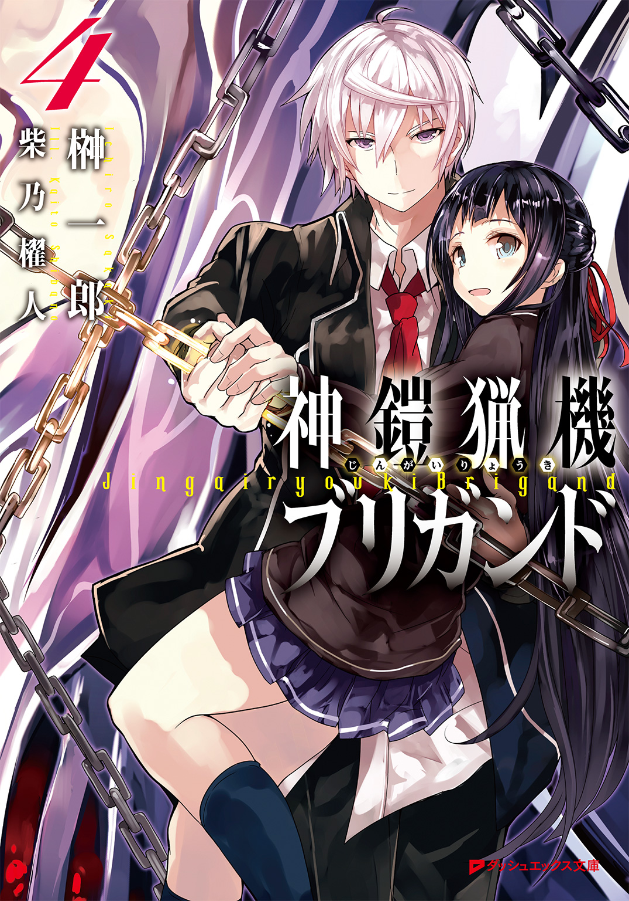
この本は縦書きでレイアウトされています。
また、ご覧になる機種により、表示の差が認められることがあります。
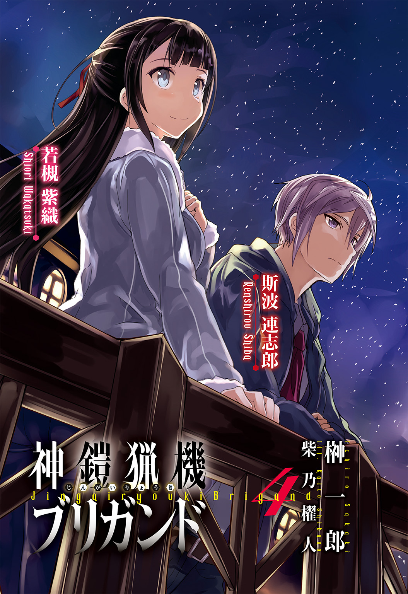
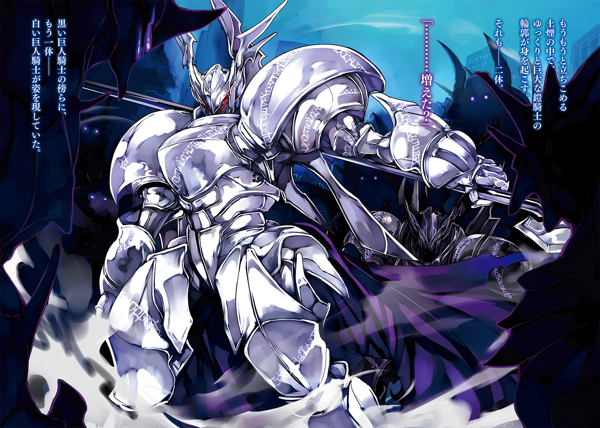
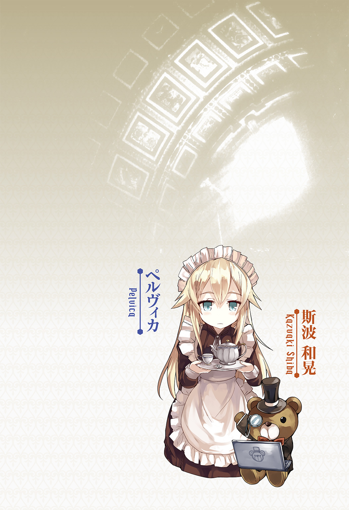
 ダッシュエックス文庫DIGITAL
ダッシュエックス文庫DIGITAL
神鎧猟機ブリガンド４
榊 一郎
序章
まるで宝石箱をひっくり返したかの様な眺めだった。
満天の星が頭上で瞬いている。
紫織は空を仰いで眼を輝かせていた。見ているだけで楽しい。星空がそこに在る事が嬉しい。小さな手を精一杯伸ばせば、あの綺麗な星空に届くかの様な気がした。
「えへへ」
自然に顔が綻んでくる。
夜に外に出て空を見上げていると、それだけで何だかドキドキする。それが住み慣れた我が家のベランダからでも......まるで特別な場所に来たかの様に思えた。いつもはもう布団に入って寝ている時間だから、尚更である。
紫織の傍らには、紫織の背丈と同じくらいの大きな――彼女の感覚からすれば――天体望遠鏡があった。ピカピカに磨かれた真新しいそれは、やはり特別で格好良い。紫織が普段触れている様な玩具ではなく、本当の、本物の道具。何がどうと上手くは言えないが凄く『オトナ』な感じがした。
「おねえちゃん、きれいだね！」
紫織は隣の姉のほうに笑顔を向けた。
「そうね。綺麗だよね」
姉は優しく微笑んで紫織の髪を撫でてくれた。
白くしなやかな指先がショートカットの髪を弄りながら滑り落ちていく。それが気持ちよくて紫織は眼を細めた。
姉は綺麗で、優しくて、頭も良くて、何でも出来る。紫織にとって三つ歳の離れた彼女は誰よりも身近な――共働きで不在がちの両親よりも、ずっと身近な家族であり、自慢の姉だった。この望遠鏡も姉がテストで百点を取った御褒美に買ってもらったものだ。紫織には何処をどう触ればいいのかもわからなかったが、姉は既にもうこれを使いこなして、天体観測を楽しんでいる様だった。
こっそりそれを羨ましく思っていたら、姉が一緒に星を見ようと誘ってくれた。珍しく両親が今日は家にいるのだが、彼等も姉が説得してくれた。お陰でいつもならもう眠っている時間なのに、紫織はこうして大好きな姉と、綺麗な星空を見上げていられる。
本当にそれはもう特別な事で。
だから――
「ほんと、きれい、すごくきれい」
ただただ紫織は、はしゃいでいた。
そんな彼女を姉は束の間、微笑を浮かべて見つめていたが、ふと、その澄んだ眼差しを再び夜空に向けて呟いた。
「でも多分あそこは............地獄なんだと思うの」
「......え？」
姉の口からこぼれ落ちた不吉な単語を、しかし紫織は聞き逃した。
浮き立つ気持ちのせいか、その場にふさわしくない単語を拒否したのかもしれない。あるいは唐突な言葉に理解がついていかなかったのか。地獄という言葉は知っていたが、紫織にとってそれは、本の中にしか存在しないものだった。
「本で読んだんだけどね」
姉は紫織ではなく闇色の空を見上げながら静かに続けた。
「あそこは......お空の向こうは、宇宙っていうの」
「うちゅう......？」
「宇宙って、ほとんど暗闇ばっかりで、ものすごく寒くて、何でも凍りついちゃってるような世界なんだって」
姉の部屋には科学の本や図鑑がたくさんあった。
紫織もいくつか見せてもらったことがあったが、殆ど内容はわからなかった。一方で頭の良い姉は、本や図鑑の内容を驚く程に素早く理解し、正確に覚えている様だった。
姉曰く――
星の瞬く宇宙は真っ暗で、どこまでも広がっていて、今も膨らみ続けているらしい。
しかも空気がなくて、重さも無くて、どんな物もふわふわと浮いてしまうそうだ。
それに、地球より何十倍も何百倍も大きな星が無数にあって――
「............」
紫織はただただ眼を瞬かせるしかない。
幼い彼女に、宇宙の在り様を理解する事は難しかった。姉は、何でも凍りついてしまう様なもの凄く寒い場所なのだと言っていたけれど、だとしたら、とても眩しくて暖かな太陽も、いつか冷えて消えてしまうのだろうか。
不安に思って紫織が尋ねてみると、姉は『五十億年程後にね』と言った。
遠くて。暗くて。寒くて。広くて。
姉は丁寧に説明してくれたが、宇宙とは、何もかもが紫織の理解を絶する規模だった。
「宇宙っていうのは、だから、凄く怖くて辛い所なの。人間がそのまま行ったら、すぐに死んじゃう。息が出来ないし、寒くて凍ってしまうし、有害な放射線にも晒される」
「死んじゃうの？」
「そう。だから多分――」
そこで姉は躊躇する様に一瞬黙り込んだ。
あるいは、幼い妹に聞かせる様な話ではないと思ったのかもしれない。だが紫織は期待に満ちた眼で姉を見つめる。どういう話であれ、紫織は姉が、自分に何かを教えてくれるという事そのものが、嬉しかったのだ。
「多分、みんなは天国ってお空の向こうにあるというけれど、あそこにあるのは天国なんかじゃなくて、本当は地獄なんじゃないかって、私は思うの」
「じごく......」
眼を瞬かせて再び紫織は頭上を見上げる。
「............でも、おほしさまがひかってるよ？ あんなに、きれい......」
「そうね。光ってる」
姉は頷いてまた紫織の髪を撫でてくれた。
「でも、あそこがもし地獄なのだとしたら、お星様はきっと......」
「きっと......？」
「きっと暗闇に墜とされた亡者をより苦しめるための、蜘蛛の糸なんだと思う......」
「くものいと......？」
芥川龍之介の名著を、当時の紫織はまだ知らなかった。
大盗賊カンダタが地獄から這い上がろうとしてすがりつき、欲望を吐露したが故に切れた一筋の蜘蛛の糸の事を、知らない。それはささやかな希望と、そしてそれを押し潰す絶望の物語だという事を、幼い紫織は知らない。
「本当に真っ暗闇で何も見えなかったのなら、きっと苦しむこともなくて、早々に諦めてしまうと思うの。でもほんの小さなものでも、光が......望みが見えていれば、きっと、人間は諦めきれなくて、そこに行きたいと思う。どうしようもないはずなのに、じたばたじたばた足搔き続けるんだと思う」
「......おねえちゃん......？」
姉の口調に何か不安を覚えて、紫織が首を傾げる。
「............あ、ごめんね、紫織」
そんな妹の様子に気づいたのか――まるで、何処か遠い場所から帰ってきたかの様に、悪い夢から覚めたかの様に、姉は眼を瞬かせて表情を和らげた。遙かな宇宙、無限遠の彼方に焦点を合わせていた綺麗な瞳が、傍らの妹に向けられる。
「おねえちゃん」
何故か居ても立ってもいられなくなって、紫織は姉にしがみついた。
別に姉は紫織に謝らねばならない様な事は、何も言っていない。言っていないと紫織は思う。紫織は姉が自慢で大好きだ。自分もいつか姉の様になりたいと思う。姉に触れている事で今まで以上に姉に近づけるのなら、ずっとくっついていたいとも思う。
だが――
「......あ」
夜空を見上げていた姉がふと声を上げた。
「流れ星！ 紫織、見て、流れ星」
「えっ？ どこ？」
慌てて顔を上げる。
確かに二人の頭上に赤い流星が見えた。
消えるまでに三度願いを唱えればそれが叶うと聞いた事がある。紫織は慌てて手を組んで一生懸命に祈った。
（おねえちゃんみたいになれますように、おねえちゃんみたいになれますように、おねえちゃんみたいになれますようにっ......！）
眼を瞑って集中し、頭の中でそう唱え終えてから、改めて瞼を開いて夜空を見上げる。
流れ星が消えるまでにちゃんと三回、お願いする事が出来ただろうか。
「あ、まだあった！」
紫織は思わず歓声を上げた。流れ星は消えることなく、夜空を駆けていく。
赤い光はむしろより強くなり、夜空のどんな星よりも明るく紫織達の顔を照らしていた。
「あれ......？」
おかしい。
それは紫織にもわかった。
「変だね。なんだろう」
流れ星はこれまでにも見たことがある。大抵は夜空をさっと通り過ぎて、すぐに消えてしまった。願いごとを一回でも唱えられたら良い方だった。
なのに、あの赤い流れ星は未だ消えない。紫織の目にもはっきりと、それが地上に向けて降りてくるのがわかった。遙かな空の彼方に在った筈のそれは、今、地平線の向こうを、山の稜線に沿う様にして飛んでいる。
そして――
「――あ」
山の向こうで一瞬、赤い光の花が咲いた。
落雷の様な、地鳴りの様な、低く重い轟音が紫織達を襲ったのはそれから数秒後の事だ。
僅かだが震動も伝わってきた様で、望遠鏡がカタカタと震えて音を立てた。
「............」
悲鳴を上げる様な強さの音でも光でもない。
だが、それが尋常ならざる現象なのだという事は、紫織にもわかった。
ベランダの柵を摑んだまま、姉と共にただ立ち尽くす。一体何が起こったのかわからない。どうしていいのかもわからない。地震や火事ならばどうするべきか教わったが、きっとこれはそういうのとも違うだろう。
紫織は傍らの姉を見上げたが、物知りの彼女は、ただ眼を細めて山の向こうを見つめているだけだった。待っていても説明をしてくれる様子はない。
代わりに――
「二人とも！」
「大丈夫!?」
サッシが開いて、両親が転がるようにベランダへと出てきた。両肩を摑まれ安否を問われて紫織は素直に頷いた。驚きはしたが、別に怪我はしていない。
ふと見下ろせば、近所の家からも、人が通りに出たり、ベランダに出て、何やら大声で話し合っている。何人もの声が入り乱れていて、紫織には彼等が何を言っているのかよくわからなかった。
「今の音は――」
「お父さん。隕石が落ちたみたい」
姉がそう言って山の方を指さした。
「隕石？ それであんな音がしたのか？ それじゃずいぶん近いぞ」
「うん。あの山の裾野に落ちたわ」
姉が指差したのは、紫織も見ていた場所だ。赤い流れ星があの辺りで消えて、その後に轟音が響き渡った。
「あっちは鏡池のほうだな。火事になってるわけではなさそうだが」
父は暗闇を見透かそうとするかの様に眼を細めて言った。
「もしかして、池に直接落ちたのかも」
「そういうことなのか？」
「二人とも、怪我はないのね？」
改めて母が紫織と姉の顔を交互に見ながらそう問うてくる。
「私は平気。多分、紫織も」
「だいじょうぶ......」
娘達がそう応えるのを聞いて、両親は安堵の吐息を漏らした。
「とにかく中に入りなさい。何事もないと思うが」
「そうね。紫織はもう寝なさい、ね？」
無言のまま紫織は頷く。
もう夜更かしだの天体観測だのと言っていられない事態なのは紫織にもわかった。誰かが通報したのか、消防車のサイレンが何処かで響いているのが聞こえた。あるいはあの山の向こう、流れ星が落ちたという場所に向かっているのかもしれない。
「紫織。中に入ろう」
姉もそう言って促してくる。
「......うん」
頷いて部屋に戻りつつ――しかし紫織は、何故か妙に後ろ髪を引かれる様な気持ちを覚えていた。
あの赤い流れ星がひどく気になる。
姉の言う『地獄』からこぼれ落ちてきた、何か。
姉に手を繫いでもらって同じ布団に入ってからも、紫織の脳裏には闇空を過ぎる赤い光が焼きついて消えなかった。凶兆などという言葉はまだ知らない彼女だったが、それはずっと......言い知れぬ不安と共に彼女の胸の奥をざわめかせていた。
あれは本当に流れ星だったのだろうか。
それとも――
............
とある夜、遙かな空の向こうから訪れた小さな小さな石礫。
それが『地獄』の始まりを告げる徴であったのだと、この時の紫織は勿論、誰も気づいてはいなかった。
第一章
「おはよう――諸君！」
校門の前では、今日も今日とて朝の声かけに励む生徒会長の姿があった。
生徒会長・相原綾。
小柄で童顔な彼女が毎朝そうしている姿は、この学校の日常そのものだ。登校してくる生徒一人一人の顔を見て、手を振ったり、頷いてみせたりと、いろいろ忙しげである。校門の前で右に左にと駆け回る姿はまるで体温の高い小動物の様だった。
「さすが会長。朝から元気だな」
「分けてほしいわ、あのテンション」
「毎日楽しそうだもんなあ」
生徒達も笑顔でそう評して綾の脇を通り過ぎていく。
だが――
「んん？ 聞こえているぞッ！」
背後から綾の声が飛んできて、生徒達がびくりと肩を竦めた。
綾は生徒会長、というより一種、学校のマスコットの様な存在として多くの生徒達から親しまれ愛されている。どの生徒も別に悪く言ったつもりはないのだが、聞きようによっては馬鹿にしている様に思えたかもしれない。
生徒達はおっかなびっくり背後を振り返ると、綾が、腰に手を当てて何やら得意げな表情を浮かべているのが見えた。少なくとも怒っている様には見えない。
「その調子だ。もっと褒め称えてよし！」
「......はぁ」
生徒達は苦笑を浮かべる。
そんな間にも別の生徒達が綾の横を通り過ぎながら、声をかけていく。
「今日も可愛いです、会長！」
「ありがとう。君も可愛いぞ！ 特にその新しい髪留め、よく似合ってる！」
「え？ 凄い、会長、なんで？ 親も気づいてないのに」
「男子三日会わざれば刮目して見よというが、私に言わせれば女子も同じだ。十代女子も三日で変わる！ より可愛く、より綺麗に、ならば刮目するのは当然の礼儀！」
男子生徒が言えば『キモい』『ストーカー？』などと言われて引かれそうな台詞だが、自身も美少女である綾が言うと嫌味がない。またよく通る綾の声は、はきはきとした口調と相まって、実に爽快な印象がある。動作もきびきびしていて、見ている方としても気持ちがいい。
まさに絶好調といった感じだ。
だから......
「おはよう！ 爽快な朝だ！ 実に爽快だ！ 君もそう思うだろう？」
「え？ お、俺？」
「そうだ、しかし君は目の下に隈ができているな、ゲームか深夜番組か読書かは知らないが、夜更かしは美容の敵だ、覚えておくように！」
「いや、美容とか言っても俺、男子――」
「男子とて可愛いに越した事はない！」
その言動が実は、いつもと微妙に違う事に――まるで何かを誤魔化して日常を演じようとするかの様な、空元気だと気づけるのは、彼女を日頃からよく見ている人間に限られるだろう。
例えば......
「おは――」
綾の表情と仕草が一瞬だが凍りついた様に止まる。
連志郞は彼女の眼を静かな眼差しで見返していた。
彼女と眼が合うのは珍しい事ではない。いつもならば綾はすぐさま声をかけて、お節介にも連志郞の私生活について苦言を呈してくる筈だった。
だが今日は少し様子が違う。
「お、おはよう。斯波くん」
綾が口籠もる姿を見るのは本当に久しぶりだった。
「ああ」
連志郎は淡白にそう応じた。
こちらは全くいつも通りの反応である。恐らく誰の目にもそう映るだろう。変わった所は何もない。綾の様に、無理矢理、日常を装っているわけでもない。全くの平常運転だった。
だが綾は、そうは思わなかったらしい。
「その......」
ふと眼を伏せて彼女は呟く様に言った。
「あまり気を落とさないように。残念という言葉では、済まされないと思うが」
「ああ」
「なんと言うか............残念だ」
そう言って綾は何かを払い落とそうとするかの様に首を振る。
「ああ、すまない。私の語彙も貧弱だな。情けない事だ」
「ああ」
それから数秒の間、二人の間に沈黙がわだかまった。
他の生徒達がそんな綾と連志郞を不思議そうに眺めつつも、声をかける事なく脇を通り過ぎていく。気まずそうに俯いて黙り込む生徒会長の姿は、彼等の眼には非常に珍しいものとして映った事だろう。
やがて――
「......紫織ちゃんまで、いなくなってしまうとは思わなかった」
綾の声が暗く沈んでいた。
連志郞はただただ無言である。
綾の表情は沈鬱そのものだった。今の今まで生徒達に向けていた彼女の笑顔が、心の痛みを堪えて無理矢理に取り繕ったものだったのだという事が、よくわかる。
いや。相原綾という少女は、元々繊細で臆病なところを抱えていた。
そんな自分が嫌いで仕方なくて......だから綾は自分の理想像を演じてきたのだ。その事を連志郞は知っている。よく知っている。中学生の頃の彼女は今と全くの別人だ。
ともあれ――
「後輩にせよ、同級生にせよ......友達を亡くすのは辛いよ。とても慣れない」
「............」
絞り出すような言葉を、連志郎は無表情のまま聞いていた。
綾が言っているのは、若槻紫織の事だ。
彼女はもう学校に来る事はない。学生名簿からも早々にその名は抹消されるだろう。若槻紫織が死亡したという報告は既に学校にも届いている筈だった。
「会長こそ、あまり気にしないほうがいい」
「......え？」
綾が眼を瞬かせながら顔を上げる。
彼女が驚くのも当然――それは連志郞らしからぬ一言だった。口調こそいつも通りに抑揚を欠いたものだが、彼が口にしたのは綾を慰める言葉だ。他人に対してひたすら無遠慮で無関心な態度を貫いていた彼にしては、ひどく珍しい気遣いだった。
「ありがとう。斯波くんにそう言ってもらえると......その、気持ちが少し、楽になった」
言葉を慎重に選びつつも、そう言う綾。
自分よりも連志郞の方が辛い筈――そう考えているのだろう。
「............」
連志郎はやはり無言。
気の利いた事を咄嗟に言い返せる程、彼の口は達者ではない。
代わりに、そろそろ話を切り上げるべきと告げるかの様に、予鈴が二人の頭上に鳴り響いた。校門付近にいた生徒達が足を速めて、教室に向かう姿が見えた。
「私たちも行こう」
「ああ」
二人は並んで昇降口に向かう。
だがその間で、言葉が交わされる事はもうなかった。
●
ぎしり――と背もたれを支えるパイプが小さく軋んだ。
東城美沙紀は口を真一文字に引き結んだまま、もう一度書類を見返す。
それは草薙機関のロゴマークが入った正式な書類だった。先日、市内で起きたトラックの衝突および爆発炎上事故について詳細が記されている。
その中に――
『管理番号ＮＥ１９３４ 若槻紫織 死亡』
そんな一文があった。
「............」
コーヒーを口に含む。苦い。もう何度目かもわからない溜め息が、唇からこぼれ落ちた。
若槻紫織。
元〈悪魔憑き〉で、美沙紀たち草薙機関の重要な監視対象だった少女だ。
彼女は元々草薙機関管轄下にある〈悪魔憑き〉用の治療及び研究施設――通称『収容所』にいた患者である。既に病状はかなり危険な段階にまで進行しており、他の重症患者と同様、遠からず『処分』される予定だった。
〈悪魔憑き〉という病は、本人よりも周囲に甚大な被害をもたらす。一定限度を超えた患者はまるで悪魔そのものと化したかの様に、異形の姿をとって暴れ始めるのだ。勿論その限度を超える前に暴走する自らの『力』で自滅してしまう者も少なくないが。
いずれにせよ......若槻紫織は、そうなる前に処分される事になっていた。
だがある日、彼女のいる『収容所』で起きた事件を境に、彼女の中の〈悪魔〉は姿を見せなくなった。具体的には不可視の力による破壊現象――まるで目に見えない魔物が暴れ回るかの様な――が全く生じなくなったのだ。
検査の結果は全て陰性。
因果関係はわからないまま、若槻紫織の〈悪魔憑き〉が自然治癒した可能性が指摘され、『収容所』の収容人数が限界に達していた事もあって......極めて稀少な症例として彼女は『収容所』から解放される事になった。
ただし経過観察という名目の監視を付けて。
その監視役を命じられたのが美沙紀である。
彼女は紫織が〈悪魔憑き〉患者の社会復帰第一号として、貴重なテストケースになると考えていた。今現在〈悪魔憑き〉は事実上、不治の病だが、将来的には治療方法が確立される可能性もある。その際に元〈悪魔憑き〉患者達が再び普通の暮らしに戻るためには、何が必要か......それを探るための礎になり得ると。
そう。美沙紀は紫織に期待を寄せていた。
だが――
「上手くいくと思っていたのに......」
紫織は......少なくとも美沙紀の眼から見る限り、順調に学校に馴染んでいた。
幾つか経過観察する上での問題はあったが、それは美沙紀達草薙機関側の問題である。このまま一年、二年と経過して卒業を迎え、若槻紫織は無事に高校生活を完遂出来るのではないか――そんな希望的観測を美沙紀は抱いていたのだ。
しかしその望みは呆気なく絶たれた。
「『再発の疑いあり』、か」
二カ月ほど前、美沙紀自らが記した報告書の一文だ。
一学期の終業式の日、学校は〈悪魔憑き〉の〈具現体〉による襲撃を受けた。体育館を含む一帯が悪魔の生み出す異空間に飲み込まれ、全校生徒がその中に閉じ込められるという大事件だった。
一歩間違えれば、無辜の生徒達がまとめて犠牲になったかもしれない。今までは噂に過ぎなかった〈悪魔憑き〉の存在と危険性が明るみに出て、日本という国家は大混乱――勿論、もし治療法が確立されたとしても、元〈悪魔憑き〉達の社会復帰は絶望的な状況に追い込まれていただろう。
それが――奇跡的にも人的被害は零で済んだ。
結果として〈悪魔憑き〉の〈具現体〉は〈黒騎士〉によって撃破されたのだが、〈黒騎士〉が現場に現れるまでの間、異空間内部で〈悪魔憑き〉の能力を阻み、結果として生徒達に危害が及ぶのを阻止した要因があった。
紫織だ。
危機的状況に刺激されたのか、彼女の悪魔の力が再発し〈悪魔憑き〉の脅威を撥ね退けたのである。
生徒達を紫織が守った事については、草薙機関としても感謝してしかるべきだろう。だが病としての〈悪魔憑き〉が再発した事については、到底、看過できる問題ではなかった。
草薙機関はすぐさま紫織の身柄を確保し、徹底的な再検査――という名目の人体実験を行う事を決定した。紫織の取り戻した筈の日常、平凡な学生生活は、その時点で終了していたと言っていい。拘束にはずっと彼女を監視してきた美沙紀も同行を命じられていて、非常に気が重かったが――実際に美沙紀が紫織を連行する事にはならなかった。
紫織が、トラックによる交通事故に巻き込まれて命を落としたからである。
目撃者は多数。
繁華街の外れで紫織は車線を大きくはみ出したトラックに轢かれてしまった。さらに車体は道路脇の建物に横転しながら激突――爆発、炎上した。トラックの運転手も含め、遺体もろくに残らない凄惨な事故だったという。
「......いえ......」
それは――ひょっとしたら、事故ではなく自殺だったのかもしれない。
この学校では先立って、沢渡夏美という少女もタンクローリーの爆発に巻き込まれて亡くなっている。沢渡夏美は生徒会の役員で、紫織とも面識があった。彼女の死を自分の絶望的状況と結びつけ、発作的に同じ死に方を紫織がしたのではないか――そんな風にも思える。〈悪魔憑き〉としての念動力を駆使できたならば、トラックを操って事故を起こさせる事も可能だろう。
もしそうだとしたら。
紫織を追い詰めたのは自分達だ。勿論、再び病状が進行して手がつけられなくなれば、彼女は『収容所』の職員達の手によって『処分』されていた事だろう。だがそれまでに治療法が確立される可能性だってゼロではなかった。
自分達が、死なせたのだ。本人には何の咎もない、ただ厄介な病気に罹ったというだけの、少女の未来を握り潰したのだ。いや。紫織が自分で握り潰さねばならない程に追い詰めてしまったのだ。自分達で手を汚すよりも遙かにたちが悪い。
「............何をやっているのよ、私達は」
書類を投げ出し、机に突っ伏す。
涙は出ない。出るのは後悔の溜め息ばかりだ。〈悪魔憑き〉に対する自分たちの無力さは今までにも嫌と言うほど味わってきたが、それでも今回ばかりは、今までとは頭上にのしかかる重みが違う。
若槻紫織は顔も知らぬ書類上の誰かではない。
美沙紀は目の前の、手の届く場所にいた筈の少女を一人、救えなかったのだ。
●
連志郎が教室に入ると、その場に満ちていたざわめきがぴたりと止んだ。
「............」
気まずそうな同級生達の視線が集中する。
だが連志郞は特に反応を示さず、いつも通りに自分の席に着いた。
ふと――近くの机に飾られた花瓶が眼に入った。
「............」
手向けの白い花。
それは先日まで紫織が座っていた席だった。
連志郞は無表情のまま、しばしその花に視線を注いでいた。
彼自身はいつも通りに振る舞っているつもりであったが、あるいは、同級生達にはそう見えなかったのかもしれない。むしろ綾の様に無理をして平静を装っているとでも思われたか。教室の中は痛い程の沈黙に満ちて、誰もが息を殺していた。
だが――
「よ、よう。斯波」
皆が遠巻きにする中――重苦しい静寂に耐えられなくなったか、連志郎に声をかけてくる一人の男子生徒がいた。
風間大悟である。
健康優良、元気潑剌、を絵に描いた様な少年だが、さすがに今はその表情は引き攣り気味で、片手を挙げる仕草もぎこちない。連志郞のところに歩み寄ってきたのはいいが、そこからは言葉も出ないまま、立ち尽くしている。
「............」
何か用か、と促す様に連志郞は席に座ったまま、傍らに立つ大悟を見上げる。
大悟は――彼にしては本当に珍しく、視線を右往左往させながら、ぼそぼそと呟く様な口調で言った。
「ま、その、なんだ。元気出せよ」
「............」
「ほら、ええと、その......そう、そうだ、『煌きの戦士ダイヤマン』だって恋人の死を乗り越えて強くなったりして、その」
「馬鹿ッ！」
後ろからそう詰る声と共に大悟の襟首を摑んで引っ張る者がいる。
連志郞が、大悟共々そちらに眼を向けると......そこには大悟の相棒ともいうべき少女、今村優羽が険しい眼をして立っていた。
「あ......」
すぐに大悟も自分の失言に気づいたか、眼を瞬かせてから、顔をしかめて――気合いを入れ直すかの様に、両頰を左右の掌で強く叩いた。
「......悪い」
それから彼は素直に頭を下げてきた。
「くだんねえ事言った。許してくれ、斯波」
「............」
「えーと......」
「............」
「......ああ、そうだ、ほら、昼飯、昼飯喰おう！ 美味いモン喰えば元気出るぞ。焼きそばパンとかどうだ？ おごってやるから！」
「うちの購買では売ってないわよ」
溜め息交じりに優羽が言う。
「コンビニダッシュでもなんでもすりゃいいだろ！」
「いいからもう大悟は黙ってなさい！」
連志郎そっちのけで大悟と優羽が言い合いを始める。
二人は恐らく、紫織の事について責任を感じているのだろう。
大悟も優羽も学生ながら、対〈悪魔憑き〉を専門とする草薙機関に所属している。基本的には〈悪魔憑き〉の最終形態、〈魔神態〉を制圧するための特殊兵器――人型ロボットを実験的に運用する部隊に所属しているが、同時に紫織の監視も任務の内だった様だ。
万が一にも紫織が〈悪魔憑き〉を再発させて暴れ始めた場合、これを制圧する、そういう事も想定して同じ学校に編入してきたのだ。
そして先日の事件の際――二人は紫織の〈悪魔憑き〉が治ってなどいない事を知った。
彼等の立場上、それを上層部に報告しないわけにはいくまい。たとえ友達を『売る』に等しい行為だとわかっていても。
万が一に〈悪魔憑き〉の力が暴走を始めれば、何人もの、いや、場合によっては何十人何百人もの死傷者が出る。如何に彼等が、任務を離れた部分で紫織と仲良くなっていたとしても、他の生徒達や一般市民の安全に配慮するならば、見て見ぬ振りをするわけにはいかないだろう。
自分達が紫織を死に追いやった。
そんな風に大悟と優羽は考えているのかもしれない。そして紫織を失い、連志郞がどうしようもない程に落ち込んでいるのだと思っているのだろう。
「ありがとう」
連志郞は言い合いを続ける大悟と優羽に向けてそう言った。
「気を遣わなくていい。僕は大丈夫だ」
「............」
簡潔に、わかりやすく言ったつもりだったが、大悟と優羽は不思議なものを見たかの様に揃って眼を瞬かせていた。そればかりか他の同級生達も何やら驚いた様な表情を浮かべている。
「なあ、優羽。アイツ、今なんつった？」
大悟が呆然とした表情でそう問う。
「ありがとう、って」
「だよな。空耳じゃねえよな」
「二人揃って幻聴でも聞いたのでなければね」
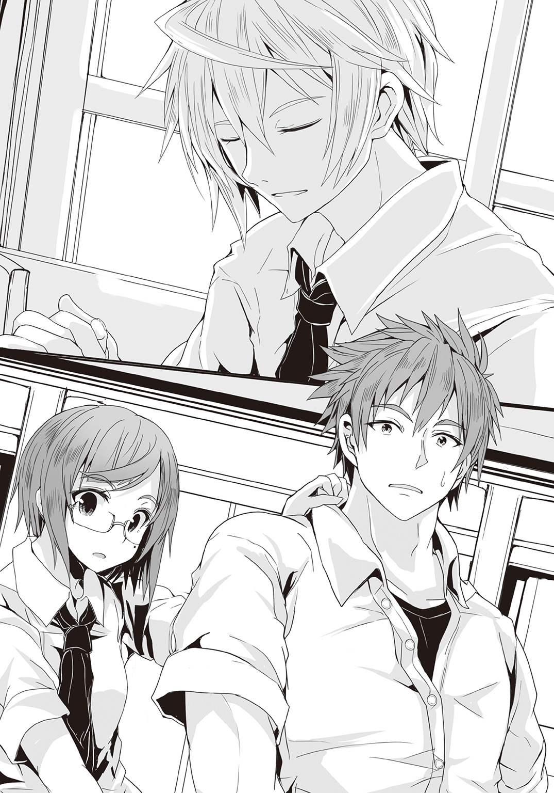
言って優羽は溜め息をつく。
「初めてじゃねぇか？ 斯波がそんなこと言うの」
「......そうだね」
授業が始まるまでやる事もないので、連志郞はぼんやりと窓の外の風景を眺める事にした。だがこれも周囲には悲しみに沈んでいるかの様に見えたらしい。いつもはアニメ雑誌を取り出して読むのだが、今日に限って忘れてきてしまった。
「やっぱりショックなんだろうね」
「そりゃあ、そうだよ」
「斯波くん、可哀相」
「同情とか、斯波は嫌いそうだけどな」
............
同級生達が囁き合う声が聞こえてくる。
声を潜めているつもりなのかもしれないが、生憎と連志郞は耳が良い。
同級生達にとって連志郞は『突然の事故で恋人を奪われた悲劇の少年』なのだろう。紫織の死はあくまで交通事故という事になっている様で、〈悪魔憑き〉に絡めてこれを語る者や、自殺とみなす者はいない様だ。もしこの場に紫織本人がいたならば、顔を真っ赤にして『恋人とかじゃないから！』と若干、本題からずれた部分を否定しただろうが。
普段ならば話をまとめにかかる綾も、今日は黙ったままである。
「............」
連志郞は教室に満ちるざわめきを聞きながら、無言で授業の開始を待った。
●
薄暗いダーツバーの店内には緊張をはらんだ空気が漂っていた。
放棄された雑居ビルの地下――秘密結社〈フォスファー〉構成員達のたまり場である。
「――で？」
棘を含んだ声が問うてくる。
「実際のところ、どうするのさ。首領サマ？」
カウンターで文庫本を開く蒲生亜麻音に、半ば喧嘩腰の口調でそう尋ねるのは、小学生と思しき背格好の少年である。どう見てもこの種の店には不似合いだが、〈悪魔憑き〉達にとって外見などはさしたる意味を持たないし、世間的な道徳や法律はもっと無意味だった。何よりこの店そのものが既に形骸となって久しい。
少年だけではなく、他の〈悪魔憑き〉達も年齢や服装にはまるで統一感がない。
今この場で彼等に共通しているのは、亜麻音を注視しているという点だけだった。
「............」
亜麻音は彼等の視線を受け流し、カウンターに置いたカフェオレに手を伸ばす。
「なんとか言いなさいよ！」
がん、と耳障りな音と共にカウンターが揺れる。
亜麻音が眼を向けると、カウンターの端で、彼女と同じか少し歳上といった感じの少女が、カウンターを蹴った足を戻している姿が見えた。キャミソールにホットパンツ、最低限の範囲を除いてこれでもかと肌を露出した格好で、明らかに華奢な体軀だとわかるのだが――彼女が蹴った部分は、鉄槌でも叩きつけたかの様に、大きく凹んでいた。
怒りに染まった顔で、少女もまた亜麻音を睨んでいる。
「............」
亜麻音は床に転がり落ちたカフェオレのカップを一瞥し――本を閉じた。
何をするにも各人の自由、必要なのは最低限の情報共有で、束縛も干渉もなし――それが亜麻音の掲げる〈フォスファー〉の理念で、それは彼等も納得をしていた筈だが、さすがにこの場で読書を続けるのは、周りに挑発と受け止められかねなかった。
ダーツバーの店内が以前より少し広く感じるのは、集う者の数が減ったからだろう。
特に二カ月前には一気に六人もの構成員が減った。
ソファーの前の灰皿や、パソコンは、使い手を失って埃をかぶっている。窓際の同じ位置に佇んでいた影も今はない。それを嘆く様な感性とは無縁の〈悪魔憑き〉だが、ある種の危機感は覚えている様だった。
「〈悪魔狩り〉をどうする。もう放ってはおけないぞ」
「何人やられたのよ、あのクソ野郎に！」
「と、とっとと食っちまわないから、こ、こんなことになるんだな、な」
全員が口々に〈悪魔狩り〉への憤怒と憎悪をぶちまける。
本当に様変わりしたものだと亜麻音は思う。
人知を超えた力を持ち、巨大な異形に身を変じる事も可能、それ故に冷酷非道、残虐無比で、人間など歯牙にもかけない凶悪な『進化者』――〈悪魔憑き〉。ほんの少し前までは誰もが自信に溢れ、不遜な態度を露にして、人間社会からはみ出た事をむしろ『選ばれた者の証』として誇るかの様だった。〈悪魔狩り〉と呼ばれる謎の敵に最初の構成員が倒された時も、「弱いヤツが悪い」と鼻で笑っていた者達である。
そんな連中が――今、〈悪魔狩り〉に怯え、恐怖を紛らわせようとするかの様に、〈フォスファー〉首領たる亜麻音を問い詰めている。集団の長ならば長らしく事態を重く受け止めて対策を練るべきだという事らしい。
「結局〈悪魔狩り〉の正体はわからない。草薙の妙なロボットも出てきて、いいようにヤられてるだけじゃない。誰よ、あいつらの正体を調べようなんて言い出したバカは！」
「そのバカならもう殺されたよ。覚えてないの？ おばさん」
「あ？ なんつった、クソガキ！」
「耳まで遠くなったの？ 救いようがないね」
キャミソールの少女と小学生の間で敵意の火花が散る。
周りは顔をしかめるが、止めようとはしなかった。結局のところ、恐怖を紛らわせるために怒りをぶつける先は誰でもいいのだろう。そのまま共に〈魔神態〉を出して殺し合いでも始めそうな勢いだったが、さすがにそこまでいくと面倒事が増える。
亜麻音は睨み合う二人の呼吸を見定めて、その合間に言葉を滑り込ませた。
「〈悪魔狩り〉と草薙機関の玩具――〈ブレイバー〉だったかしら」
ぴくりと〈悪魔憑き〉達が反応するのを確かめてから亜麻音は続ける。
「正体ならわかったわよ」
店内の空気が一変する。
亜麻音に向けられていた苛立ち紛れの敵意が、戸惑いと驚きに変わっていた。
「今までの騒ぎも無駄ではなかったという事よ。〈悪魔狩り〉の手がかりは手に入ったし、私もこの目で確かめられたから。やられた者には――気の毒だけど」
〈悪魔狩り〉も草薙機関の人型兵器も〈悪魔憑き〉を殺しはしない。
だが〈悪魔狩り〉に倒された〈悪魔憑き〉は人格崩壊を起こして廃人同然になる様だし、草薙機関に囚われれば、結局は生きては出られぬ『収容所』送りになってしまう。〈魔神態〉を出せる様な〈悪魔憑き〉は危険という事で、早々に薬漬けの上で処分されてしまうだろう。
それを亜麻音は「気の毒」の一言で済ませたわけだが、特に気に障った者はいない様だった。元々仲間意識が薄い〈悪魔憑き〉にとって、他の〈悪魔憑き〉の生死そのものは興味の対象外だ。彼等が気にしているのはあくまで自分達に累が及ぶ可能性――〈悪魔狩り〉と草薙機関の実行戦力、この存在そのものだ。当初は嘲笑の対象だったこの二者は、今や〈悪魔憑き〉達にとって無視し得ぬ脅威になっていた。
「〈悪魔狩り〉も〈ブレイバー〉の操縦者も学生よ」
「学生......？ マジか」
「貴方もね」
亜麻音は小学生の〈悪魔憑き〉を見ながら言った。
「共に顔と名前は把握したわ」
「何故それを早く言わない!?」
「問われなかったから」
平然と亜麻音はそう言った。
情報共有は〈フォスファー〉の存在理由そのものだが......これについて真剣に考えている者は少数だった。共有すべき情報か否かを取捨選択する事には多くの者が無頓着で、積極的に情報を集めている亜麻音や一部の者を、『もの好きな』と笑う者が大半だったのだ。
「ともあれ――」
顔をしかめて黙り込む〈悪魔憑き〉達を改めて見回しながら亜麻音は言った。
「皆が無視出来なくなったというのならば、叩き潰せばいいのよ」
「それは――」
〈悪魔憑き〉達が顔を見合わせる。
相手は既に二十人以上の〈悪魔憑き〉を葬ってきた〈悪魔狩り〉と、国家という組織力を背後に持つ草薙機関の人型兵器である。何の策もないままに向かっていけば返り討ちに遭う可能性が高い。
「別に相手の得意なフィールドで戦ってあげる必要はないのよね」
亜麻音は苦笑を浮かべてそう言った。
「得意なフィールド？」
「〈魔神態〉で戦うのは避けるってこと？」
「そう。正面からではなく奇襲」
「............」
〈悪魔憑き〉達の間に戸惑いの空気が広がっていく。
彼等にとって〈魔神態〉は自尊心そのものだ。〈悪魔憑き〉患者の多くは能力が安定し〈魔神態〉という形態をとる事が出来る様になる前に、自分の能力を暴走させて死ぬ。つまり〈魔神態〉とは〈悪魔憑き〉にとって一人前の証でもあるのだ。
それを使うなと言われるのは、心外だったのだろう。
更に――
「もっとわかりやすく言いましょうか。――暗殺」
再び空気が凍りつく。
充分にそれを感じて亜麻音は小さく微笑んだ。
前述の通り――〈悪魔憑き〉は基本的に自らの能力を誇る。機会があればこれを誇示したいという欲求を持っている。
そもそも〈悪魔憑き〉の感性や情動は人間のものと大きく異なる。その最たるものが暴力衝動と理性による歯止めだ。〈悪魔憑き〉はこの均衡が暴力衝動の方に大きく偏っていて、隙あらばこれを噴出させてしまう。
殴って、潰して、引き裂いて、その上で哀れな獲物の断末魔を嘲笑する。要するにそれが〈悪魔憑き〉達の基本的な流儀であって、背後からそっとナイフで一刺し、などという方法は彼等の性に合わない。
だが――
「やられてばかりじゃ面白くないでしょう？」
駄目押しの様に亜麻音はそう言った。
〈悪魔憑き〉達は大概が非常に高い――というより異様に肥大化した自尊心を持ち合わせている。そこを上手く突けば彼等を扇動するのは難しい事ではなかった。
「やり方を少し考える必要があるけど、普段の彼等はただの人間よ」
だから普通に考えれば〈悪魔憑き〉の側が負ける事はあり得ない。
「なら簡単に仕留められるじゃない。〈悪魔狩り〉とかあのロボットみたいな器がなきゃ、アタシたちが負けるわけないし」
「バカみたいな力押しじゃなく、暗殺ってやり方がスマートでいいよね」
「こ、こ、殺してやるんだな。首、ひねって、千切ってやるんだな」
どうやら誰もが亜麻音の案に納得した様だった。
確実な勝利を得るための方法が示唆された事で、〈悪魔憑き〉達の緊張は緩み、彼等は饒舌になっていた。そればかりか、表情や声音に興奮が見て取れる。多くの者が頰を紅潮させており、息を荒らげている者すらいた。
異様な空気がダーツバーの中に満ちていく。
そして――
「............」
亜麻音は自身の身体の奥底で生じる熱を感じていた。
ゆっくりと腕を動かして自分の身体を抱き締める。敏感になっていた肌が衣擦れにすら反応するのがわかった。自分の手なのに誰かに愛撫されているかの様な感じがする。
ここしばらくは感じていなかった興奮であった。
これは――
（......ひょっとして）
手を伸ばして制服のスカートをたくし上げ、自分の股間に触れながら亜麻音はふと一つの考えが頭の中に組み上がっていくのを感じていた。
〈悪魔憑き〉は性欲を持たない。
少なくとも尋常な性的嗜好がない。
例えば異性の裸体を目の前にしても動物的な欲情をしない。趣味嗜好の違いというわけではなく......性別や年齢や容姿に関係なく興奮しないのだ。
肉体的には反応するので、行為そのものは可能なのだが......それだけだ。〈悪魔憑き〉達は総じて性的行為に対し特別な感慨を持ち合わせていない。以前〈フォスファー〉の構成員同士が店の中で絡み合っていた事があるが、誰も気にしていなかった。当人達ですら、あくまで興味本位のお遊びでしかなく、暇潰しにもならないと言っていた程だ。
性欲は、本来、生物が次世代を残すための、本能的な欲求である。
子孫を生み、種を絶やさないことが、すべての生物の遺伝子に刻まれた義務だ。生命の生命による生命のための行為。細かな趣味の差はあれど、性欲は根本でそこに紐付いている。
〈悪魔憑き〉達は、自分達を人類の進化種と定義している者が多いが――本能的に繁殖できない生き物を、果たして『種』と呼んでいいのかどうかには疑問が残る。
その一方で......〈悪魔憑き〉達は、他者を滅ぼす事には性的興奮を覚える。
今〈黒騎士〉と〈ブレイバー〉を斃すとはっきり決めた事に、亜麻音が、そして他の者達が激しい興奮を覚えている様に。
（まるで代償行為の様な――）
これは一体どういう理屈なのか。
単なる倒錯的嗜好――加虐嗜好の一種か。
それとも、もっと別の何かなのか。
だが多くの〈悪魔憑き〉が揃って同じ性的嗜好を持つという事は、何か意味があるのだろうか。もし〈悪魔憑き〉にとっては、死や破壊をもたらす事こそが本能に刻み込まれた喜びの引き金なのだとしたら......
「それこそ『悪魔』そのものだわ」
こんな破滅的な生き物は、他にいない。
破壊や死に本能的な快楽を覚えるとするならば、その行き着く先は滅亡しかない。
人間のみならず、その上位種たる自身ですらも、等しく滅ぼし尽くす事こそが〈悪魔憑き〉達にとっては最大にして究極の快楽となる。しかも自分達だけでは満足に繁殖も出来ないくせに、自分達の苗床たる人間を滅ぼす事には、まるで躊躇がない。全ての滅亡に向かうその嗜好を止める事は不可能だろう。
滅ぼして滅ぼして、滅ぼし尽くして、挙げ句に、自身も滅ぶ。
それこそまさしく愚行にして悪行、『悪魔』の所行だ。
「............」
そもそも〈悪魔憑き〉とは一体何なのか。
どうしてこんな不自然な存在が生まれたのか。
進化の必然が生んだ生き物だとはとても思えない。
その事についてずっと興味を持ち続け、自分を含め〈悪魔憑き〉達を観察し、考察のための基礎、情報を収集するべく〈フォスファー〉を立ち上げた。
（でももし......私達が根本的な勘違いをしていたとしたら......？）
〈悪魔憑き〉にとっての〈悪魔〉とは、能力の別名だった。
少なくとも多くの〈悪魔憑き〉はそう考えているし、亜麻音もそう思っていた。
だが――亜麻音達の中に居るそれに意志があるのだとしたら。
能力を使っているつもりでその実、能力に使われているだけなのだとしたら。
〈悪魔憑き〉とは――
「まさかね......」
他者の目を気にする事もなく、淡々と指を動かして自慰行為に勤しみながら......亜麻音は苦笑を浮かべた。
●
街外れの坂道を、連志郎は黙々と登っていく。
一人でこの道を歩くのは珍しい事ではない。むしろそちらが普通で連志郞にとっての日常だった。この数カ月ほど、連れ立って歩く者がいた事の方が例外だったのだ。
「............」
ふと、立ち止まって街の方を振り返る。
夕暮れの気怠い朱さが全てを染め上げていた。道に沿って地面に長々と刻まれる連志郞の影は、まるで街の方に未練を残しているかの様にも見える。
尾行されている様子はない。それを確認すると、連志郞は古めかしい洋館の門をくぐり、庭を歩いて玄関に入る。
連志郞の帰る時間を知っていたかの様に、そこには清楚なメイド服に身を包んだ金髪の娘が丁寧な一礼で彼を迎えてくれた。
「お帰りなさいませ。連志郎様」
「ああ。変わったことはないか、ペルヴィカ」
「ございません」
一礼の後、メイドのペルヴィカは顔を上げてそう答える。
整いすぎた風貌と洗練された所作は、洋館にメイド服という日本離れした雰囲気によく溶け込んでいた。もう十年近くこうして暮らしているので連志郞は特に何の感慨もないが、慣れない他者からすれば、戸惑う空間なのだろう。まるで門を境に歴史上のヨーロッパに飛んでしまったかの様にも思える――と評したのは、紫織だ。
「着替えてくる」
「和晃様が、お話があると」
「わかった」
鞄をペルヴィカに預け、廊下を歩く。
和晃は連志郎の叔父で、この屋敷の主人だ。連志郎は衣食住に限らず、さまざまな面で彼の世話になっている。それを恩に着せようとする様な真似は一切しない和晃だが、未成年の被保護者としては、求められれば話に付き合う程度の義理は果たすべき、と連志郞は考えていた。
連志郞の側からも、報告しておくべき事柄は幾つかあった。
そんな事を考えながら短い溜め息を一つつき、連志郞は風呂場隣の脱衣所へと向かう。普段は自室で着替えるのだが、そろそろ制服も洗濯する時期だと考えたのだ。脱衣所の籠に放り込んでおけば後は勝手にペルヴィカが洗ってくれる。
連志郞は脱衣所の扉を開き――
「――――は？」
そこには先客がいた。
下着姿の少女が一人。
胸元にペルヴィカと同じデザインのメイド服を抱えていたが、半裸という事で身体の線が露になっていた。横からでもそれとわかるふくよかな胸、すらりと伸びた手足、引き締まった胴体――特に何かスポーツの類をしているわけでもない筈だが、よくメリハリのついた健康的な肢体である。
傷一つなく滑らかなその白い肌が――瞬く間に紅潮した。
「し、しし、斯波くん!?」
少女は顔を真っ赤に染めながら、喘ぐ様に言う。
対して連志郞は無表情のまま、慌てず騒がず、小さく頷いた。
「ただいま」
「お......お帰り......？」
明らかに混乱した様子で少女が更にそう応じる。
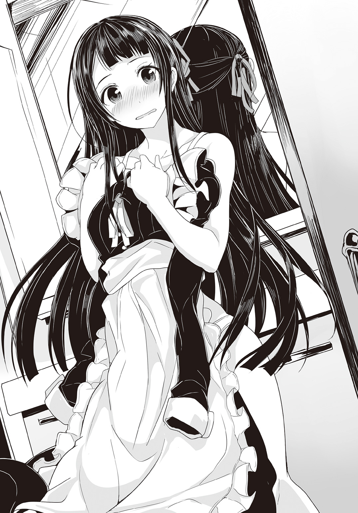
連志郞は平然と彼女の横を通り、部屋着を手に取った。さすがに二人が一緒に着替えるには脱衣所は少々手狭だ。制服は後でまた持ってくればいいだろう。そう判断して連志郞はそのまま脱衣所を出る。
少女の悲鳴が屋敷に響き渡ったのは、その直後である。
若槻紫織。
表向きは事故死した事になっている少女の叫びを背に......連志郞は、淡々とした足取りで自分の部屋へと向かった。
●
皿の上でナイフが小さく音を立てる。
切り分けたソテーを、紫織は口に入れた。焼き加減も味付けも絶妙で実に美味しい。美味しいのだが、腹立たしさが交じって、折角の夕食に集中出来ない。
紫織は憤然としたまま、食事を進めた。
「着替えを覗かれて激怒か。青春だねぇ、嬢ちゃん」
「そんな青春、いりません」
軽口を叩いてくるぬいぐるみに紫織はそう返した。
そう。喋ったのは食卓の上座に座っている熊のぬいぐるみだった。それだけでも異様な光景なのだが、その熊のぬいぐるみは、シルクハットを被り、愉快そうに身体を揺らして笑っている。さすがにその表情までは変わらないが、紫織には『中の人』の下品な笑い顔が透けて見えるかの様だった。
このぬいぐるみの名は斯波和晃という。
正確に言えばこのぬいぐるみを依り代として憑依している幽霊の名だ。この屋敷の主人で、紫織にとっては幾つもの面で世話になっている恩人でもある。感謝してもしきれないし、基本的に善い人（？）ではあるのだろうが、『職業・魔法使い』というだけあって、何かと常識外れの言動が目立つ。
そもそも死んだ後でも、こうして熊のぬいぐるみの中に魂だか精神だかを憑依させ、まるで生きているかの様に操る時点で、尋常ではない。勿論、詳しい理屈など紫織にわかろう筈もなく、ただ『そういうもの』として受け入れるしかなかった。
「しかし連志郞も運のいい奴だぜ、まったくよ」
ぶんぶんと短い腕を振りながら和晃は言った。
「俺もあやかりたいぜ。嬢ちゃんもこれでなかなか、ガードが堅いからなあ。なかなかその、ないすばでー、を拝む機会がねえんだわ」
「............」
紫織は愛くるしいぬいぐるみの顔を半眼で睨む。
外見はともかく、言動は完全に中年助平親父のそれである。魔法使いだというから仙人の様に世俗の垢を払い落とした超然たる存在かと思いきや......和晃の場合、こういう部分はむしろ俗垢塗れだった。
「......ご安心を」
と和晃の脇に立っていた給仕役のメイド――ペルヴィカが言った。
「和晃様の下品な犯罪的行動は私がお止めいたしますので」
「いいじゃねえかよ。ちょっとくらい、減るもんじゃなし」
「乙女心はすり減りますので」
無表情にペルヴィカはそう言った。
「ありがとう。出来たら斯波くんも止めてほしかったけど」
と苦笑して紫織はペルヴィカに礼を言う。
「そちらは事故ですので。申し訳ありません」
「今風に言うとあれだ、ええと、ラッキースケベってやつか？ つくづく羨ましい奴」
と和晃が言う。
だが当の連志郞はというと、我関せずといった様子で食事を続けている。紫織の不機嫌の原因は完全に彼だった。紫織の着替えている場面に遭遇して、多少なりとも慌てるなり焦るなりしてくれれば紫織としてもまだ溜飲が下がるのだが......本人はまるで眼中にないというか、路傍の石を見るかの様に平然としている。
「僕は三次元に興味はない」
「斯波くんがどう思ってようと、私が嫌なの！」
そんな事を言ってくる連志郞に、紫織は怒鳴る様に言った。
連志郎はいわゆるアニメオタクだ。しかも筋金入りである。三次元に興味がないというのはどうも本当らしく、紫織の半裸を前にしても表情一つ変わらなかった。今日だけでなく過去にも一度、紫織の裸を彼は見ているが――和晃とペルヴィカが、最初に紫織の精密検査をした時だ――その時も同じだった。
そういえば皆で泳ぎに行った時も、紫織の水着姿には全く興味がなさそうだった。眼を血走らせて息を荒くして迫ってきてほしいわけでは勿論ないのだが、殆ど無視されるというのもそれはそれで不愉快である。
（そんなに魅力ないわけ？ それに、私ばっかり勝手に意識してるみたいじゃない）
不満を視線に込めて睨んでみるが、連志郞は気づきもしない様だ。
紫織としては一人で腹を立てているのがだんだん、馬鹿らしくなってきた。
「さて、と。与太話ばっかしててもしょうがねぇな」
一口、食卓に置かれていたワインを飲んで――どうやって飲んでいるのかは謎だが――和晃が場をまとめる様にそう言った。
「本題だ。連志郎、学校はどうだ？ 嬢ちゃんの件、うまくごまかせてるか」
ペルヴィカが先に言っていた『和晃から話がある』というのはこの事だろう。
それは紫織の生活全体に関わる大問題だった。
「特に問題はない」
連志郎はいったん手を止めて、和晃のほうに目を向ける。
「若槻は交通事故で亡くなったことになっている。疑っているような人物は見当たらなかった」
「よしよし。とりあえず偽装工作は上手くいったみたいだな」
和晃は満足そうに頷いた。
世間的に、若槻紫織という少女は死亡したことになっている。彼女がトラックに轢かれ、爆発事故に巻き込まれた場面は多くの人が目撃している筈だ。和晃がそうなるように仕組んだのだから、当然である。
だが、現実に紫織は生きていて、こうして斯波家で暮らしている。
単純きわまりない詐術――事故に遭ったのは、紫織と瓜二つに造られた、身代わりの人形である。
ぬいぐるみに自分の人格を移し、自由自在に動き回る事からもわかる通り、和晃の魔法使いとしての得意分野は『人形遣い』だ。彼の事を知る者達からも綽名としてそう呼ばれているらしく、小は掌に載る様なプラスティック製の人形から、大は身長六メートルを超える鋼鉄製の巨像まで、彼にかかれば、まるで生きているかの様に動き出す。しかも等身大の人形などは実に精緻に作られていて、自律行動までする。そうと知らなければ、それが作り物である事など――本物の人間でない事など、わからないだろう。
実際、ペルヴィカはこうして目の前にいても、普通の人間にしか見えない。
だが彼女こそが和晃の魔法技術の証明だ。
そしてその技術を用いて、和晃は紫織の『影武者』とでも言うべき人形を作り出した。
元々は彼女が草薙機関の監視の目をすり抜けやすい様にと用意されたものだったが、今回はその人形を用いて紫織の事故死を演出したのである。
ちなみに紫織を轢いたとされているトラックの運転手も、実は和晃の用意した人形だ。彼はこの街のあちこちに数多くの人形を放っていて、それらは普段、普通の人間として普通の生活を送っている。だが実際には外を出歩く事の出来ない和晃の目となり耳となって各種情報を届けるための存在なのだった。
「わざわざ爆発炎上させた甲斐があったってもんだ」
「ちょっと私の身代わりの人形とか、運転手の人形には気の毒でしたけど......」
と紫織はペルヴィカの方を一瞥して言う。
だが和晃はそのフェルト製の首を平然と振ってみせた。
「ありゃ、俺やペルヴィカのオリジナルと違って、中身まで徹頭徹尾作り物だよ。生きてる様に見えるかもしれねえけどな。そこにまた魂が宿るかどうかとか、そういうのはまた別の話としても」
「え......？」
という事はペルヴィカは元々人間だったという事か。何やら同じ姿をした人形が何体もいるので、彼女こそ一から十まで完全に和晃の作ったものだと思っていたのだが、どうやら違うらしい。
「戸籍もねえから、多少怪しまれるかもしれねえが、ま、そこで追跡調査出来ねえようにするための爆発炎上だ。嬢ちゃんの方の死体も綺麗さっぱり消し炭で、こっちも多分、調べようがねえだろ。で――晴れて嬢ちゃんは草薙機関も手の届かない『死者』になったってわけさ。戸籍上でも嬢ちゃんの記載が抹消されたのは、確認してある」
まるでちょっとした料理の手順を語るかの様に軽い口調で和晃は話しているが、それらが極めて綿密で高度な偽装計画だった事は想像に難くない。紫織はその現場を見てはいないが、トラック一台と人形二人が原型も残さず焼け崩れる程の大事故だったのに、他には怪我人一人出ていないという。
「まあ、しばらくは不自由な生活を強いられるかもしれねえが、今、外見を偽装する術式を嬢ちゃんに合わせて構築してるとこでな、それができりゃ、屋敷からも出してやれるだろ。さすがに各種法律や公的制度の庇護は受けられねえがな」
「それは元からですから」
と紫織は苦笑する。
〈悪魔憑き〉患者の人権は様々な面から制限を受ける。『収容所』という監獄に閉じ込められ、いつか病状が進行して研究者達の手に負えなくなったその日に『処分』されるという意味で、死刑囚と何ら変わらない。
「ありがとうございます、オジサマ。何から何まで」
「なあに。こっちとしても嬢ちゃんを草薙に渡すわけにゃいかねぇしな。うちの屋敷や〈ブリガンド〉のことがバレても面倒だ。自分達のためにやってるとこもあるから気にすんな」
和晃は気楽そうにそう言って身を揺らす。どうやら本人は肩を竦めてみせたつもりの様だったが。
〈ブリガンド〉。世間では〈悪魔狩り〉の呼び名で通っている巨大な人型。
その正体は和晃が生み出した、対〈悪魔憑き〉用の巨大な甲冑で、草薙機関にも不可能な『〈悪魔〉の駆除』を可能にする唯一の存在だ。現状、宿主たる〈悪魔憑き〉を殺す事は出来ても、その身体に巣喰うとされる〈悪魔〉そのものを取り除く方法は存在しない――〈ブリガンド〉の必殺技〈コベット・ファング〉を除いては。
厳密に言えば、〈ブリガンド〉そのものがそれを可能にしているわけではない。それならば和晃は〈ブリガンド〉を量産している事だろう。実際にはその能力はあくまで連志郞のものだ。彼の中の〈悪魔〉は同族喰らいの悪食で、〈ブリガンド〉はそれを増幅して使うためのいわば道具に過ぎない。
だから〈ブリガンド〉の事は秘密になっている。
もし世間に、あるいは草薙機関に知られれば、間違いなく連志郞は捕まえられ、『収容所』に送り込まれて人体実験の対象になるだろう。そうなれば連志郞は『復讐』のために活動する事が出来なくなる。幼い頃に妹を〈悪魔憑き〉の事件で失った彼は、〈悪魔憑き〉の最終形態たる〈魔神態〉を駆除する事で、〈悪魔憑き〉に――というより〈悪魔〉に復讐し続けているのだ。
「ま、そういうわけで今は屋敷の中にこもりっきりになっちまうけどな。そこは勘弁してくれや。出歩けるようになったら葵の戸籍を使わせてもらうことにする」
「葵って......」
前にその名は聞いた覚えがある。
確か――
「僕の妹だ」
連志郞の言葉に、紫織は小さく息を呑んだ。
妹の死は前述の通り、連志郞の中に心の傷となって深々と刻みつけられている。ただただ『復讐』のために終わりなき戦いを続ける人生、それを彼が選択する原因となった痛ましい事件だった。
言ってみれば斯波葵という存在は連志郞の中の『聖域』だ。だからこそ紫織は彼女の戸籍を借りる事に躊躇を覚えるのだが――
「その............いいの？」
「問題ない。使えるものは使えばいい」
連志郞は無表情にそう言った。
「戸籍なんてただの書類だ。機会がなければ見ることもない。僕はそんなものにこだわるつもりはない」
連志郎の表情や言葉に揺らぎはない。本当になんとも思っていないのだろう。しかし、あまりにも淡白で紫織の方が戸惑いを覚えてしまう。彼はもう――いつの間にか、紫織の知らない間に、妹の件を克服したのだろうか。だが、それならば〈ブリガンド〉に乗って〈悪魔狩り〉を続ける意味がない。
「まあ、連志郎の言い方はアレだが」
そこに和晃が助け船を出してくれた。
「ただの書類ってのは本当なんだよ。それが逆に厄介なとこでもあってな」
「厄介、ですか？」
「人間の感覚は魔法でいくらでもごまかせる。見た目も音も匂いも、味も感触も、やりようはいくらでもある。けど、書類とかデータとか客観性の高いモンはやりにくいんだよ。手間もかかるし、下手に偽造して足がつくのも馬鹿みたいだろ」
魔法に関しては素人の紫織だが、なんとなく、和晃の言わんとしている事はわかった。
他人の目を誤魔化すのは一時的――ごく短い時間で済む。だが書類は記録としていつまでも残る。偽物と見破られないようにするためには、精巧な偽装を施さねばならないが、これがまた難しい。ベテランの銀行員などは、偽札を手触りで見分ける事すらあるというが、『ここまで似せておけば大丈夫』という一線が、ひどく判別しにくい。
万が一、見破られた時の危険性を考えると――更に面倒な事になる。
「だったら正規の手段を使って、堂々と変更しといたほうが安全なんだよ。少なくともやり方にツッコミを入れられることはないからな。そうだな。海外暮らしが長かったとか、そんな感じで誤魔化しとくか」
書類は客観性が高くとも、それを取り扱う人間は主観に縛られる。
戸籍の内容を変更する際に、携わる人間の認識を誤魔化してやるのは、和晃の力であればそう難しくはあるまい。彼は魔法使いだ。その気になれば不正など好き勝手にやり放題である筈だ。それをしないのはやはり、彼自身が、悪人ではない証拠なのだろう。
ただ――
「そういうわけだから」
ふと和晃の口調が変わる。
「これから嬢ちゃんは連志郞のことを『お兄ちゃん』って呼ぶ練習をしておくように」
「ちょっ......な、なんですか、それ!?」
思わず椅子から腰を浮かして叫ぶ紫織。
明らかに和晃は面白がっている。傍らのペルヴィカが申し訳なさそうに眼を伏せていた。
「しょうがねぇだろ。葵は実際に妹なんだし、そこは誤魔化せねぇよ。家族ってことで多少の無茶な設定も押し通すんだからな」
「戸籍上の話じゃないですか！」
「現実にも幾許かのリアリティは持たせとかないとなあ。『お兄ちゃん』が嫌なら『お兄様』でも『兄君』でも『兄上』でも『兄貴』でもいいけどよ。やっぱ王道は『お兄ちゃん』じゃね？ 呼んでみろって、さ、遠慮はいらねえ！」
「呼びません！」
両手を広げてそう勧める熊のぬいぐるみに向けて怒鳴る紫織。
一方――
「ごちそうさま」
我関せず、といった様子で連志郎が席を立つ。
「あ、ちょっと待って――」
紫織も慌ててそれにならう。和晃から逃れるようにして食堂を出た。
紫織にあてがわれている部屋は、連志郞の部屋のすぐ隣だ。なので自然と彼の背中を見つめながら、古色蒼然とした屋敷の廊下を歩いて行く事になる。
しかし......
（斯波くんがお兄さん......？）
しばらくは外に出るわけでもないのだし、他人に不審がられる可能性はない。和晃にからかわれただけなのは、わかっているが――
（葵――ちゃんはどう呼んでいたんだろう？）
ふとそんな事を紫織は考える。
紫織に姉はいたが、兄はいない。
だがもし連志郎のような兄がいたら......どうだっただろうか。どう呼んで、どう接していたのだろうか。
（......苦労しそう）
真っ先にそう思った。
無愛想で、融通が利かなくて、アニメオタクで。
しかし――
「............」
この屋敷にかくまわれる事になった日の事を、思い出す。
別れを告げ、立ち去ろうとした紫織の手を、連志郞が咄嗟に摑んで止めてくれたあの時の事を。振り返って見たあの時の彼は、何故か、泣き出しそうにも見えて......紫織も彼の手を振り払う事が出来なかった。
「本当......苦労しそう」
呟きながら紫織はそっと苦笑した。
●
屋敷のテラスからは、星空がよく見えた。
斯波邸は街外れの丘の上にあるため、街の灯りの影響を受けにくい。近くに他に建物もないので、満天の星の光が真っ直ぐに降り注いでいた。そして人も車も付近を滅多に通らないので無粋な雑音の類に耳を煩わされる事もない。
夜空の星の光を浴びていると、紫織は心が落ち着くのを感じた。
「ありがとう。斯波くん」
紫織は隣でやはり星空を見上げている連志郞にそう言った。
不思議とこの場では素直な気持ちになれる。部屋に戻る直前――連志郞をこのテラスに誘ったのは紫織である。紫織の『死亡事故』からこっち、こっそり紫織の住んでいたマンションから幾つかの品を運び出したり、生活必需品の一覧を用意したりと、引っ越しの様な――というより夜逃げめいた忙しさだったため、あまり連志郞とは落ち着いて話が出来ていなかったのだ。
「改まって何だ？」
と連志郞は首を傾げる。
「まあ、いろいろ。私を匿ってくれた事とか、それから......妹さんの戸籍の事とか」
「......ああ」
連志郞は曖昧に頷く。
「さっきも言ったが、戸籍なんて書類だ。法的な部分はともかく、僕や葵の事が何か左右されるわけじゃない」
「でも、無責任に触れていい事じゃないと思うし」
「気にしすぎだ」
あくまでも連志郞は無表情である。
「そう？ オジサマがお話しになったとき、私はちょっと驚いちゃった」
「あれは叔父さんなりに、ショック療法でもしているつもりなんだろう」
連志郞の口の端に、皮肉めいた笑みが過ぎった。
「僕が葵のことを乗り越えられているかどうか。叔父さんの中では僕は未だ妹を喪ったばかりの小さな子供で、喜怒哀楽の激しい、不安定な〈悪魔憑き〉のままなんだろう。だが実際には見ての通りだ。僕もいつまでも子供ではないし、葵の話題を出された程度でいちいち取り乱したりはしない」
連志郞の口調は淡々としていて、無表情の仮面を無理矢理被っているというわけでもなさそうだった。
彼の妹の事については、事情が事情なので、紫織の方からは極力、触れない様に注意してきた。実際、鉄面皮の連志郞が唯一、感情を露にしたのは――本音や弱音の様なものを吐いたのは、以前、葵の話をした時だけだ。
だが今こうしているのを見ると、連志郞は葵の事について随分と吹っ切れているのかもしれない。だが、それが良い事かどうかは紫織にはわからなかった。過去に囚われたまま、自分を罰するかの様に戦い続ける彼の姿を見るのは辛かったが――しかし、妹の一件に何らかの折り合いをつけた後も、彼が〈悪魔狩り〉として戦い続けるのを見るのは、何だか恐ろしい気もする。
彼が、まるで感情をなくした戦う機械になっているかの様で。
「それに、君を連れてきた責任は――僕にある」
連志郎は手すりにもたれ、頭上の遙かな暗穹に眼を向ける。
「本来なら、君の身柄は草薙機関に渡っていた。悪魔の再発は向こうに知られていたし、そうなるのが自然な流れだ。だけど、連中より叔父さんのほうが信用できるし、ここにいたほうが安全なのも間違いない。そう判断して君を連れてきた。見方によっては僕が君を攫ったとも言える。もし何か代償が必要なら、それを払うべきなのは僕だろう」
「......斯波くん......」
確かに紫織自身は、自ら草薙機関に出頭するつもりでいた。
それを止めたのは連志郞だ。
「行くな」
単純な一言が、既に覚悟を決めていた筈の紫織の心を揺さぶった。
今まで彼が紫織に何かを、あんなにも真摯な眼で求めた事はなかった。
（......思ったより、しっかり摑まれたな）
そんな事を考えながら紫織は左の手首にそっと触れる。
思いの外......強い力で摑まれた。そして彼の手は温かかった。
ただそれだけの事なのだが、思い起こすと頰が熱くなる。
（斯波くん............私のこと......どう思ってるのかな）
横目で連志郎を窺う。
彼は相変わらず空に眼を向けたままで紫織を見ていない。いや、今に限らない。これまでもそうだった。彼はひたすら紫織とは違う所を見ていて、紫織に関わるのは仕方なくといった印象が強かったくらいだ。
なのに彼は無理をしてまで紫織を匿ってくれた。
それは――何故か。
（最初に『収容所』で私を助けてくれた時は、多分、気紛れとか、つい妹さんの事が頭を過ぎったとか、そんな感じなんだろうけれど......）
だがあの時の連志郞と今の連志郞では、少し違う気がする。
紫織の自惚れであるならば恥ずかしいけれど、自分と関わる事で連志郞が少しずつ変わってきたのだとしたら、それは嬉しかった。以前の連志郞ならば大悟や優羽と関わりることは積極的に避けただろう。
連志郞は『復讐』に囚われていた。
ただただ復讐のために生き、復讐のために死ぬつもりだったのだろう。
だが、もし彼が別の何かを見つける事が出来るなら。その手伝いを紫織が出来るなら。それは何よりの恩返しになるのではないかとも思う。そのために彼の心の傷を癒やす方法があるのならば、紫織は積極的にそれを実行したいとも思う。
勢いで和晃にはああ言ったが......例えばそれが、妹の代わりを演じる事であってもだ。
今はもういない葵の代わりに、紫織が代弁者として連志郞を許してあげる事で、彼を復讐だけに邁進する人生から解放してやれないだろうか？
「斯波くん」
連志郞の目がこちらを向くのを待って紫織は続けた。
「葵さん――葵ちゃん、かな。どんな子だったの？」
故人の事に踏み込むのはためらわれるが――それが連志郞の心の傷に触れるものなら尚更に――それが必要ならば、一時的に連志郞を怒らせる事になっても構わないと紫織は思った。治療は時に痛みを伴うものだ。
「............そうだな」
連志郞は再び夜空に眼を戻して言った。
「素直で、明るくて、よく一緒に遊んだ。あとは、ヒーローもののアニメが好きだった」
今でこそ、連志郎はヒーローというものを毛嫌いする。それは空疎な理想を説いて子供を騙すだけの代物だと。だがそれもこれも、かつてその種の作品を妹共々夢中になって見ていた反動なのだろう。
〈悪魔憑き〉の〈魔神態〉が現れ、街を破壊し始めた時、幼かった連志郞と葵はヒーローの出現を願い、待った。当時二人が夢中になっていた特撮番組の主人公『天空騎士ブレイバー』が来て悪者をやっつけ、自分達を助けてくれると信じて疑わなかった。
だがヒーローは現れなかった。そして妹は連志郞の目の前で死んだ。
きっとヒーローが来てくれるから頑張れと、妹を励ましてきた彼に、『噓つき』と断罪する一言を残して。
それが連志郎の原風景だ。
彼の〈悪魔憑き〉への憎悪と、ヒーローへの嫌悪はそこから始まっている。
「長い黒髪が自慢で......少し君に似ていたかもしれない」
「......え？ そ、そうなの？」
思わず紫織は問い返していた。
前に和晃から葵の写真を見せてもらった事がある。だから彼女の顔は紫織も知っている。外見上はあまり似ているとは思えなかったのだが。
かといって性格が似ているのかと言えばそうでもないだろう。紫織はあまり前向きな方ではないし、素直とも明るいとも言い難い。表向き、闊達に振る舞う事は多いが、それが、取り繕われたものだという事を、連志郞は知っている筈だ。
「少し......そんな気がしただけだ」
そう言って連志郞は短く溜め息をつく。
紫織はそれ以上、葵の事を尋ねていいのかどうか迷った。似ているのなら自分は葵の代わりとして彼を許す事が出来るのではないか。そんな風に思うからこそ、細かく問い質して、やはり気の迷いだった、全く似ていない、と連志郞に言われるのが怖かった。
「............」
「............」
夜空を見上げる二人の間に沈黙が落ちる。
やがて――
「失礼致します」
いつの間にそこに来ていたのか。
テラスへ出るための大きなガラス戸の所にペルヴィカが立っていた。
「......っ!?」
思わず声にならない短い叫びが紫織の唇から漏れる。
自分達以外誰もいないと思っていたのに。下手をすれば今の会話も大半が聞かれていたかもしれない。和晃に立ち聞きされるよりはマシだろうが、たとえペルヴィカにであっても、恥ずかしいものは恥ずかしかった。改めて思い返せば、別に大した話はしていなかった筈なのだが、それでもだ。
「どうした。ペルヴィカ」
対して連志郞はむしろ普段通りである。
「ご歓談のところ、恐れ入ります。市内に〈魔神態〉が出現しました」
「............」
連志郎の目つきが変わる。
怜悧な表情は変わらず、しかしその双眸だけは憎悪と憤怒に滾っていた。
彼はやはり未だ『復讐者』のままだ。彼自身が最初に紫織に対してそう語った様に。
「わかった。すぐに行く」
ペルヴィカが一礼し、屋敷の中に戻る。〈ブリガンド〉の発進の準備にかかるのだろう。〈悪魔憑き〉の最終形態たる〈魔神態〉には連志郞の乗った〈ブリガンド〉でなければ対抗出来ない。
「斯波くん――」
「〈悪魔憑き〉は狩る。それが僕の目的だ」
引き留めようとしたわけではない。だがこちらの内心を見透かすかの様に連志郞はきっぱりとそう言った。だから紫織としてはそれ以上は何も言えない。
僅かな逡巡の後、紫織は何とか無難な一言を口に出来ただけだった。
「気をつけてね」
「............」
連志郞が――驚いた様に眼を瞬かせる。
そう変わった事を言ったつもりもなかったのだが、連志郞には違って聞こえたのか。
だが彼は何か言葉を返してくるでもなく、紫織の横を通り過ぎて行く。遠ざかる彼の背中を見送りながら、紫織は自分の無力さに小さく溜め息をついた。
●
街灯と、そして危機感を煽る赤い回転灯に照らされて異形の巨体がそびえ立っていた。
二階建ての家屋に匹敵する身の丈と、警察車両を一撃で叩き潰す怪力――〈悪魔憑き〉の〈具現体〉と呼ばれる最終形態は、生身の人間には到底太刀打ち出来ない。まさしくそれは怪物と言うに相応しい存在だった。
だが人間とて、その脅威を前にしてただ恐れひれ伏すだけではない。
素手で敵わぬのならば武器を持つ。一人で足りねば徒党を組む。弱点を探すために情報を集める。過去の経験を活かして戦術を練る。そうやって人間は石器時代の太古から己を上回る力を持つ獣すら狩ってきた。生存競争を勝ち抜き『万物の霊長』を名乗るのは、決して伊達ではない。
相手が人間の上位種とも言うべき〈悪魔憑き〉でも、例外ではない。
「食らいやがれ！ 正義の電撃警棒！」
気合いのこもった声が夜の街に響く。
次の瞬間、二メートルを超える長大な打撃武器――電撃警棒が異形を打ちのめし、接触の瞬間に激しい火花を散らす。名前の通り高圧電流を相手に流し込むその武器は、〈悪魔憑き〉の〈具現体〉に対しても有効だった。
青白い電光が〈具現体〉の身体を這い回る。銃弾などものともしない筈の怪物が、瞬間的に流し込まれた大電流で硬直していた。
その隙を逃さず、流れる様な動きで鋼鉄の巨体が〈具現体〉に組みついた。複合装甲に衝撃吸収と絶縁を兼ねた合成ゴムの層を仕込んであるため、自らの武器で感電してしまう事もない。
草薙機関所属・対〈具現体〉用制圧兵器〈アドバンスド・メイル〉試作壱号機――機体名〈ブレイバー〉である。
元々後に続く量産機のための実戦データ集めを担う機体であり、その細部は勿論、内部の制御ソフトウェアも日々進化している。かつては多少、ぎくしゃくした部分もあったその動作は、今や、人間そっくりで非常に滑らかだ。
組み敷いた〈具現体〉の胴体部分に、改めて電撃警棒を突き立てる〈ブレイバー〉。
今度こそ〈具現体〉は激しい痙攣の後、動きを止め――次の瞬間、その異形の巨体はゆっくりと崩壊して砂状の何かになり、それすらもが蒸発する様に消えていく。
後には、白目を剝いて痙攣する一人の男がいるだけとなった。
〈具現体〉の核となっていた〈悪魔憑き〉患者である。
もう戦闘能力など残っていないのは、一見して明らかだった。
「よっしゃ。一丁上がり！」
男を踏み潰さぬ様、身を起こして一歩下がると、〈ブレイバー〉は小さくガッツポーズをしてみせた。
〈ブレイバー〉と入れ替わる様にして作業服姿の男達が建物の陰から飛び出し、〈悪魔憑き〉の男に手枷足枷をかけた上で、手早く黒い袋に押し込む。単なる死体袋の様にも見えるが、制圧した〈悪魔憑き〉を拘束するためのもので、超高分子量ポリエチレン繊維――防弾服にも使用される強靭な代物だ。内側には数カ所の放電端子が設けられていて、〈悪魔憑き〉が常態に復帰してもすぐに電撃で制圧出来る様になっている。
「いやぁ、順調だったな。最短記録じゃね？」
と言うのは〈ブレイバー〉の操縦者――風間大悟である。
『たまたま私たちの近くに出現しただけだけどね。でも被害が出なくてよかったわ』
と応じるのは支援観測用の車両に乗る今村優羽だった。
実のところ、大悟達が迅速に対処出来たのは偶然によるところが大きい。〈具現体〉の出現時、たまたま大悟達、草薙機関の特別対応班が現場近くを通りかかったのだ。班長である本崎徹雄は即座に制圧を決定、〈ブレイバー〉は緊急起動して〈具現体〉に挑み、これを撃破した。
『稼働時間が短ければ部品の消耗も抑えられるし、システムにも大悟の神経にも負荷がかかりにくい。良い事ずくめよね。さ――撤収しましょう』
「そうだな」
笑顔で応じる大悟。
だが――
「......あ、いや。待った」
『あ......こっちでも確認したわ』
低い声でそう言う大悟に、優羽もまた緊張をはらんだ声で応じる。
〈ブレイバー〉の前に、近くの建物を飛び越え、轟音と共に新たな巨体が着地したのは次の瞬間だった。
夜の闇に溶け込むかの様な漆黒の異形。流線と鋭角で構成されたその輪郭は西洋甲冑を思わせる。蒼と白の組み合わせを基調とし、戦車や重機をそのまま人型にしたかの様な直線の多い〈ブレイバー〉とはいろいろな意味で対照的だった。
異形という意味では先の〈具現体〉と同様だが、既に大悟にとっては馴染みの相手だ。
〈悪魔狩り〉――そう呼ばれる正体不明の機体。
いや、草薙機関の一部が推測する様に、それは〈ブレイバー〉の様な人型兵器ではなく、鎧を纏っただけの〈具現体〉なのかもしれないが。
「参ったな。こいつ、やらなきゃダメか？」
大悟は口元を歪めて言った。
『来ちゃったものはしょうがないわよ。上層部からも〈悪魔狩り〉の制圧、確保は通達されてるし』
「だよなあ......」
〈悪魔狩り〉が〈悪魔憑き〉の中の『悪魔』を強制的に祓う能力を持っているのは確認されている。それは現在のところ、唯一の『治療法』だった。結果として〈悪魔憑き〉はごっそりと記憶を失い、大抵は人格まで破壊されて廃人同様になるが――それでも他に病気としての〈悪魔憑き〉が完治した例はない以上、草薙機関が躍起になって〈悪魔狩り〉を確保したがるのは当然の事だった。
だが――正直、大悟は気が進まない。
「こいつ、悪いヤツには思えないんだよな......」
草薙機関の上層部は〈悪魔狩り〉を危険視している。
貴重で研究に値する『悪魔祓い』の能力だが、現状、その様な超能力は〈悪魔憑き〉にしか発生しないと考えられている。つまり〈具現体〉を狩っているというだけで、〈悪魔狩り〉もまた〈悪魔憑き〉の一種ではないのかと考えられているのだ。
しかし......大悟は〈悪魔狩り〉と何度か共闘した経験がある。
いや。それどころか大悟の頼みを聞き入れて人命救助に手を貸してくれた事もある。だから味方だ、と能天気に断じるのは危険だが、少なくとも話が通じる相手である事は間違いない。問答無用で取り押さえるのではなく、何とか協力を求める事は出来ないだろうかと思ってしまうのだ。
『大悟。だからってただ突っ立ってるわけにはいかないわよ』
「わかってるよ」
大悟は顔をしかめてそう応じると、外部スピーカーのスイッチを入れた。
「あー、そこの〈黒騎士〉。悪いが、ちょっと顔貸してもらうぞ」
そう告げると大悟は〈ブレイバー〉を前進させた。
電撃警棒は背中のハードポイントに固定する。武器を構えて近づけば相手を挑発している様なものだ。とりあえず大悟はまず『素手』で組み伏せてみる事にした。何度も重ねた実戦経験のお陰で、〈ブレイバー〉の動きは格段に良くなっている。その気になれば〈具現体〉や〈悪魔狩り〉に柔道の投げ技をかける事も出来るだろう。さすがに絞め技は関節の可動範囲の問題で難しいだろうが。
「大人しくしてくれよっ――と」
大悟は呟きながら〈悪魔狩り〉の腕を取りに行く。
だがさすがにこちらの意図に気づいたか、〈悪魔狩り〉はすっと腕を、そして身を引いた。空振りを気にせず更に大悟が前進するとまた〈悪魔狩り〉が引く。そんな事を二度三度と繰り返した。
「......こいつ」
大悟は眼を細めて呟く。
〈悪魔狩り〉は自身を摑みに来る〈ブレイバー〉の手を振り払いはするが、それ以上の動きを示さない。その気になれば〈ブレイバー〉に反撃を――殴るなり蹴るなり、格闘戦を挑む事も出来る筈だが、そういう動きを一切見せない。
〈ブレイバー〉にどう対処したものかと、迷っている様にも見えた。
「もしかして気を遣ってくれてんのか、俺に？」
既に〈ブレイバー〉が〈具現体〉との一戦を経ているのを〈悪魔狩り〉は知っているのだろう。そしてその結果、〈ブレイバー〉の超伝導蓄電池の蓄電残量が大きく減っているだろう事も。むしろ〈ブレイバー〉を斃したいなら今が好機だ。なのに〈悪魔狩り〉は攻撃してくる様子が全くない。
やはり〈悪魔狩り〉は敵ではない。
「だったら......」
大悟は〈ブレイバー〉の駆動系の制御システムを――止めた。
●
「あいつがいるじゃないか」
渋い表情を浮かべて連志郞は呟いた。
転送用の魔法陣を抜け、最初から〈ブリガンド〉に乗った状態で現場に急行した彼が見たのは、既に制圧された〈悪魔憑き〉と、最早、見慣れたとも言うべき草薙機関の人型兵器だった。
ヒーロー気取りの面倒臭い相手である。
連志郞からすれば、暑苦しくて迷惑なだけの相手だ。〈悪魔憑き〉でもない相手と戦っても連志郞には何の益もない。なのにこちらを捕まえようと手を出してくるし、それとは別に、説教めいた事まで言ってきたりする。
しかも先日、一学期の終業式のあの日......連志郞はその中身が誰なのかを知った。
〈ブレイバー〉に乗り込んでいるのは風間大悟だ。
学校で毎日の様に顔を合わせる同級生である。それだけでなく何かと大悟は連志郞に絡んでくる。今日も紫織の事で連志郞を慰めようとして、失言しまくっていた。
本当に、暑苦しくて、青臭くて、面倒臭い。
とにかく連志郞は大悟が苦手だった。
「どういう事だ、ペルヴィカ」
連志郞は通信機でペルヴィカを呼び出す。
「僕等が出遅れるなんて――」
『申し訳ございません。どうやら草薙機関の部隊が偶然、現場近くに居合わせた様です』
そのために連志郞達よりも早く〈悪魔憑き〉を制圧する事が出来たらしい。被害らしい被害も辺りを見回す限りは確認出来ない。〈悪魔憑き〉が弱かったのか、それとも〈ブレイバー〉が強くなっているのか、細かい事は判断がつかなかった。
連志郞としては無駄足を踏んだ様なものだ。
だが問題はその事ではなく――〈ブレイバー〉と鉢合わせしてしまった事だ。
草薙機関に所属する大悟の立場からすれば、〈ブリガンド〉をそのまま見逃すわけにはいかないだろう。実際、〈ブレイバー〉はその手を伸ばして〈ブリガンド〉の捕獲を試みてきた。
とりあえずかわして、退いて、払い除けるが、〈ブレイバー〉は更に前に出てこちらを摑みに来る。飛行形態に変形して逃げるのが得策だろうが、変形する際には装甲を組み替えるため、一瞬ながら無防備状態になってしまう。今の〈ブレイバー〉がその隙を見逃してくれるとも思えなかった。
かといって走って逃げるというわけにもいくまい。背中を向けた途端に〈ブレイバー〉はこちらを取り押さえるべく飛びかかってくるだろうし、そもそも単純な陸上の移動速度でいえば〈ブレイバー〉の方が上なのだ。
さて、どうしたものか。
連志郎が頭をひねっていると――
『うわあ、なんだ？ 急に動かなくなったぞ？』
〈ブレイバー〉の外部スピーカーからそんな声が聞こえてきた。
続けて〈ブレイバー〉はまるで脱力するかの様に両手を下ろしてその場に棒立ちになった。そのまま倒れてしまわないのは、非常用に機械式の平衡維持機構でも取り付けられているのだろう。〈ブレイバー〉の巨体なら、ただ倒れるだけでも周囲に甚大な被害を及ぼしかねない。
しかし――
『連志郎様。草薙機関の機体は駆動系を停止させたようです』
「......わかってる」
ペルヴィカからの報告に、眉を顰めて連志郞はそう応じた。
大悟の声は呆れる程の棒読みだった。あの脱力っぷりを見る限り、駆動系の制御システムを自ら落としたのだろう。電池切れにしては、その停止っぷりはあまりに唐突だ。
勿論、機体が動かなければ、大悟が〈ブリガンド〉を取り押さえることはできない。
だが――
「馬鹿なのか？ ......いや。馬鹿だったな、そういえば」
連志郞は呆れた様に呟く。
もし連志郎が『敵』だったら......これ程に危険な事はない。動けない〈ブレイバー〉など鉄の棺桶だ。武装解除どころか、自ら墓穴を掘っているに等しい。
「まさか......これで〈ブルー・オーシャンズ・ガーデン〉での借りを返しているつもりなのか？」
以前〈ブルー・オーシャンズ・ガーデン〉で〈悪魔憑き〉と戦った際......連志郎は〈ブレイバー〉の土下座を受けて慣れない人命救助を行った。その際、確かに連志郞は『貸しにしておく』と言ったが、わざわざ取り立てるつもりもなかった。
だが大悟としては、これを機に借りを返すつもりになっているのではないだろうか。
「......まあいい」
どうせもうこの場に用はない。
大悟の下手な芝居に乗ってやるのも悪くはなかろう。
「ペルヴィカ、帰還する」
そう通信機に告げると、〈ブリガンド〉を後退させ、飛行形態に移行。
次の瞬間、轟音と共に〈ブリガンド〉は空中に舞い上がっていた。
「............」
〈ブリガンド〉を動かして――戦わずに帰還するのは、初めての経験だった。徒労と言ってもいい。
だが不思議と悪い気はしなかった。
●
「......行ったか」
〈ブレイバー〉の胸部装甲を開いて降りた大悟は、〈ブリガンド〉の消えた夜空を見上げてそう呟いた。
「行ったか――――じゃねぇ！」
次の瞬間、野太い声と共に後頭部を拳骨が襲う。
鈍い音と共に大悟は前のめりによろけ、〈ブレイバー〉の機体に思いっきり鼻をぶつける事になった。
間の抜けたその姿に即応班の面々――整備員達から苦笑が漏れる。折角、格好良く決めて良い気分に浸っていたというのに、台無しだった。
「なにすんだよ、おやっさん」
涙目で恨みがましく背後を振り返る大悟。
「こっちのセリフだ。ヘタクソな芝居しやがって」
そこには特別対応班の「鬼の班長」こと本崎徹雄が仁王立ちしていた。
背丈こそ大悟より低いが、いかつい顔立ちと筋肉に包まれた太い腕は迫力満点である。
「〈悪魔狩り〉を見逃すたあ、どういう了見だ。大悟」
「見逃す？ いやあ、何のことやら？」
と大悟は棒読み口調でそう言った。
「急に〈ブレイバー〉が動かなくなっただけっすよ？」
「ほう？」
眼を細めて徹雄は大悟に詰め寄る。
「お前は俺達がそんなぬるい整備をしたって言いてぇんだな？ 稼働中にいきなり止まるようなヘマをやらかしたと言いてぇんだな？ ああ？」
「い......いやいやいや、そういうわけじゃなくて！」
鬼瓦の様な顔で間近に睨まれた大悟は慌ててそう言い繕った。
「なんとなく調子悪いな、みたいな時ってあるでしょ！ そんな感じでうまくいかなかったっていうか、運が悪かったっていうか――」
「言い訳、みっともないわよ。大悟」
優羽が徹雄の背後で腕を組んで言った。
「あ、優羽！ 見てないで助けろよ！」
「自業自得。大体、何のための実験機、何のための支援観測車両だと思ってんのよ。大悟が制御システムを強制ダウンさせたの、ちゃんと記録に残ってるからね」
「げっ......」
表情を引き攣らせる大悟。
「班長、この際だからもっと言ってやってください」
「優羽に頼まれちゃあ、しょうがねぇなあ」
徹雄がにやりと笑って腕まくりをする。大悟は慌てて後ずさるも、彼の背後には〈ブレイバー〉の巨体が立ち塞がっていた。
実のところ......大悟は、優羽や徹雄には以前から『〈悪魔狩り〉が敵だとは思えない』と話していた。少なくとも見境なく暴れる〈悪魔憑き〉の〈具現体〉とは違うと。そしてその話に二人は一定の理解を示してくれていた。
だが、それはそれとして、大悟が草薙機関上層部の決定に背いたのは事実だ。組織は良くも悪くも上意下達で動いている。現場の人間が独断で上層部の命令を無視すれば、それは責められるべきなのである。そして徹雄には命令違反をした部下を厳しく『指導』をする責任がある。
もう何発か拳骨は覚悟せねばなるまい。
そう考えて歯を食いしばる大悟――その頰を、生温い風が、撫でた。
「――え？」
ぼぐん、とくぐもった鈍い音が響いたのは次の瞬間である。
大悟の視界の隅で赤いものが飛び散った。
「優羽......!?」
「あ......」
まるで冗談の様に、何の脈絡もなく唐突に、彼女のこめかみが破れていた。赤いものはそこから飛び散った鮮血だ。華奢な身体が傾き、傍に停車していたトレーラーの荷台にもたれかかる。そのままずるずると地面に崩れて、優羽は動かなくなった。
「ゆ――」
「うわっ！ わああっ！」
続けて荷台の上にいた整備員がいきなり転落した。
足を滑らせたのではない。左足だけが伸びた不自然なその姿勢は、明らかに足を摑んで引きずり落とされたとわかる。しかも次の瞬間、倒れた整備員の腕が不自然な角度にひしゃげ、血が飛び散った。
「ぎゃあああっ!?」
折られたのだ。それも恐らくは――何か釘抜きの様な鈍器の類を叩きつけられて。優羽も同様だろう。尖っている部分を使えば、単に骨を折り砕くだけでなく、皮膚を突き破る事も出来る。下手な刃物よりも余程に殺傷力の高い凶器だった。
だがその犯人は何処にいる？
「襲撃だ！ 気をつけろ！」
徹雄が怒鳴り、大悟と背中を合わせる。
見えない何かが自分達の傍にいるのだ。そいつはしかもこちらに敵意を持っていて、容赦なく襲いかかってくる。優羽や整備員は心配だが、その前にこの姿なき敵を何とかしなければ、大悟達も一方的にやられるだけだ。
「敵は何らかの透明化技術を持ってる！」
徹雄がそう叫び、整備員達は手近にあった工具を手に身構える。
だが彼等は現場の人間ではあっても、本格的な戦闘訓練を受けた兵士ではない。敵を探して視線を左右に走らせている間に、更に二人が殴り倒されてしまった。どちらも胸や肩から出血し、地面の上で悶絶している。
「〈悪魔憑き〉......！」
大悟は唸った。
敵は〈悪魔憑き〉だ。間違いない。おそらく透明化する能力を持っている。
透明化――即ち光学的迷彩は、その原理を考える限りそう特殊な技術ではないが、実用化には多くの問題を抱えている。少なくとも空中に完全に溶け込み『全く見えない』様な透明化となると、機械装置によるものよりも、〈悪魔憑き〉の超能力を疑うべきだろう。
恐らく〈具現体〉を出すのではなく、人間のサイズのまま、能力を絞って使いながら襲撃してきたのだろう。〈具現体〉は強力だが、大きい分だけ、存在感がある。透明化していても空気の動きや歩行時の震動で接近を察知されてしまう可能性はあった。
つまり敵は、きちんと作戦を練って大悟達を暗殺しに来たのだ。
「うぐっ！」
大悟の背後で徹雄がやられた。
頰を殴られたのか、鼻と口から出血している。反撃して振り抜いた拳は空振りし、逆にもう一発入れられた。徹雄は呻き、その場に膝をつく。
「おやっさん！ ......野郎ッ！」
大悟が腕を振り回す。
だが空を切るばかりで手応えがない。大悟は数種類の格闘技を身につけているが、基本的にそれらは見えている敵に対して使うものだ。相手が何処にいるのかもわからなければ、身構える事すら出来ない。
そうこうする間にも整備員達が次々とやられていく。
まるで弄ばれているかの様で腹立たしい――いや、間違いなく敵は大悟達をいたぶり、弄んで楽しんでいるのだ。さもなくば最初から銃なり刃物なり、もっと簡単で確実に相手を殺傷できる武器を用いるだろう。
そして――
「......あれは、囮か......！」
大悟達の近くに〈具現体〉が現れたのは偶然ではなかったのだ。
あちらはあくまで囮、本命はこちらだったのだ。特別対応班を所定の場所におびき出し、〈具現体〉を一体倒して気が緩んだところを襲撃する――そういう手筈だったのだ。
「ぐおっ......!?」
義肢に衝撃が走る。
散々周りの整備員達を痛めつけた後、ようやく相手は大悟を標的に定めた様だ。
何処からともなく、光も影もないまま、衝撃だけが飛んでくる。このままでは一方的に殴られるだけのサンドバッグ状態だ。
しかし――
「なめんじゃねぇぞ！」
吠える様に言って、大悟は両腕を頭の脇に掲げた。
攻撃の呼吸にある種のパターンが......ひどく単調なそれが透けて見える。何処から来るかはやはりわからないままだが、敵は、格闘技の類は明らかに素人だった。
頭部を庇ったためにがら空きになった胴体に衝撃が来る。
ここまでは大悟の狙い通りだ。
鍛えた腹筋で腹部への一撃に耐え、攻撃を逆に辿る様にして相手の手なり得物なりを摑む。そうすればこちらに引き込んで押さえ込む事も可能だろう。
そう判断していた――のだが。
「......っ!?」
激痛が大悟の腹に食い込んだ。
続けて腹の周りに生温かい感触が広がっていく。シャツが濡れて身体に貼り付いてくる感触もあった。流血だ。見れば彼の腹に、一本の果物ナイフが深々と突き刺さっていた。
「しまった......」
散々、鈍器での攻撃を見せつけておいてから、思い込みの裏を突く形で刃物を使う――格闘技に関しては素人かもしれないが、相手を騙し、陥れる事については、むしろ精通している様な印象があった。
「こいつ......！」
大悟はナイフをそのままに、虚空に向かって手を伸ばす。
今までのパターンから、相手が次に攻撃してくる瞬間は見当がついていた。後は方向だけだ。それも相手を嬲る様なやり口から、次は背中側から来るだろうと踏んでいた。
当たりだ。指先に何かが触れた。
そのまま大悟は強引に指を曲げ、相手を引っかけ、更に両手で摑んで自分の側に引き込む。相手の身体の感触が腕の中に転がり込んできたのを確認し、大悟はそのまま全身で押さえ込みにかかった。
見えない何かが腕の中で暴れるのがわかる。
意外なのは、相手が小さいらしい事だった。少なくとも標準的な成人男性の体格ではない。女か、さもなくば――
「ぐっ――」
思わず呻きが漏れる。
相手が改めて大悟の腹に刺さったままだったナイフの柄を摑み、こじったのだ。筋肉で無理矢理抑え込んでいた傷口が広がり、再び流血が始まる。あるいは内臓も傷つけられたかもしれないが、細かい事まではわからない。腕や足はともかく、大悟の頭部と、胴体部分の大半は生身だ。このままでは失血死する。
早くこいつを何とかしなければ。
そう思った時――
「風間くん！」
大悟達に向かって走ってくる人影があった。
見覚えのあるその女性は――東城美沙紀である。所属部署は違うが大悟達と同じ草薙機関の人間だ。特別対応班の緊急出動の連絡を受けて、様子を見に来てくれたのだろう。
確か――彼女は拳銃を携帯していた筈だ。
「東城さん！ ここです！」
大悟は美沙紀に向けてそう叫んだ。
「敵は透明化して、俺が捕まえてます！」
ただそれだけの言葉で彼女はすぐに状況を理解してくれた様だった。
素早く持っていたバッグから拳銃を引き抜くと、大悟の傍に駆け寄って横から拳銃を構える。正面から撃ったのでは大悟に命中する可能性もあったからだろう。
美沙紀は左手を伸ばして大悟の腕と腕の隙間を――そこにいる透明化した敵を掌で確認、その上で右手の銃を発砲した。
轟音と共に血が飛び散る。
「ぎゃっ......！」
短い悲鳴を漏らして〈悪魔憑き〉が暴れる。
未だ死んでいないのだ。美沙紀が唇を嚙み締めながら、続けて発砲した。
二発。三発。四発。そこで大悟の腕の中の〈悪魔憑き〉は動きを止めた。腕にかかる重みが増したのは、脱力して倒れ込んできたからか。腕に〈悪魔憑き〉が痙攣するのが伝わってきた。
そして――
「............」
〈悪魔憑き〉を締め上げたまま、大悟も力尽きた様にその場に座り込む。
緩やかに透明化は解除されてゆき......虚空から滲み出る様にして、襲撃者の姿が露になった。
「これ......」
美沙紀が青ざめた顔で呻く。
姿を現した〈悪魔憑き〉は――子供だった。まだ小学生くらいだろう。だがその右手にしっかりと釘抜きを握っている事からも、この子供が襲撃者だったのは間違いない。他にもベルトにはドライバーや包丁といった『凶器』が何本か挟んであるのが見えた。
いかに〈悪魔憑き〉とはいえ、そして大悟達を襲った敵だとはいえ、子供を射殺したという事で美沙紀は衝撃を受けた様だった。自らの身体を抱く様にして震えている。
仕方なかった、そう声をかけたいところだが、もう、そんな余裕は大悟にはない。
それに――
「優羽......優羽......！」
大悟は倒れたままの優羽の所へと這っていく。
抱き起こすと、まだ息はあった。だが頭を鈍器で殴られたのだ。すぐにでも精密検査と処置が必要だろう。脳内出血しているなら、一分一秒を争う。
「東城さん、東城さん、救急車、早く救急車を！」
優羽を抱き締めながら大悟は叫ぶ。
我に返った美沙紀が、バッグから携帯電話を取り出すのを見ながら――大悟の意識は、急速に広がっていく闇に、呑まれた。
第二章
教室に足を踏み入れた連志郞は、微かな違和感を覚えた。
始業前――同級生達が、教室のそこかしこにそれぞれの集団を作ってお喋りに興じている。何の変哲もない、飽きる程に馴染んだ朝の風景である。
だが何か足りない気がするのは何故なのか。
「やあ、おはよう――斯波くん」
綾が笑顔を取り繕って、そう声をかけてくる。
彼女は未だ『若槻紫織の死』を引きずっている様で、表情にも口調にも何処かぎこちなさが見えるが、これは昨日と変わらない。違和感の原因とは言えないだろう。
ただ――いつもならその後に続くべき声が、聞こえない。
あのヒーローオタクの無闇に大きな挨拶の声が。
いつも始業前ぎりぎりに来る連志郞とは全く逆、大悟は大抵、始業の一時間近く前に来るという。一番乗りという事も多く、彼は自分の後でちらほらとやってくる同級生達に一人ずつ挨拶をしているらしい――と前に、同じく朝が早い綾から聞いた事がある。
少なくとも転校してきて以来、大悟が連志郞よりも遅くに教室入りした事は一度もない。
「............」
眼を細めて彼の席を見遣ると、そこは空っぽだった。
すぐ近くの優羽の席にも鞄がない。あの二人はいつも一緒に行動しているので、恐らくは二人して遅刻か、さもなくば――
「休み？」
「病欠だそうだ」
連志郎の視線に気づいたのか、綾がそう声をかけてきた。
「病欠......」
連志郎は軽く眉を顰めた。
健康優良児を地で行くような大悟が病欠とは珍しい。
だが彼は前にも病欠をした事がある。その時も優羽が一緒に休んでいた。
詳しい事はわからないが、彼等の正体を知った今では、あれが草薙機関の任務に関わる事であると想像がつく。〈ブレイバー〉は以前、〈悪魔憑き〉の〈魔神態〉に手酷く痛めつけられた事があるが、その際に中の大悟も負傷したのかもしれない。恐らく優羽はその付き添いだ。
病欠というのは一種の偽装だろう。
しかし――
（昨日は特に何もなかった様だが......）
連志郎は昨夜、大悟に会っている。それぞれ〈ブリガンド〉と〈ブレイバー〉に乗って対峙するという形だが......大悟は早々に〈魔神態〉を倒して〈悪魔憑き〉を捕縛、むしろ絶好調といった印象だった。
その後に何かあったのか。
それとも草薙機関絡みで急な任務でも入ったのか。
「明日には来るのか？」
「いや、少し長くなると聞いている」
そう言ってから、ふと綾が首を傾げた。
「珍しいね」
「......珍しい？」
「斯波くんが同級生の欠席を気にするなんて」
「............」
連志郞は言葉に詰まった。
言われてみれば確かにそうだ。しかも相手は連志郞の天敵とも言うべき、あの大悟である。いなくなってせいせいする、というのならばともかく、彼が来ない事を気にするいわれはない。何も。
「学校が静かになるのは今日だけか、しばらく平穏が続くのか。知りたかっただけだ」
適当な言い訳を取り繕って誤魔化す。
元々二人は〈悪魔憑き〉事件の頻発するこの街に、〈ブレイバー〉の運用試験をするために来ただけである筈だ。彼等にとって学校に通って一般的な生徒を装うのは、あくまで偽装の一環であり、草薙機関の任務に優先するものではない。
だから彼等はある日突然、ふらりといなくなるという事もあり得る。
大悟の性格からして、挨拶もなしに、というのは考えにくいが......
「............」
とりあえず不自然な点はない。ない筈だ。
だがどうにも連志郞は、頭の片隅に引っかかるものを感じた。
勘に頼って行動するのはあまり好きではないが、何か嫌な予感がするのだ。
（むしろ調子が良すぎた......か？）
実用試験機である〈ブレイバー〉が改造や改良を繰り返し、出撃の度に強くなっていくのは当然で、昨日の快勝もあまり不自然とは感じていなかったのだが......もしそれが予め〈悪魔憑き〉側で意図されたものだったとしたら？
そもそも〈悪魔憑き〉達は以前と異なり、組織的に動く事が増えている。
なのに昨日の〈魔神態〉はろくに抵抗も出来ないまま、〈ブレイバー〉に倒されてしまったらしい。もし組織立った行動により〈悪魔憑き〉達が大まかに〈ブレイバー〉の性能を知っているのだとしたら......その傍に、何の策もないまま、特に強力なわけでもない〈魔神態〉を出してみせる事は、むしろ自殺行為に等しい。
つまり――
「............」
連志郎はスマートフォンを取り出し、ペルヴィカに宛ててメールを打った。
昨夜の〈魔神態〉の処理の後、草薙機関に何か動きはなかったか――調べてくれと簡潔に書いて送信。街全体に散らばっている和晃の人形達の目と耳が何か関連する情報を拾ってくれている可能性はあった。
勿論、昨日の〈悪魔憑き〉は単に、考えなしの、一匹狼だった可能性もある。
だが――連志郞の中の悪い予感はなかなか消えてはくれなかった。
●
荒々しい音を立てて、グラスとグラスがぶつかり合う。
中身の酒が飛沫となって飛び散るが、気にする者はいなかった。
代わりに笑い声が響き、音楽とざわめきが店内を満たすのは、飲食店としては正しい姿と言えるのかもしれない。恐らくこのダーツバーが、活況とも言える状態を取り戻したのは、閉店以来初めての事だろう。
もっとも、よく見れば店の隅には、相変わらず破れたソファや砕けた硝子瓶の破片といったものが散在している。店内はあちこち汚れたままだ。債権関係が整理されて新しい店主が営業を再開したわけでは、無論――ない。
「やってやったぜ！」
「ざまあねぇな、あのクソロボット！」
「ご自慢の正義の味方も、単なる木偶人形さ。あはははは！」
それを祝勝会、と呼ぶにはどこか歪だった。
まずこの場には主賓がいない。彼等に『勝利』をもたらした功労者二人の内、一人は草薙機関に拘束され、一人は射殺された。だが、その犠牲を悼む声も、功績を讃える声も全く聞こえてこない。
ただただ、秘密結社〈フォスファー〉の〈悪魔憑き〉達は、草薙機関の戦闘ロボットが、行動不能に追い込まれたという事実に沸いていた。
〈悪魔憑き〉達に仲間意識は薄い。彼等にとって二人の〈悪魔憑き〉の犠牲など些細な事だ。むしろ射殺された方――いつも店の片隅で携帯ゲームをしながら、生意気で辛辣な言葉を仲間に投げていた小学生がいなくなった事を、喜ぶ声すらあった。
ちなみに〈魔神態〉を出して暴れた方は、〈フォスファー〉に入って未だ日が浅い新参者だったため、そもそも今回の『作戦』について詳細も知らされていなかった。恐らく自分が単なる囮でしかないという事も、わかっていなかっただろう。
いずれにせよ、二人の犠牲など、得られた結果からすれば取るに足りない事だ。
「いろいろやりやすくなるわね」
騒ぐ仲間達を一歩離れた壁際で眺めながら亜麻音は言った。
カフェオレを口の中でしばらくためて、ゆっくりと味わう。亜麻音は酒を飲まない。
対して――他の構成員は持ち込んだ酒を好き勝手に飲み干している。ボトルごとあおっている者もいた。アルコールより、雰囲気に酔うことが目的なのだろう。『祝い』の場に酒を持ち込むという感覚は人間も〈悪魔憑き〉も変わらないようだ。
「これで草薙の馬鹿どもにじゃまされずに済むな」
「あー、暴れてぇ。草薙の連中の真ん前で誰かぶっ殺してやりてぇ！」
気が昂ぶっているのか、大声が飛び交う。内容も不穏だ。
外を通りかかった誰かに聞かれる恐れはあったが......その場合は殺してしまえばいいだけだ。元々街区整理でこの辺りは廃墟が多く、人通りは殆どない。たまたま足を踏み入れた人間が一人や二人、不自然な消え方をしても、そこから亜麻音達に捜査の手が伸びてくるという事はなかろう。
〈フォスファー〉は......まるで草薙機関を潰したかの様に盛り上がっている。
確かに、唯一にして最大の、対〈魔神態〉用制圧兵器〈ブレイバー〉を無力化された今、草薙機関は直接的に亜麻音達を叩く力を持たない。相変わらず自衛隊の兵器群とその組織規模は亜麻音達にとって脅威だが、いざ出動するとなると、組織としての性格上、どうしても出足が鈍る。
しばらくは〈悪魔憑き〉達も安泰という事だろう。
ただ――草薙機関本体が消滅したわけではない。
この日本という国家において、いや、世界で彼等が最も〈悪魔憑き〉に関する情報を握っているのは事実である。〈悪魔憑き〉の発生はひどく局地的で、亜麻音が知る限り、未だ外国でその存在は確認されていない。
「............」
亜麻音はふと家から持ってきたレポート用紙の束を取り出した。
そこには〈悪魔憑き〉の関わる事件の発生件数と、確認された〈悪魔憑き〉の数とがまとめられている。父親のパソコンから拝借してきたデータだ。すべて手書きなのは、亜麻音が書き写したからである。原始的だが足がつかない確実なコピー方法だった。
データは、それだけならば単なる数字や図柄の羅列に過ぎないが、それらをまとめて並べて俯瞰してみれば、何かが見えてくる場合もある。
亜麻音の眼に留まったのは、一つの折れ線グラフだった。
〈悪魔憑き〉患者の数と、〈悪魔憑き〉絡みの事件の発生件数を示すものである。
それらは十年程前から猛烈な勢いで昇り曲線を描いていたのだが、この数年で上昇率が緩やかになり、去年辺りから横這いに、そして最新のデータでは初めて下降に転じているのがわかった。
これは何を示すものなのか。
事件の減少については草薙機関が〈悪魔憑き〉への対処法を整備した事と、〈悪魔狩り〉が出現したことが理由に挙がるだろう。彼等によって〈悪魔憑き〉が倒され、抑止力も働いて事件を減らす要因となったのだ。
だが......〈悪魔憑き〉の数まで減ってきているのは、何故なのか。
数値はあくまで草薙機関が把握している〈悪魔憑き〉の数であって、亜麻音達は含まれていない。〈悪魔憑き〉全体数や発生率は変わっておらず、単に〈フォスファー〉の様な組織が他でも自然発生し、草薙機関や周囲の人間に悟られる前に新参者を積極的に『保護』してきた結果、減少傾向に見えるだけ――とも考えられるが。
勿論、絶対数が足りないので、そもそも、普遍的なデータとは言い難い。
一時的な偶然が働いているだけとも考えられる。
しかし――もし本当に〈悪魔憑き〉の数が減ってきているのだとすれば。
それは亜麻音には歓迎できない事態だった。総数が減れば、それだけ亜麻音達が草薙機関や警察、情報機関等に眼をつけられる可能性が増大する。
「......〈悪魔憑き〉に感染......」
ふと頭の中に浮かんだ言葉を口に出してみる。
多くの人間は言語によって思考を組み立てる。論理性は曖昧な印象だけでは確保しにくい。それは〈悪魔憑き〉たる亜麻音も同じだ。
「感染ということは病気......なるほど、病気ね。病気なら病原体がいる。病原体は繁殖する......繁殖が弱まっている？ その苗床は............苗床」
亜麻音はぶつぶつと考えを呟く。
『勝利』に浮かれる〈悪魔憑き〉達は彼女に目もくれない。亜麻音の疑問など、彼等にとってはいちいち頭を悩ます必要すらない些末事だ。そういう意味で亜麻音は〈悪魔憑き〉の中でもかなりの変わり種と言えるだろう。
「......〈悪魔憑き〉という生き物......その......存在理由......」
亜麻音は眉を顰めて思索に没頭する。
この僅かな数字の変化に自分達の本質が隠されている――〈悪魔憑き〉が何故生まれ、どこに行こうとしているのか、わかるような気がするのだ。
ダーツバーの中は喧騒が続く。
そんな中――亜麻音は一人、折れ線グラフを眺め、納得のいく『答え』を求めて思考の枝を様々な方向に伸ばしていた。
●
屋敷の門をくぐると――見慣れないメイドが立っていた。
「あ......お帰り。斯波くん」
「............」
眉を顰めてそのメイドを見つめる連志郞。
メイドはメイドで、何故かはにかむ様に、少し頰を赤らめ、上目遣いで彼を見つめ返している。連志郞の反応を待っているかの様にも見えた。
やがて――
「すみません、間違えました」
彼はくるりと回れ右をして言った。
「ちょっと......！ 間違えたって何!? 何処行くの？」
慌てた様子でメイドが連志郞を引き留めにかかる。
連志郞は引っ張られるままに屋敷の方へと戻ると、改めてその見慣れぬメイドを眺めながら言った。
「帰る家を間違えたのかと」
「この街でメイドがいる洋館とか他にないでしょ」
「新手のメイド喫茶という可能性は？」
「こんな人通りの少ない所でそんなもの営業してどうするの」
言ってメイドは溜め息をつく。
確かに街外れの洋館で、本式のヴィクトリアン・メイド衣装に身を包んだ少女が出迎えてくれる場所など、斯波家以外に幾つもあるとは思えないのだが。連志郞が戸惑ったのは、出てきたのがいつものペルヴィカではなく、長い黒髪の少女だったからだ。
紫織である。
「一体何の遊びなんだそれは？」
「この格好？ 居候するだけじゃ悪いし、何か手伝おうと思って」
自分の着るメイド服のフリルをつまみながら紫織が首を傾げる。
「家事をするならこれが一番やりやすい服だからって......」
ペルヴィカのメイド服は単なるコスプレ衣装と異なり、和晃の手が――魔法使いの手が入っている特別製だ。縫製がきっちりしているのは当然として、汚れにくく、破れにくく、動きやすい様に、『加護』や『祝福』の魔法術式が縫い込んであるのだとか。ある意味で〈ブリガンド〉よりも余程に苦労した代物らしい。
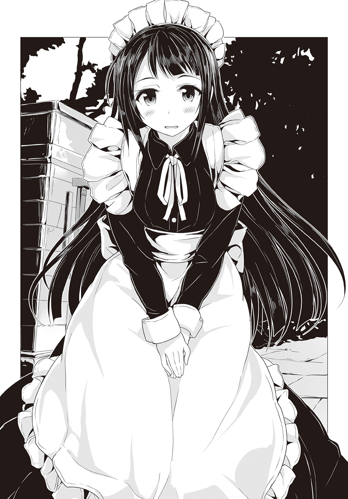
和晃にしてみれば自慢の一品だとかで――紫織にも着ろと迫ったのかもしれない。
「......変、かな？」
「いや......」
不安げな眼差しの紫織に、連志郎は首を横に振ってみせた。
どちらかと言えば似合っている。流石に金髪碧眼の、いかにも洋風な容姿のペルヴィカに比べると、自然さに欠けるというか、若干の『服に着られている』感はあるが......元々紫織は容姿の優れた少女なので、こういう衣装を着ても、変には見えない。
連志郎の愛読するアニメ雑誌には、ときどきコスプレの写真も載っていて、メイド服を見る場合も多い。もしこの紫織の写真が混ざっていたら、それなりに反響を呼ぶだろう――そう連志郞が思う程度には、似合っていた。
連志郞の返事は相変わらず淡泊だが、それでも紫織は気を良くした様だった。
小さくはにかみ、一緒に玄関を通って屋敷の廊下を歩く。同級生の少女に家の扉を開けて迎えてもらうのは、少し奇妙な感覚だった。
「学校はどう？ 皆、元気？」
廊下を歩きながら紫織がそんなことを尋ねてきた。
彼女は今、外出することができない。学校の様子も連志郎から聞くだけだ。綾をはじめ、何人かの友人も出来ていた様だが、草薙機関の眼から逃れるためには、紫織は『死者』に徹せねばならず、そうした友人達をも欺かねばならない。
それが彼女には心苦しい様だった。
「さして変わった事はない」
連志郞はそう答えた。
実を言えば、連志郎の周りでは、紫織の死が話題になる事は殆どなくなっていた。皆が興味を失ったというより、昨日の大悟の失言もあったからか、誰もが紫織の事について、連志郞に気を遣い、話題にするのを避けている印象がある。
「沢渡の事もあったからか、会長は多少引きずっている様だが、表向きはいつも通りだ。君が気に病まねばならない程、誰も彼もが悲嘆に暮れているわけではない」
「......そっか」
紫織は淡い笑みを浮かべて頷いた。
「よかった。大悟くんや優羽にも悪い事をしちゃったし。せっかく事情を話して、私の味方だって言ってくれたのに」
「あの二人と言えば」
スマートフォンを取り出してメールの一覧を確認しながら連志郞は言った。
「風間と今村は今日、来ていなかった。会長によると病欠だそうだ」
「え......」
紫織の頰がまた強張る。
恐らく連志郎と同じ事を考えたのだろう。
「〈ブルー・オーシャンズ・ガーデン〉の時とは違う。少なくとも〈ブレイバー〉は昨日の『狩り』の時点で特に破損した様子はなかった。〈魔神態〉との戦闘で風間や今村が負傷したとは考えにくい」
「じゃあ......」
「本当に風邪でも引いただけかもしれないが......もしそうでないとしたら、僕が現場を離れた後で、何かあったのかもしれない。ペルヴィカに調べてくれる様、学校からメールを送っておいたのだが」
言って連志郞はペルヴィカから帰ってきた返信の中身を見る。
『詳細はお屋敷に戻られてから』
と短い一文だけがそこにはあった。
「あの......斯波くん、一緒に私も聞きに行っていい？」
「構わない」
連志郞は頷くと、ペルヴィカがいるであろう地下へと向かう。
紫織の横顔をちらりと見ると、不安にその表情が曇っているのがわかった。
「............」
紫織にとって大悟と優羽は草薙機関の人間である以前に、同級生であり、友達なのだろう。彼等もまた、紫織の〈悪魔憑き〉が治っていないと知っても、あくまで友人としての態度を崩しはしなかった。
心配するのは当然だ。
（杞憂であってくれれば、いいのだが）
胸の内でそう呟きながら、連志郞は自分もまた彼等の一件について不安を感じてることに、驚いていた。
●
長く延びる高架の上を、二両編成の車両がゆっくりと進んでいく。
数年前に開業したモノレールは、市内と郊外の新興住宅街を結ぶ市民の足だ。路線バスでは大回りになってしまう経路を大幅に短縮してくれるため、利用者は多い。特に通勤通学、及び帰宅ラッシュの時間帯にはかなり混雑する。
車両は繁華街の脇を抜けて、川の上に差しかかった。
この川の上を横切る高架線路が、モノレールの強みだった。
既存の道路事情に影響される事なく、真っ直ぐに――迂回せず直線的に、最短距離を辿って街の中心部に到達出来る。勿論、万が一にも車両が転落すれば大惨事だが、最新の建築技術で造られた高架と、コンピュータ制御の車両の信頼性は高く、仕様書上、事故が生じる可能性は限りなく零に近い、というのが市交通局の見解だった。
だが――
「......なんだ、あれ？」
乗客の一人が窓の外を見ながらそう呟く。
その言葉につられて他の乗客も何人か改めて外を見遣るが、特に妙なものは見当たらない。何かの見間違いだったのだろう。彼等はそう判断して、再び車内広告や手元のスマートフォンに視線を戻した。
次の瞬間――
――がぁんッ！
突然、乗客達の頭上から激しい音が響いて車両が揺れた。
制御装置が異常を感知して急ブレーキ、立っていた乗客達が慣性に逆らえず前へと投げ出される。車内のあちこちで悲鳴が上がった。吊り革や手すりに摑まっていてさえ、あまりに急な事で、踏みとどまる事が出来ずに床へ叩きつけられた者が大半だった。
更に次の瞬間、車内灯が落ちた。
既に夕暮れ時であるので、照明が消えてしまえば車内はかなり暗くなる。先の悲鳴に続いて不安混じりのざわめきが広がっていき――それに、車体がみしみしと軋む不快で不気味な音が重なった。
車両は揺れていた。揺れ続けていた。
『非常停止装置が作動しました』
機械音声のアナウンスが冷静に告げる。
『状況を確認しておりますので、しばらくお待ちください』
モノレールは前述の通りコンピュータ制御――つまり無人運転だ。何か問題が発生した場合は、最寄り駅から係員が駆けつけてくる。
逆に言えば......それまでは現場の乗客に出来る事は何もない。
「なんだ、地震か？」
「ちょっと大きすぎない？」
「携帯、携帯」
乗客達は不安を紛らわせようと、それぞれ携帯電話や携帯端末を取り出して情報を求めた。ニュースサイトにＳＮＳ、匿名掲示板。だがそれらしい情報は皆無だった。そもそも高架上のモノレールが大きく揺れて緊急停止する様な地震なら、地震警報が届いている筈だが、それもなかった。
携帯でテレビ放送を見た者もいたが、流れてくるのは、近所の動物園でシロクマの赤ちゃんが生まれたとか、そんな呑気なニュースだけで、地震速報のテロップも出ていない。
しかし、現実に車両は揺れている。
「なんだ......なんだこれ、なんだこれ!?」
「なんで揺れてるの、このモノレールだけ!?」
戸惑いの声があちこちで上がり、車内の空気が不穏に濁る。赤ん坊が敏感にそれを察知して泣き声を上げ、母親が慌ててあやした。
そして――
「――ッ！」
窓の外を見ていた男性客の一人が、大きく息を呑んで後ずさった。
勿論、狭い車内――無理に後ろにさがれば他の乗客にぶつかる。神経を尖らせていた何人かが苛立たしげな声を上げるが、その男性客は窓の外を見つめたまま、そちらに応じる事はなかった。
「どうしたの？」
「何かあったのか」
別の乗客が問いかけても答えない。代わりに震える指がただ窓の外を指した。
「あ............あれ......あれ............」
男性客の顔は血の気を失って真っ青である。唇も熱病に罹ったかの様にわななき、そこからうわ言の様な、意味をなさない言葉が、繰り返し零れ落ちた。
訝しみながらも他の乗客達は男性客の指さす先に視線を向ける。
そして――眼が合った。
窓からモノレールの車内を覗き込む、大人の握り拳程もある、巨大で血走った眼球。
爛々と異様な情熱を滾らせて輝くそれは、爬虫類を思わせる細長い、そして鱗に覆われた顔に塡まっていた。
「......〈悪魔憑き〉......！」
「きゃああああああああああっっ!!」
車内は一瞬にして大混乱に陥った。
先の男性客同様、乗客達は怪物から一ミリでも遠ざかろうと車両の反対側へと逃げるが、やはり壁や他の乗客にぶつかってそれ以上は動けない。
しかも――
「ひあっ......!?」
反対側の窓からももう一体の怪物が顔を覗かせていた。
こちらは毛むくじゃらの、獣じみた顔で......三つの眼が、まるでそれぞれ別の生き物であるかの様にばらばらに瞬きして、慌てふためく乗客達を眺めていた。
悲鳴と怒号が交錯する。
そこにまた、天井から大きな衝撃音が響いた。
更に激しく左右に揺さぶられる車両。人々はようやくその原因が何なのかを知った。緊急停止も恐らく事故や災害などが原因ではない。怪物が直接、車両に取り付いて、これを殴り、あるいは摑んで揺さぶっているのだった。
「怪物だ、怪物が出たんだ、ああ、ああ、なんとか、なんとかしてくれっ！」
「助けて、助けて、助けてぇっ!!」
警察か消防か......とにかく外部に連絡をつける事が出来た者は携帯電話に向かって怒鳴り、あるいは懇願して、ひたすら助けを求めている。
誰もが見ただけでわかった。
こんなでかくて恐ろしい姿のバケモノに敵う筈がない。それは絶望の具現だった。自分達に出来る事など何もない。いつこのバケモノは窓を割って車内に手を伸ばしてくるかわからない。摑まれたら終わりだ。握り潰されるにしろ、引き裂かれるにしろ、きっと残酷で逃れ様のない死がそこには待っている......一瞬でそう悟らざるを得ない何かを、その異形の怪物達は備えていた。
半狂乱の声が渦巻き、閉ざされた車内を満たす。泣き喚く乗客もいれば、意味もなく怒鳴り散らす者もいる。もはや収拾などつけようがない。『しばらくお待ちくさい』というアナウンスだけが、場違いに冷静だった。
絶望と混乱、やり場のない恐怖。車内の暗さと、非常時に乗客を誘導するべき乗務員の不在がそれに拍車をかける。狂騒は閉ざされた窓を、扉を越えて、車両の外に漏れ出していた。
「 ッ!!」
ッ!!」
二体の怪物が嬉しげに哄笑した。
ぎょろりと動く巨大な眼球が、乗客達の顔を一つずつ丹念に、舐めるかの様に視線で触れていく。彼等の顔が表情が恐怖と絶望に歪むのを見るのが楽しくて仕方ないといった様子だった。
弱者の慟哭と断末魔こそが最上の供物。
それこそが怪物達に悦びと――力を与える。
血を啜るでもなく。肉を喰らうでもなく。ただただ絶望と恐怖を堪能するためだけに他者を蹂躙し殺害する......そのおぞましい在り様は、まさしく忌むべき『悪魔』そのものだった。
●
ペルヴィカが提示してきた記録は断片的なものだった。
「昨日の〈魔神態〉出現の記録は一件のみです」
連志郞が帰還してからは〈魔神態〉が現れた形跡はないという。
「草薙機関の特別対応班が、あの後で更に出動したという形跡もありません」
良くも悪くも〈ブレイバー〉は目立つので、誰にも気づかれずに立ち回りをするというのは不可能に近い。勿論、和晃の放った人形達による監視網の隙間を縫って――という事は可能性としては零ではないが......
「じゃあ、大悟くん達が〈悪魔憑き〉の事件に巻き込まれたわけじゃないんだ」
紫織はほっと胸を撫で下ろす。
だが連志郞の表情は厳しいままだった。
「まだそうと決まったわけじゃない」
「え......？」
「〈ブレイバー〉が出動していないことはわかった。しかし、それはあくまで〈魔神態〉が確認されていないからだ。そうだろう、ペルヴィカ？」
「はい。その通りです」
ペルヴィカは頷いた。
あくまで〈ブレイバー〉は誰もが視認出来る脅威、つまりは〈魔神態〉が出現した時にのみ出動する。〈魔神態〉を出すに至っていない〈悪魔憑き〉に対しては、草薙機関の部隊か、さもなくば厚生労働省や警察といった関係各省庁の部隊が派遣されて、これを拘束する事になっている。見た目はただの人間に過ぎない〈悪魔憑き〉に、身長六メートルのロボットで対するのは、さすがに『やり過ぎ』に見えるとの判断からだろう。
しかし実際には〈魔神態〉は悪魔憑きの能力の一形態に過ぎない。
〈魔神態〉を出して扱うのが一番安定する――不定形の能力は〈悪魔憑き〉自身にも扱いづらいらしい――上、力そのものが倍増する様だが、人間形態のままで〈悪魔憑き〉としての超能力を扱う事も不可能ではない。
「連志郎様の帰還後、同じ現場で何か騒ぎがあったようです」
「騒ぎって、どんな？」
「救急車両が複数集まり、怪我人を搬送したとのことです。現場は封鎖され、詳しい事情はわかっていません。また、報道も一切されていません。草薙機関による情報封鎖措置が取られたものと思われます」
「救急車で搬送って......まさか、大悟くん達が？」
先の〈魔神態〉制圧にあたっては、大悟達が迅速に動いた事もあり、緊急搬送が必要な重傷者は一人も出ていなかった筈である。事後、単に念のためにと救急車が駆けつけてきた可能性はあるが、その場合は現場封鎖をする意味がない。既に〈魔神態〉は制圧された後で、隠さねばならない様なものは何もない筈だ。〈ブレイバー〉そのものに対してはもう今更感があるであろうし。
「草薙機関が隠蔽するという事は、やはり〈悪魔憑き〉絡みだ。加害者か被害者か、それはわからないが」
「でも、〈悪魔憑き〉が出たなら、わかるんじゃないの？」
「さっきも言った通りだ。〈魔神態〉ならこちらで補捉できる。けど、そうじゃない〈悪魔憑き〉は確実とはいかない。あくまでこちらの情報網は『眼』と『耳』であって、それ以上でもそれ以下でもないからな。人形に魔術は使えないし、〈悪魔憑き〉の気配を読むなんて真似も出来ない」
「......そっか」
そういえば以前にも、連志郞が似た様な事を言っていた記憶がある。
能力を使用していない状態では、〈悪魔憑き〉かそうでないかは判別がつかない事が多いのだと。阿川将太はその事例だ。紫織にしたところで彼女の中に未だ『悪魔』が眠っているという事に関しては、和晃達が精密検査をするまでわからなかった事である。
「もし〈悪魔憑き〉が〈魔神態〉にならずに特別対応班を襲撃したならこちらにはわからない。人間の姿で能力を使う事も可能は可能だ。制御しづらいが」
そう言って連志郞は自分の手首に塡めている腕時計型の封印具に触れる。
確かに彼は以前、一時的に封印を緩める事で、阿川将太に絡んでいた不良生徒達を叩きのめしたり、紫織達に襲いかかる怪物に攻撃を仕掛けた事がある。連志郞が能力を意識的に使ったというより、単に、『悪魔』に対しての縛鎖を緩めた結果、暴れ回る『悪魔』に不良生徒達が巻き込まれた程度のものだった様だが。
「〈魔神態〉を出すに至っている〈悪魔憑き〉なら僕よりもある程度は自覚的に『悪魔』を使役出来るかもしれない。そうなれば――等身大の人間の『殴り合い』になったなら、風間はともかく、今村は苦しいだろうな」
大悟は格闘の訓練を積んでいる様だし、手足は高機能の義肢......つまりはいわゆるサイボーグだ。普通の人間よりは遙かに有利に〈悪魔憑き〉と戦えるかもしれない。
しかし、優羽は小柄な少女であり、そこまで戦闘能力は高くないだろう。高出力のスタンガンを携帯し、使いこなしているところを見たが、逆に言えば、護身に関してはそういう武器に頼らざるを得ないという事である。不意を突かれたらひとたまりもない筈だ。
もし大悟や優羽が救急車で搬送されたなら、それなりの重傷という事になる。学校を急に休むのも、そして『病欠』が長引くと学校側に報告を入れているのも、当然だろう。まさか『〈悪魔憑き〉と戦った結果、重傷を負ったのでしばらく学校には行けません』などと言う筈がない。
「......優羽、大悟くん......」
不安に締めつけられる胸元を押さえて紫織が呟く。
その時――ふと、ペルヴィカが何かに気づいたかの様子で、明後日の方向を振り返った。
「どうした？」
「連志郞様。〈魔神態〉が出現した様です」
「......何処だ」
驚く様子もなく連志郞はそう問うた。
どうやら〈魔神態〉出現の報は、通信機か何かでまずペルヴィカに報告が行く様になっているらしい。
「昨日の今日でまた出たか。大盤振る舞いだな、おい」
別のペルヴィカに抱えられた和晃がそう言いながら部屋に入ってくる。その後ろにはやはり同じ顔をしたメイド人形達が数名、続いていた。メイドの格好こそしているものの、彼女等はペルヴィカ共々〈ブリガンド〉の整備要員である。
「映像を出します」
端末を操作していたペルヴィカがそう宣言する。
壁に直付けされた大型の液晶モニターに、風景映像が映る。どうやら街の外縁部を流れる川とその周囲の映像である様だ。市内繁華街と郊外を隔てる一級河川である。
恐らくは人形の『視覚』をそのまま映しているのだろう。固定の定点カメラ映像と異なり、映像が少し揺れている。だが概ね何が起きているかは見て取る事が出来た。
川を横切るモノレールの高架。
その上に〈魔神態〉の姿があった。それも二体。
そして怪物達に挟まれて――モノレールが停車しているのも見えた。
「車両にちょっかいかけてやがるな。クソッタレが」
忌々しげに和晃が言った。
二体の〈魔神態〉はモノレールの車両に手をかけ、揺さぶっている。車内は暗いが、窓越しに中で人影が右往左往しているのが見えた。帰宅の時間帯なので乗客は多い筈だ。
「............」
連志郞が身を翻して走り出す。
〈魔神態〉と見れば連志郞は戦わざるを得ない。そういう生き方を彼はこれまでもしてきたし、これからもしていくだろう。それは彼が自身にかけた呪いの様なものだ。
それはもう、本当にいつもの事だったのだが――
「斯波くん！」
思わず紫織はその手を摑んでいた。
「私も連れて行って！」
「......何を」
連志郎は大きく眉を顰めた。
当たり前だ。〈魔神態〉と戦うには〈ブリガンド〉で出撃するしかない。たまたま現場に居合わせたならともかく、今からこの映像の現場に出かけるという事は、〈ブリガンド〉に一緒に乗るという事に他ならない。
〈ブリガンド〉はその厳つい外見に反して中身は空っぽだ。空洞は多い。紫織が一緒に乗ったところで問題はなかろうが――だからといって、同乗して何が出来るわけでもない。むしろ足手まといになる可能性の方が高いだろう。
しかし......
「お願い！」
ひどく胸騒ぎがした。
大悟と優羽が〈悪魔憑き〉に襲われたかもしれない――その事が紫織を神経質にしていた。自分の知らない所で自分の大切な人達が傷を負い、時には死ぬかもしれない。それを後から、ただ知らされるだけなのは......たまらないくらいに辛かった。
「邪魔しないから！ 大人しくしてるから、お願い！」
すがりつくように連志郎の腕を引く。
連志郎の顔には困惑と、そして若干だが迷惑そうな色が浮かんでいた。それこそ紫織だからこそ見分けがつく程度の薄いものではあったが。
「連志郎。ぐずぐずしてるヒマはねぇぞ」
連志郞が何かを言う前に和晃がそう言ってきた。
「これじゃいつモノレールが川にぶち込まれるか、わかりゃしねぇ」
画面の上ではモノレールの車両が〈魔神態〉にもてあそばれている。わざと川が見えるように傾けて、また高架に戻すなど、乗客をいたぶっていた。その気になれば、いつでもモノレールの車両など川に叩き込める――という事だろう。当然そうなれば乗客は助からない。一年中空調管理する事が前提の車両なので、窓は嵌め殺しになっており、たとえ泳げる者でも、逃げ出す隙間はおそらく、ない。
「〈ブリガンド〉の発進準備は整っております」
問答をしている時間的余裕はなかった。
「連れて行くだけだ。余計な事はするな」
連志郞はそう言って――紫織の手を摑み返す。
「......ありがとう！」
連志郎と手を繫いで紫織は走った。ペルヴィカのメイド服は本当に動きやすい。それとも身体が軽い様に思うのは、連志郞が手を引いてくれているからか。
地下整備場の奥に安置されていた鋼鉄の巨人が――二人を迎える様に、その胸元の装甲を開く。中から飛び出した数本の鎖が、まるで触手の様に連志郞と紫織に絡みつき、二人を胸部中央の座席へと引き上げると、そこで装甲が閉じた。
「出撃るッ！」
連志郞の宣言と共に、何かががらんどうの鎧の内に満ちるのを感じる。
鋼鉄の魔神は二人の〈悪魔憑き〉をその内に包み込み、眼を覚ました。
●
ベッドの脇に立った美沙紀が溜め息をつく。
彼女自身に他意はないとわかっていても、優羽は少し申し訳なく思った。
「ご心配をおかけしました......すみません」
「何言ってるの」
苦笑を浮かべて美沙紀が言う。
「後遺症の心配はなさそうで、本当に安心した。正直......あの時はもう駄目かと思ったくらいだから余計に嬉しいのよ」
透明化能力を持った〈悪魔憑き〉に襲撃された特別対応班は、事実上、活動停止に追い込まれていた。真っ先に攻撃を受けて側頭部の挫傷と複雑骨折をした優羽を含め、班員の殆どが入院不可避の重傷だ。死者が出ていないのが不思議なくらいである。
中でも最も危険視されていたのが優羽の容態だった。
なんと言っても硬膜下出血で開頭手術までしたのだ。場所が少しずれていれば命はなかったとの事だった。だが若い事もあってか彼女は手術に耐え、早々に意識を回復した。
美沙紀としては、安堵の溜め息くらいは出ても当然だろう。
「東城さんが来てくれなかったら全滅してたかもしれません。救急車も手配していただきましたし」
「当然の事をしたまでよ」
そう言いつつも美沙紀にそれを誇る様子はない。
「貴方達の様な若い子を危険な前線に立たせているわけでしょう。サポートくらいこなせないと大人として恥ずかしいわ」
美沙紀はそう言って、ベッドの脇に腰を下ろすと、見舞いに持ってきたらしいリンゴを籠から取り出して、苦笑した。
「お見舞いに買ってきたんだけれど、果物ナイフ、取り上げられちゃったのよね」
「ああ......まあ、仕方ないですね」
と優羽も笑う。
人の善い女性だと、優羽は思う。
〈悪魔憑き〉という超常的な存在と戦うため、草薙機関はどうしても関係各者への人道的な配慮が後回しになってしまう傾向がある。優羽をはじめ、現場の人員にかかる負担も大きい。だが、それは仕方のない事だと割り切っていた。
そんな中で、美沙紀は優羽や大悟が高校生であることを重んじ、常に配慮してくれている感があった。それでいて、優羽や大悟を子供扱いはしない。先程も優羽や大悟を指して『若い子』という言い方をしたのは、そうした気遣いの結果だろう。
彼女は監視対象である紫織にも気を配っていた。彼女が一介の高校生としての生活を送れるようにと陰ながらいろいろと配慮していたのを、優羽は知っている。
養護教諭という肩書きはあくまで紫織を監視するための偽装に過ぎないが、本当にこの人が学校の先生であったなら、きっと頼もしいだろうと優羽は思った。
ちなみに――優羽達が入院しているこの病院の階層は、警官が四名派遣され、二十四時間体制で警備をしてくれている。当然、果物ナイフの様な刃物を含め、凶器になり得るものは全て取り上げられる。草薙機関は、〈悪魔憑き〉が〈具現体〉ではなく、人間形態のままで特別対応班に襲いかかったという今回の事件を、重く受け止めていた。
「そういえば、風間くんは別の病棟なのよね」
「大悟はちょっと特殊ですから......手足と体と、両方診なきゃいけないので特別病棟にいる筈です。義肢のほうは私たちが改めて調整することになると思いますけど」
大悟の義肢は、普段の調整程度ならば優羽にも可能だが、本格的な『修理』となると、やはり専門の者が診ねばどうにもならない。明日にでも草薙機関から技術者が派遣されてくる筈だった。
「いろいろと泥縄ね......」
美沙紀は改めて溜め息をついた。
「体制を見直さないとまずいわ」
実のところ......草薙機関を含め、関係各省庁の〈悪魔憑き〉に対する体制は、あくまで突発的な『災害』に対する様な形になっているのが殆どだった。〈悪魔憑き〉とはあくまで疾病であり、〈具現体〉による破壊活動もその『症状』の一種であると。
つまり戦術を練り、作戦を立て、これを実行してくる様な『勢力』を相手に『戦争をしている』という意識が極めて薄かったのだ。そもそも〈悪魔憑き〉が組織化されているという発想そのものがなかった。
だからこそ今回の様に〈具現体〉制圧直後の、気の緩んだ隙を突かれる事になった。
しかもこうして現場に被害が出た場合の、対処についても何も決まっていない様なところがある。
〈アドバンスド・メイル〉――特に実験機である〈ブレイバー〉の運用にはさまざまな要素が絡んでくる。子供向けアニメや特撮の戦闘ロボットの様に、ただスイッチを入れれば戦えて、メンテナンス・フリー......というわけにはいかない。むしろ一度戦う度に何処かが壊れたり摩耗してしまうので、部品を交換するのが当然なのだ。
特別対応班の人間の殆どが入院中の今、〈ブレイバー〉を運用するのは事実上不可能となってしまった。機体は壊れていないが、扱う人間がいない状態だ。
〈ブレイバー〉のデータを元に改良された量産試作機は先日、何体かが自衛隊の教導部隊に配備され、訓練が始まった様だが......実戦に投入されるのはもう少し先の事だろう。
今、〈悪魔憑き〉が出現したら草薙機関は――というか日本政府は、〈ブレイバー〉がなかった頃の、非効率的で乱暴な対処法しか取れない。そうなれば間違いなく被害は拡大する事になるだろう。砲弾やミサイルが市街地で用いられれば、必ず『流れ弾』による被害が生じる。
「申し訳ありません......」
「だから何言ってるの、今村さん達を責めてるわけじゃないのよ。これは上層部の姿勢の問題よ。貴方達に責任がある筈ないでしょ」
と美沙紀は手を振ってそう言ってくれる。
「とにかく、今はゆっくりと休んで――」
その時――彼女のスマートフォンが、そして優羽の枕元に置かれていたスマートフォンが、同時に鋭い音を発した。
普通のメロディではない。敢えて耳に障る様なその音は、草薙機関関係者の端末に共通して使われている、非常事態警報だった。
そしてそれが発せられる場合、九割以上が〈具現体〉出現の報だ。
「なんて事――」
呻く様に言いながら美沙紀が端末を操作する。
恐れていた事態が早々に現実になったのだ。
「〈具現体〉が二体。それも......モノレールを襲撃!?」
「............」
優羽も自分の端末を操作して情報を受け取る。
考えた以上に悪い状況だった。
出現した〈具現体〉二体は、モノレールの車両を人質に取るような形で、高架上に留まっているという。〈ブレイバー〉が動けない事は既に草薙機関上層部に伝わっていたので、即座に自衛隊に出動要請がなされ、特別法案に基づいて、戦闘ヘリの派遣が決定したそうだ。さすがに戦車ではとても間に合わないし、対地攻撃装備のジェット戦闘機となると、市街地での対応力――機動性に欠ける。
とにかく〈ブレイバー〉が動けない以上、大火力で強引に〈具現体〉を制圧するしかないのだ。
しかし――
「駄目だわ」
美沙紀が絶望に表情を曇らせる。
「戦闘ヘリじゃモノレールごと吹き飛ばしてしまう」
そう。だからこそ一見、無駄の極みともとれる様な人型兵器〈アドバンスド・メイル〉が計画され、〈ブレイバー〉が製作されたのだ。〈ブレイバー〉ならば、飛び道具ではなくあくまでその腕で、あるいはその延長である道具で、〈具現体〉を『取り押さえる』事が――いや、それだけでなく、立ち回り様によっては、まずモノレールを乗客ごと救助する事も可能だろう。
だが戦闘ヘリにはロケット砲や機関砲を〈具現体〉に叩き込む事しか出来ない。
こういう時こそ〈ブレイバー〉の出番なのだ。
誰かを殺すためではなく、誰かを守り救うために造られた、鋼鉄の守護神。
それは、まるで――
「東城さん！」
突然、優羽は悲鳴じみた声を上げた。
「大悟の病室を見てきてください！」
「――え？」
だが美沙紀は優羽の様な発想には至らなかったらしく、怪訝な表情を浮かべていた。
「風間くん？ 特別病棟にいるのよね」
「そうです。でも、抜け出したかもしれません。携帯端末は大悟も持ってますから、状況も把握しています。もしそうなら、お願いです、止めてください！」
「まさか、風間くんが？」
腰を浮かしながらも美沙紀は半信半疑といった表情である。
確かに大悟は重傷だし、義肢にも問題が生じているという報告があった。普通なら大人しくベッドの上で療養に専念しているだろう。
だが優羽は風間大悟という少年を誰よりもよく知っている。
あの大悟がこんな情報を前にして大人しくしている筈がない。
「いくら彼でもそんな無茶は――」
「やりかねないんです！ お願いします、早く！」
無理矢理な大声で叫んだせいか、優羽は咳き込んでしまう。
だがさすがに美沙紀にもその真剣さは伝わった様で、彼女は椅子を蹴立てる様にして病室を飛び出していった。
「大悟......」
勿論、大悟のいる病棟の方にも警備の警官は配置されている。馬鹿正直に正面から出て行こうとすれば彼等が止めてくれるだろうが、善くも悪くも腕白坊主がそのまま大きくなった様な大悟なら、ベッドのシーツで縄を造って三階の窓からでも抜けだしかねない。
どうか杞憂であってほしい。
今は動けない自らの身を恨めしく思いながら、ただそれだけを優羽は祈った。
●
迷彩塗装を施された細身のヘリコプター二機が、緩やかな弧を描いて舞っている。
ＡＨ―６４Ｄ〈アパッチ・ロングボウ〉。
少数ながら自衛隊が所有する強力無比な攻撃ヘリである。
固定武装は三十ミリ機関砲一門だが、高性能な火器管制システム（ＦＣＳ）を備え、対戦車ミサイルやロケット弾発射筒を両脇の武装架に装備する事が出来る。その充実した火力と精密極まりない照準システムを以て、この攻撃ヘリコプターは長らく世界最強の地位を守ってきた。地を這う存在にとっては天敵に等しい鋼の猛蜂だ。
しかし......
「どうした、おい!?」
〈魔神態〉で自らを鎧う〈悪魔憑き〉は、鈎爪を備えた己の中指を立てて〈アパッチ・ロングボウ〉を駆る自衛隊員達を挑発してみせた。
「そのミサイルは飾りか？ 撃ってみろよ、ほら！」
程度の差こそあれど、〈魔神態〉を出すと大抵の〈悪魔憑き〉は高揚する。
あるいはランナーズ・ハイの様に、脳内麻薬を大量分泌させる様な何かが〈魔神態〉そのものにあるのかもしれないが、〈悪魔憑き〉達は細かな事を気にしていなかった。ただそれが興奮を伴い、元々乏しい道徳観や倫理観を綺麗さっぱりと払拭してしまう効果がある事は――まるで、中世においては暗殺者の良心を麻痺させるために用いられた大麻の様に――〈フォスファー〉の誰もが理解していた。
二人の〈悪魔憑き〉は明らかに気が大きくなっていた。
二機の攻撃ヘリは、先程からただ周囲を旋回するばかりで、全く手を出してこない。迂闊に攻撃を仕掛ければモノレールの乗客を巻き込む事がわかっているからだ。相手が手出しできない一方的な状況に、彼等は酔っていた。
「見ろよ。連中、何もできやしねぇ」
獣の様な、毛むくじゃらの〈魔神態〉を出している〈悪魔憑き〉の男が笑う。
「――だね。ねえ、気にせずに撃ちなさいよ！ 上手くすれば私達を吹っ飛ばせるかもよ？ 一緒に他のものも吹っ飛ぶけどねぇ！」
そう言ってもう一体――爬虫類の様な、鱗に覆われた〈魔神態〉を出している女の〈悪魔憑き〉も、攻撃ヘリを挑発する。
両者は別に友人でもなければ恋人でもない。〈フォスファー〉で互いの顔を知っている程度だ。モノレールを襲撃する案は男が立て、女は深く考えずこれに乗っただけの事である。だが結果としてこれは非常に効果的だった。
元々川の上で開けた場所であるから、背後さえ気をつけていれば不意を突かれる可能性はほぼなくなる。機関砲を仰角で――モノレールの車両に当たらない様に――連射されれば危ないかもしれないが、二人組ならば、そうした攻撃を受ける危険性もほぼなくなる。それらしい挙動をすれば、モノレールを盾の様に持ち上げてみせてやればいいだけだ。
「来ねぇならこっちから行ってやるぜえっ!!」
『獣』の男が身を仰け反らせてそう吼えると――いきなり高架を蹴って跳躍。旋回半径をゆっくりと狭めてきていた一機に襲いかかった。
まさか飛びかかってくるとは思わなかったのだろう。攻撃ヘリは慌てた様に機動、回避しようとするが――遅すぎた。
〈魔神態〉は高速旋回するローターを避け、その軸の上に設けられたミリ波レーダーのレドームへ、片足で器用に降りる。真上から蹴りを加えた様な形だ。唐突な加重に姿勢が崩れ、ローターの基部も歪んだ攻撃ヘリは、制御不能に陥り、よろよろと蛇行――高架に接触して機体の一部をばらまきながら、川へと落下した。
「うぉらぁ！」
その直前、『獣』の〈魔神態〉は再び跳躍、高架の上に戻っている。離脱の瞬間に能力で何かを仕掛けたのか、水没した攻撃ヘリは一瞬の後、爆発。盛大な水柱がそびえ、高架の上に時ならぬ雨が降り注いだ。
「よっわーい！ もっろーい！」
「ギャハハハハハッ!! ざまあねぇ！」
二人して川を見下ろし、爆笑する。
所詮、自衛隊などこの程度なのだ。本気になった〈悪魔憑き〉の敵ではない。そもそも〈悪魔憑き〉は人間の上位種なのだ。武器を持とうが組織を作ろうが、生物としての絶対的な能力差は永遠に埋まらない。
少なくともこの二人はそう考えていた。
ただ――だからこそ。
「ん？ ......おい」
「来ちゃったね。つまんなーい」
喜悦に滾っていた〈悪魔憑き〉二体の口調に僅かながらも、忌々しげなものが混じる。楽しい遊びに無関係の他人が割り込んできた様な気分だった。
「〈悪魔狩り〉だ」
遙か頭上から、空を二つに引き裂くかの如く真っ直ぐに落ちてくる鋼鉄の塊。
それは空気摩擦で真っ赤に焼けながら高架の上に落下――しかし激突の直前で急減速し、殆ど音もなく着地して見せた。
代わりに衝撃波が〈悪魔憑き〉達に押し寄せる。
着地の瞬間を狙って攻撃しようと身構えていた二体は、姿勢を崩してその機を逃していた。『獣』の〈魔神態〉は二歩ばかり後ずさっただけだったが、『蜥蜴』の〈魔神態〉はその場に尻餅をついていた。モノレールは高さがないためか、あるいは何処かに引っかかっていたか、窓硝子の幾つかに亀裂こそ入ったものの、車体はわずかにずれただけだ。
「まあ、来たモンはしょうがねぇよなあ。殺すか」
「本気で目障りになってきたしね」
構え直しながら〈悪魔憑き〉の二人はそう言った。
草薙機関のロボットが無力化された今、〈悪魔狩り〉は〈悪魔憑き〉にとって唯一の脅威と言える。この黒い巨人騎士さえいなくなれば、もう誰も〈悪魔憑き〉の〈魔神態〉を止められなくなる筈だった。
だからこそ〈フォスファー〉は次の排除目標に〈悪魔狩り〉を据えていた。
ただ、こちらははっきりと正体がわかっていたわけではないし、背後関係にも不明な点が多いため、それらしき者をまとめて排除するための作戦を、亜麻音や数名の〈悪魔憑き〉が練っている最中だった。
「さあ、この俺の――」
『獣』の〈魔神態〉が戦る気満々で前に出る。
だが――あろう事か〈悪魔狩り〉はそれに合わせる様にして一歩、後方にさがった。
「......ああ？」
更に『獣』の〈魔神態〉は前に出るが、やはり〈悪魔狩り〉は一歩後退する。まるで『獣』の〈魔神態〉を恐れているかの様だが――
「やけにおとなしいじゃねぇか。来ねぇのか、オラ！」
再び大声で挑発する。
が――〈悪魔狩り〉は動かない。
「なんだ......？」
『獣』の〈悪魔憑き〉は違和感を覚えた。
今までの〈悪魔狩り〉は、現場に姿を現すと、そのまま問答無用で〈悪魔憑き〉に襲いかかっていた。〈魔神態〉の特殊能力を見極めるために、様子を見る程度の事があったかもしれないが、迫られて後ずさる様な真似はした事がない筈だ。
一体これはどうした事か。
今更になって臆したのか。
それとも――
「............おい、もしかして」
『獣』の〈悪魔憑き〉は背後を振り返って『蜥蜴』の〈悪魔憑き〉を手招きする。
それぞれの〈魔神態〉の頭部を寄せて耳打ちすると、『獣』の〈悪魔憑き〉はその場から二歩ばかり後退し、入れ替わる様にして『蜥蜴』の〈魔神態〉が飛び出した。
姿勢を屈めて一気に間合いを詰めて、〈悪魔狩り〉に襲いかかる。
〈悪魔狩り〉は――応戦した。
さすがにもう後退はせず、伸びてきた〈魔神態〉の腕を弾き、カウンターでその鱗に覆われた顔面を殴りつける。そこからの動きは更に淀みなく、よろめいた〈魔神態〉に足払いをかけたかと思うと、高架の上にその巨体を転倒させ、そこを踏み潰しにかかる。
全く容赦のない動きだ。
『蜥蜴』の〈魔神態〉は横に転がって踏まれる事は避けたが、立ち上がる余裕はなく、這って後退するその異形に、〈悪魔狩り〉が馬乗りになった。
右腕を大きく引いた構えをとる〈悪魔狩り〉。
何度も〈悪魔憑き〉の中の『悪魔』を祓ってきた必殺技の形だ。
だが――
「おっとぉ！」
殊更に大声を張り上げて〈悪魔狩り〉の注意を引きながら、『獣』の〈悪魔憑き〉はモノレールの車両を持ち上げてみせた。
中の乗客達が悲鳴を上げるのが耳に届く。弱者をいたぶる強者の愉悦を感じつつも、『獣』の〈悪魔憑き〉は車両を川の方へと傾けて見せ、〈悪魔狩り〉の様子を窺った。
「............ッ！」
〈悪魔狩り〉の手が止まる。
その瞬間を『蜥蜴』の〈悪魔憑き〉は見逃さない。すかさず〈悪魔狩り〉の手を払い除け、それが本来の姿であるかの様に、高速で高架の上を這い、『獣』の〈悪魔憑き〉の所へと戻ってきた。
「なんだ、お前も手が出せねぇのか！」
「そうみたいねえ！」
「はっは、そうかそうか、そりゃ良かったなァ！」
黒い巨人騎士を指さして笑う〈悪魔憑き〉達。
思った通りだ。〈悪魔狩り〉はモノレールを巻き込む事を恐れて手が出せないのである。先に二歩ばかり退いたのも、モノレールから〈魔神態〉を引き離してそこで戦うつもりだったのだろう。
草薙機関や自衛隊を牽制するために襲ったモノレールだが、〈悪魔狩り〉にも有効だったようだ。予想外の効果である。確か以前は街中でも周囲への被害を気にせず平気で暴れていた筈だが――今更、安っぽい道徳観でも芽生えたのだろうか。
とにかく人質は〈悪魔狩り〉にも有効だ。
そうなればもう、〈悪魔憑き〉の二人に負ける要素は皆無だった。
「なら遠慮なく、ボコらせてもらおうか！」
片方が〈悪魔狩り〉に躍りかかる。片方は車両のもとへ残り、妙な動きを見せたら車両を小突く。これだけで〈悪魔狩り〉の動きが目に見えて鈍った。勿論、戦闘ヘリの方にも視線を送って牽制しておいてやるのを忘れない。
異形の手が黒騎士の鎧を殴り、引っ搔き、殆ど一方的に攻撃を繰り返す。特殊能力は未だ使わない。〈悪魔憑き〉達はまずたっぷりとこの〈悪魔狩り〉をいたぶるつもりだった。勿論、仲間の復讐などという殊勝な心がけからではなく、単純に、相手を蹂躙する愉悦をたっぷりと、長く味わうためだ。
さすがは〈悪魔狩り〉と言うべきか......数発の攻撃が命中し、その装甲の一部が凹んだが、その程度では巨人騎士は倒れない。
だが〈悪魔憑き〉達は一方的に攻撃できる。
〈悪魔狩り〉が倒されるのは時間の問題だった。
「ほぉらほら、〈悪魔狩り〉ちゃあん？ 反撃してもいいんだぜえっ!?」
勝ち誇る〈悪魔憑き〉達の哄笑が夕暮れ時の空に反響する。
だが黒い鋼鉄の騎士は、ただひたすら無言で耐えるばかりだった。
●
連続する衝撃に操縦席が揺れる。
連志郞の膝の上に横座りする形で〈ブリガンド〉に乗っていた紫織は、彼の首筋に腕を巻いてしがみつきながら、小さく悲鳴を上げた。
「――心配ない」
連志郞は表情一つ揺らがせずにそう告げてくる。
「この程度で〈ブリガンド〉は破壊されない」
「わ、わかってる」
そう応じつつも紫織の声は震えていた。
〈ブリガンド〉の中はいわばがらんどうなので、やたらに音が響くのだ。しかも外部装甲が破られれば、生身であの〈魔神態〉と対面する事になる。恐怖を覚えて当然だった。
「とはいえ、面倒な」
連志郞の声に苛立ちが混じっているのに紫織は気づいた。
恐らくモノレールの乗客を人質に取られて、思う様に戦えない事が原因だろう。相手が一体であれば強引にモノレールから引き離す事も出来るかもしれないが、二体が相手では片方と戦っている内にもう一方がモノレールに手を出してしまう。
古典的なやり方だ。
だが効果的であるからこそ、歴史上様々な場面で使われてきた方法だ。現状では〈ブリガンド〉側に状況打開の策がない。
「斯波くん――」
不安を覚えて紫織は連志郞の横顔を見つめる。
一瞬、苛立ちが頂点に達した連志郞が、モノレールを見捨ててしまうのではないかと思ったからである。正義の味方を自称する大悟ならば決してそんな選択肢は採るまいが、正義とは無縁の『復讐者』を自称している連志郞ならば、採り得る対処法だった。
だが......
「大丈夫だ。見捨てたりしない」
表情は険しいまま、しかし連志郞はそう言った。
「そんな真似をしたら、あの――」
そう続けて......しかしそこで彼は何かに気づいたかの様に、眼を瞬かせる。
そんな真似をしたらどうだというのか。
あの、とは何を、いや、誰を指しているのか。
（ひょっとして......）
紫織同様に、連志郞の脳裏を大悟の顔が過ぎったのではないか。
そう。大悟ならば――
「斯波くん？」
「いや......」
何かを払い落とすかの様に首を振る連志郞。
「人質を別にしても、どうにも調子がおかしい」
「......え？」
「〈ブリガンド〉の動きが鈍いというか、何か抵抗の様なものを感じる」
「抵抗？ あの〈悪魔憑き〉に何かされているっていうの？」
「わからない。抵抗でなければ重りか。とにかく〈ブリガンド〉の動きが一瞬だが遅れがちだ。相手の隙を見て攻撃するつもりなのだが、それが上手くいかない」
「......それって」
〈悪魔憑き〉の側に原因がないとすれば、それは〈ブリガンド〉側にある事になる。
いつもと違う点といえば――
「わ、私のせい......!?」
自分が一緒に乗っているから、連志郞の集中が阻害されているのだろうか。
やはり自分はお荷物になってしまっているのか。
だが......
「――ッ！」
一際大きな衝撃が〈ブリガンド〉を襲う。
ふと弱い光が紫織の頰を照らした。唐突に差し込んできた光を逆さまに辿る様にして眼を向けると、〈ブリガンド〉の装甲に生じた小さな亀裂が見えた。
「............」
息を呑む紫織。
魔法で強化された巨人騎士の装甲も、どうやら限界を迎えつつある様だった。
●
電子錠の暗証番号は変更されていなかった。
これもそのままだった指紋認証と併用してこれを解除――大悟は倉庫に偽装された〈ブレイバー〉の格納庫に身を滑り込ませる。
奥に停められたトレーラーの荷台には、〈ブレイバー〉が横たえられていた。雨避けと擬装用のシートを捲ってその下に潜り込み、非常用の外部操作パネルを開いてこれまた暗証番号を打ち込み、操縦席を開放――中に潜り込む。
当然ながら主電源は落ちている。
だが〈ブレイバー〉は搬送用の架台に載せられたその瞬間から充電が開始されている筈だ。緊急出動する事の多い機体なので、超伝導蓄電池は可能な限り満充電を維持する様になっている。
「起きてくれよ......」
大悟は起動キーを入力。
操縦席を囲むモニターに光が点り、冷却ファンが回転を開始。画面に現れたモード選択から『緊急起動』を選択し、そこで問われた暗証番号を再び入力した。各種支援が期待出来ない孤立無援の状況で、〈ブレイバー〉を動かすための、極めて特殊なモードである。万が一にも盗まれたりしないよう、このモードだけは選択に際して暗証番号を要するのだ。
『暗証番号確認』
『緊急起動モード』
画面の上にその表示が出ると、次の瞬間、猛烈な勢いで画面の上を英語の文字列が流れ始める。普段は見る事のない表示だ。緊急機動モードは〈ブレイバー〉の機体制御を内蔵のコンピューターだけで処理しなければならず、回路への負荷も電力消費も通常の起動とは比較にならないほど大きい。本来は何らかの理由で支援が途絶えた場合に、現場から離脱するためのもので――この状態で戦闘をする事はそもそも考えられていない。
しかし......
「ここで行かなきゃ、ヒーローじゃねぇしな！」
そう呟いて大悟は義肢の神経回路を介して〈ブレイバー〉に接続。
〈ブレイバー〉は起動し、上体を起こす。シートを留めていたロープが引きちぎられて、その端が跳ねるのが見えた。
「待ってろよ、皆」
まるでマントを纏うかの様にシートをその身にまといつかせたまま、〈ブレイバー〉は立ち上がり、格納庫内を歩いて一番大きなシャッターに向かう。無線でシャッターを操作してこれを開きながら、大悟は脂汗の滲む顔に、にやりと不敵な笑みを浮かべた。
腹部の鈍痛を無視して大悟は〈ブレイバー〉を格納庫の外に出した。
時間は限られている。緊急起動モードでどれだけ〈ブレイバー〉が動けるかはわからない。一応、推定稼働可能時間はモニター画面の端に出ているが、あくまで推定なのであまり信用は出来ない。
また前回の出動の後から恐らく〈ブレイバー〉は整備されていない。現場に放置されていなかっただけでもマシという状態だ。長時間稼働すれば恐らく、何処かに不具合が出てくる。それまでに決着をつけねばならない。
この状況で戦いに出るなど明らかに無茶だ。
だが――それでも大悟の顔には笑みが浮かんでいる。
此処が踏ん張り時だと彼は知っていた。ヒーローはいつだって頼もしい。ここぞという時に現れて颯爽と皆を助けるのだ。弱気な姿を見せるわけにはいかない。
「行くぜ」
そう呟いて大悟は現場に向け〈ブレイバー〉を走らせる。
幸い、現場は格納庫とそう離れていない。
腹の辺りに痛みと共に何か濡れた様な感触を覚えたが――大悟は、その感覚をきっぱりと無視した。
●
衝撃と震動が鋼鉄の鎧の中を跳ね回る。
既に紫織の悲鳴は、それらに紛れて自身にも聞こえない。
「......！ ......!!」
〈ブリガンド〉が大きく傾き――遂に高架にその膝をつく。操縦席を囲む様にして配置されている電子機器が警報音を鳴り響かせ、機能異常を報告する赤いランプが点滅していた。
さすがにもう限界だ。
連志郞は未だに有効な状況打開の策を見いだせないまま、二体の〈魔神態〉の攻撃を受け続けていた。位置と役割を交替しつつも、必ず一体が〈ブリガンド〉を攻撃し、一体がモノレールの車両を押さえる、という点は変わっていない。攻撃ヘリコプターも変わらず手を出しあぐねて周囲を飛んでいるだけだ。
既に装甲のあちこちに亀裂が生じている。
今はまだ細い線の様なそれが、遠からず大穴と化すのは間違いないだろう。〈ブリガンド〉は落下時の衝撃を――そのエネルギーを魔術的に変換し貯め込んだ上、これを小出しにする事で装甲の強度を高め、防御力を高めているが、こうも立て続けに攻撃を受けていると、それも尽きる。
「............」
連志郞は唇を嚙んだ。
このままではあと数分で〈ブリガンド〉は決定的に破壊されるだろう。そうなれば連志郞は勿論だが、同乗している紫織もただでは済むまい。そして、モノレールの乗客達も用済みとして殺されるだろう。この期に及んで〈悪魔憑き〉達が人質を無事に解放してくれると思う程、連志郞はおめでたい性格をしていない。
唯一可能で現実的と思われる方策は、この場から逃げる事だ。
しかしその場合は、モノレールの乗客を見捨てる事になる。
いや。この場合は見捨てるべきだろう。連志郞は復讐者であって正義の味方ではないのだ。自分の満足のために戦っているのであって、他人がどうなろうと知った事ではない。まず優先すべきは自分であって、見ず知らずの他人が何百人死のうと、知った事ではないし、そこに何の責任も生じない――筈だ。
それはわかっている。わかっているのに、しかし、連志郞は逃げる事が出来ない。
理由は、自分でもよくわからなかった。
「くそっ！」
焦りばかりが募る。
せめてどちらか片方だけでも――特に人質を押さえている方を数分間、動きを止める事が出来れば対処のしようはあるのだが、そもそも〈魔神態〉を押さえ込める力を持った存在は、同じ〈魔神態〉か、さもなくば〈ブレイバー〉くらいのものだろう。少なくとも自衛隊の攻撃ヘリコプターには無理な話だし、川岸を走り回っている警察車両は、高架の上まで来る事が出来ない。
やはり手詰まりだ。
逃げて紫織だけでも助けるか、それともこのまま死ぬまで耐え続けるか。どう考えても採るべきは前者だった。屈辱的だが、紫織を死なせるわけにはいかない。
「............くッ」
連志郞は短く呻く。
その時――
「......？」
視界の端で――川岸の辺りで何かが動いた。
車ではない。すぐに見えなくなったが少なくとも車の動きではなかった。では何かと問われれば連志郞は答えられない。はっきりとその形を確認する前に、それは見えなくなったからである。
だが......もし新手の〈魔神態〉だとすれば厄介だ。
先の二体と手を組んで挟撃されれば逃げる事さえ出来なくなる可能性が高い。
だが――
「なんだ!?」
モノレールの車両を押さえていた方――獣の様な剛毛に覆われた〈魔神態〉が驚きの声を上げる。それも当然、猛烈な勢いで高架の上を近づいてくるのは、一台の軽トラックだった。しかも、それは鼻先を下にして、まるで逆立ちするかの様な状態で、こちらに近づいてくる。
恐ろしくシュールな光景だった。
「よ、寄るんじゃねえッ!?」
そう叫んで『獣』の〈魔神態〉が右腕を振る。
その身体を包む剛毛の何本かが、寄り集まって一本の『矢』となり、軽トラックに向かって飛ぶ。それは空っぽの荷台に突き刺さり、次の瞬間、大爆発を起こした。
これが『獣』の〈魔神態〉の特殊能力なのだろう。格闘戦を得意とする〈魔神態〉だと思いきや、強力な飛び道具を持っている。
高架の上に膨れ上がる火炎と爆煙。軽トラックはその中に消えた。
そして――次の瞬間。
『くらえ、悪党ッ!!』
鋼鉄の脚が強烈な跳び蹴りを『獣』の〈魔神態〉の顔面に叩き込んでいた。
爆発の炎と煙を飛び越える様にして攻撃を叩き込んだのは、蒼と白を基調に塗装された人型兵器――〈ブレイバー〉だった。近くで調達した無人の軽トラックを『盾』として近づけるだけ近づき、それが破壊された瞬間、跳躍して攻撃を仕掛けたのである。
『獣』〈魔神態〉は仰け反りながら吹っ飛んで、高架の上を跳ねた。
〈ブレイバー〉はモノレールに駆け寄りこれを背後に庇う。更に見得をきる歌舞伎役者の様に、両手を開いて構えてみせながら、〈ブレイバー〉は言った。
『〈ブレイバー〉、参上！ 待たせたな！』
その声は間違いなく大悟のものだ。
〈ブリガンド〉を攻撃していた蜥蜴の様な〈魔神態〉が慌てて仲間の方へと駆け寄っていく。人質をとっているからこその優位だという事を、誰よりもまず〈悪魔憑き〉達が理解していたのだろう。
「大悟くん、来てくれたんだ......！」
「何が待たせたな、だ。いつもの事ながら恥ずかしい奴だ」
表情を輝かせる紫織と、顔をしかめて呟く連志郞。
来るならもっと早く来い――そんな悪態が口をついて出かけたが、連志郞はそれを無理矢理胸の奥に呑み込んだ。まるで大悟の到着を待ち望んでいたかの様に聞こえるかもと思ったからである。
いずれにせよこれで形勢逆転だ。
人質だったモノレールの乗客は〈ブレイバー〉の後ろ――そして二体の〈魔神態〉は〈ブリガンド〉と〈ブレイバー〉に挟まれる形となった。
『これで二対二だ。こっちのは熊面は任せとけ。そっちの蜥蜴は任せる』
「勝手に仕切るな」
そう言いつつも連志郞は〈ブリガンド〉を『蜥蜴』の〈魔神態〉に向けて突進させた。
〈ブレイバー〉も電撃警棒を引き抜くと、『獣』の〈魔神態〉に対峙する。
「好き勝手にやってくれたな。お返しだ」
〈ブリガンド〉が『蜥蜴』の〈魔神態〉に摑みかかる。
組み合った腕を強引に押し込み、捻り上げる。元々〈魔神態〉は〈悪魔憑き〉の能力が作り出したものであるから、大抵の傷は問題なく復元出来る......だが、その実体としての『身体』を制御する関係でか、痛みを切り離す事が出来ないのは、これまでの戦いでわかっている。
「ひいいいぎいいいいい!?」
悲鳴を上げる『蜥蜴』の〈魔神態〉。
相手が〈魔神態〉の解除による脱出や、関節部を変形させる事を思いつく前に、連志郞は強引にその腕をへし折っていた。相手を押さえつけるための関節技ではない。極めればその瞬間に折る。そうする事で〈魔神態〉が相手でもその精神力を削り落とす事が出来る。
苦悶の声を上げて暴れる『蜥蜴』の〈魔神態〉。
連志郞は一旦、その手を離し――『蜥蜴』の〈魔神態〉が身を起こしたところを、改めて殴り倒した。よろめく〈魔神態〉に、更に反対方向からも殴打。更に反対方向から殴打。更に反対方向から殴打。倒れる事すら許さぬ猛烈な連打。八発目で『蜥蜴』の〈魔神態〉はその場に膝をついた。
だが連志郞はその身体を摑み――これを強引に放り投げた。
「さあ。地獄に還る時間だ......！」
予め起動準備しておいた制御術式を高速起動。
〈ブリガンド〉の表面を流れていた魔術文字が右腕へと集まっていき、開放した装甲から光と熱が漏れる。頭上から落ちてきた〈魔神態〉に向けて、連志郞は〈コベット・ファング〉を放っていた。
ごぉんッ！ と鈍い衝突音と衝撃が川面を叩いて細波を生む。
まるで相手の内臓を摑み出すかの様に、〈ブリガンド〉の右手が中に隠れていた〈悪魔憑き〉本体を握って、異形の巨体を貫いていた。
〈魔神態〉の身体が砂状となって崩れ去り、それすらもが次の瞬間には空中に溶けて消えていた。後に残ったのは、天に向けて掲げられた〈ブリガンド〉の右手の中で、白目を剝いて痙攣している若い女だけだった。
こちらは片付いた。
連志郞は〈悪魔憑き〉の――いや〈悪魔憑き〉だった女をその場に放り出し、〈ブレイバー〉ともう一体の〈魔神態〉へと向き直る。
だがそちらもちょうど――決着がついたところだった。
「落ちやがれッ!!」
背負い投げの要領で〈ブレイバー〉が〈魔神態〉を投げ飛ばす。
まるで振り下ろされる鉄槌の様に、半円を描いて高架の縁へ〈魔神態〉が叩きつけられる。その衝撃で〈魔神態〉は〈ブレイバー〉の手から離れたが......中の〈悪魔憑き〉が意識混濁の状態であるのか、そのままずり落ちる様にして川に向けて落下した。
あるいは、その瞬間を狙っていたのか。
落下途中で無防備な〈魔神態〉を狙って攻撃ヘリのロケット発射筒が火を噴いた。ここぞとばかりに放たれた三発のハイドラ70弾は、全弾が〈魔神態〉に命中し、その異形を炎と煙で包み込む。『獣』の〈魔神態〉は巨大な水柱を生みながら川に落下、そのまま沈んでいった。
水面は激しく揺れているが〈魔神態〉が上がってくる様子はない。
「やった！ やったよ、斯波くん！」
紫織が歓声を上げる。
連志郎は――座席に背中を預け、大きく息をついた。
どうにか〈魔神態〉を撃破し、モノレールの乗客も犠牲にせずに済んだ。数多くの人間の歓声が波の様に聞こえてくる。恐らく〈魔神態〉が片付いた事で、ようやく警察や消防の人間が近づいてくる事が出来る様になったのだろう。
『助かったぜ。お疲れ』
そんな台詞と共に〈ブレイバー〉がその右腕をこちらに伸ばしてきた。
握手を求めているのだ――と気づいて、連志郞が渋面になる。
「......してあげれば？ 握手」
「何の意味があるんだ」
苦笑交じりでそう促してくる紫織に、連志郞は吐き捨てる様に言った。
「別に友達でも仲間でもない、むしろ敵だぞ」
「だってあれ、大悟くんでしょ」
「だから、そう言っている」
連志郎は憮然とした表情でそう答える。
〈ブレイバー〉は〈ブリガンド〉の反応を待って手を差し出したままだ。
ひょっとして連志郎が応じるまで、このままでいるつもりだろうか。大悟ならそれくらいやりかねない。どうしたものかと考える連志郞。
そして――
「クッソがアアアアアアアアアアアアアアアアアアアアアアアアアアアアアッッッッ!!」
突如轟いた怒声が辺り一帯の空気を引き裂いた。
川の水面を突き破る様にして〈魔神態〉が姿を現す。ただしその左肩から腹にかけて胴体部分は大きく抉られ、頭部に備わった三つの眼の内、二つは潰れたままだ。一気に胴体の半分近くをロケット砲に抉り取られた痛みで、神経がおかしくなっているのか、復元再生は遅々として進まない。恐らく中の〈悪魔憑き〉は半ば錯乱状態なのだろう。〈魔神態〉を解いて逃げるという発想すら出てこない様だった。
旋回した攻撃ヘリが三十ミリ機関砲の猛打を浴びせかける。
しかし、『獣』の〈魔神態〉は全身の剛毛を逆立てて、これを一斉に爆発させる。元より指向性爆薬の様な能力なのか、〈魔神態〉自身はそれ以上の傷を負わず、爆発の衝撃と火炎は押し寄せる三十ミリ機関砲弾を逸らし、あるいは叩き落とした。
ただ――〈魔神態〉はそれで剛毛の全てを失い、丸裸の状態となった。一回り小さくなったその異形は、ひどくみすぼらしい。
最後の足搔きも無駄に終わった。
そう――連志郞は思ったが。
「死ねやぁ！」
『獣』の〈魔神態〉は右腕に抱えていたものを掲げた。
「――あれは」
それは、先に撃墜された攻撃ヘリのロケット弾発射筒だった。
僅かに残った剛毛がざわざわと蠢きながら発射筒の後端に食い込んでいる。まさかこれは――あの剛毛は、ロケット弾発射筒の回路に侵入するなどという細かな芸当も可能という事なのか。
〈ブリガンド〉に飛び道具はない。〈ブレイバー〉もだ。この距離で〈魔神態〉の行動を防ぐ術はなかった。ただしロケット弾は基本的にミサイルと違い、目標追尾の機能を持っていない筈だ。ろくに照準もされていないロケット弾など、避ける事は容易いだろう。
そう連志郞は考えたのだが――
「斯波くん！」
紫織の悲鳴じみた声が連志郎の足を縫い止める。
そこでようやく彼は背後に何があるかを思い出した。モノレールの車両。乗客の避難は未だ終わっていない。〈ブリガンド〉が避ければロケット弾は彼等を直撃する。
ロケット弾が発射される。
焦燥と緊張で間延びする時間感覚。
迫り来るロケット弾を睨み据えながら連志郞は躊躇した。もう〈魔神態〉との交戦で魔術的な防御力は使い果たしている。直撃を喰らえば〈ブリガンド〉も危ない。たとえ装甲そのものが保ったとしても、弾頭の種類によっては火炎が装甲の隙間から入り込んできて連志郞と紫織を灼くだろう。
（しまった）
一瞬にも満たない躊躇がまさしく命取りだった。
もう回避は間に合わない。紫織を逃がす暇もない。
連志郞は腕を回して紫織を抱き締める。
そして――
「......!?」
突然、視界が陰る。
何かが〈ブリガンド〉の前に躍り出たのだ。
だが何が？
それは――
「......風間ッ!?」
〈ブレイバー〉だった。
次の瞬間、連志郞の視界は爆発の閃光で真っ白に染まる。
「――――ッ！」
耳をつんざく轟音が〈ブリガンド〉を叩いた。
片眼を閉じて閃光に耐えながら――連志郞は見た。
ロケット弾発射筒を抱えて大笑いする〈魔神態〉に、旋回して戻ってきた攻撃ヘリが今度こそ三十ミリ機関砲弾と、ロケット弾を浴びせかける。既に攻撃兵器であり反応装甲でもある剛毛を失った〈魔神態〉はこれを防ぐ術を持たず、短い断末魔を上げて再び川に沈んでいく。
代わりに数秒後......〈悪魔憑き〉らしい人影が、俯せの状態で水面に浮かんでくるのが見えた。〈魔神態〉の中にいてもなお、三十ミリ機関砲弾の直撃を喰らったのか、胴体の左半分がない。致命傷どころか即死だろう。
これで終わった。完全に。
ただ......
「し、斯波くん......」
紫織が震える声を絞り出す。
連志郎は改めて〈ブリガンド〉の『眼』を〈ブレイバー〉に向けた。
蒼と白に塗られた機体は、両腕を広げたまま動かない。対戦車用兵器の直撃を喰らって未だ原型をとどめている事がまず驚きだが......考えてみれば〈ブレイバー〉は電磁装甲を持っていた筈だ。『盾』は今持っていないが、〈ブレイバー〉本体にも電磁装甲が仕込んである可能性は充分にあった。
〈ブレイバー〉の背中は、煤けていた。
何か嫌な予感がする。
「............おい」
自分でもわけがわからない衝動に駆られて連志郞は立ち尽くす〈ブレイバー〉の背中に声をかけていた。
「おい......おい！ おい！ 風間ッ！」
思わず大悟の名を呼んでしまったが、気にしている余裕など連志郞にはなかった。
〈ブレイバー〉は沈黙したままだ。
中にいるであろう大悟からも何の返事もない。
「おい――」
連志郞の意志に反応した〈ブリガンド〉が〈ブレイバー〉の肩を摑んで強く引く。
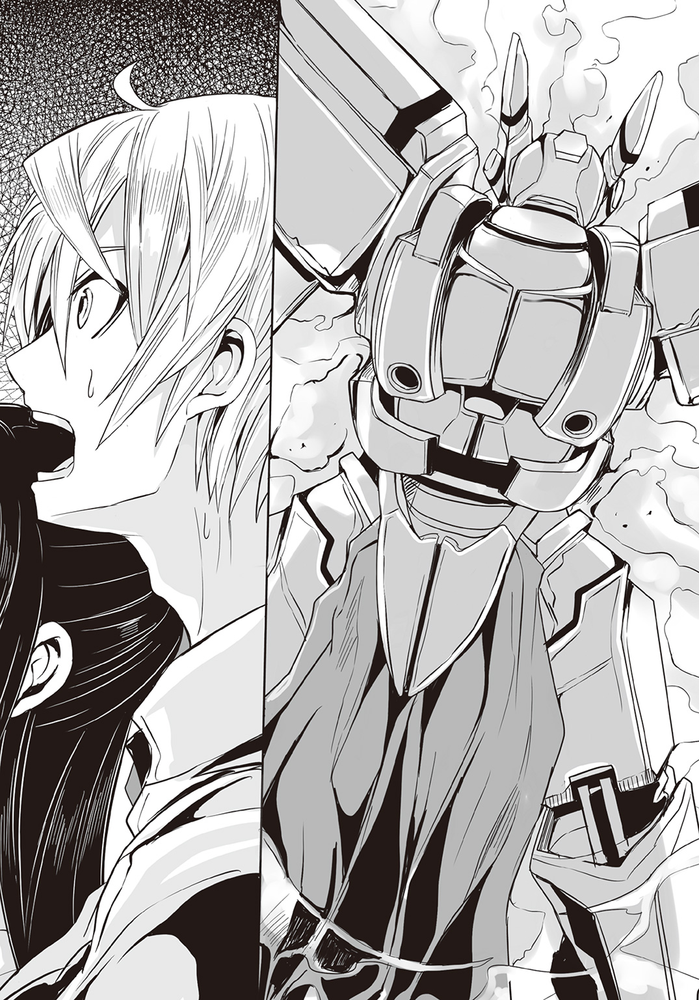
仁王立ちは微妙な均衡によるものだったか――途端〈ブレイバー〉の機体はがくんと傾き、仰向けに倒れる。連志郞は反射的にそれを〈ブリガンド〉で受け止めていた。
「............」
〈ブレイバー〉は......胸部がなかった。
直撃を喰らったらしいそこは、丸ごと抉り取られ、骨格のフレーム以外、根刮ぎなくなっている。断面部分は黒々と焼け焦げて、見るも無惨な状態であった。
そこは、恐らく操縦席が在った筈の――風間大悟がいた筈の、場所だった。
●
救援のヘリコプターと、報道関係のヘリコプターが、現場の上空を旋回している。
ローター音が重なり合い、その他の雑音と混ざり合い、夜だというのに、耳を聾する様な騒々しさだった。サーチライトが右に左にと振られて辺りを照らし出す。その中で警察官や消防署員、そして草薙機関の人間達が集まり、現場検証と後始末を開始していた。
既に〈悪魔狩り〉の――草薙機関が言うところの〈黒騎士〉の姿はない。
現れた時と同様に、何処かへと飛び去ってしまった。
そして――
「......はい。〈アドバンスド・メイル〉試作壱号機は大破――はい。え？ 操縦士ですか？ それは......はい。操縦席ごと......」
草薙機関の一人が携帯電話で報告をしている。
現場には......大破した〈アドバンスド・メイル〉壱号機が、物言わぬ銅像の如く、残されていた。
第三章
石造りの頑強な門柱と同じく頑丈な鉄柵。
斯波邸の入り口はいつ見ても日本の家屋とは思えない雰囲気を醸し出している。単に洋風というだけでなく、近隣と馴れ合おうとする意図がまるで感じられないくらい、日本の街並みから浮いている。もっとも郊外の丘の上に建つこの屋敷の周りに、他の民家は殆ど見られないのだが。
他者の訪問を拒否するかの様な威圧感すら、そこには感じられる。
そんな中で――何故か門柱に取り付けられたインターフォンだけが、他の一般住宅と同じで、不思議な印象があった。これがなければ住人の知人友人すら訪問を躊躇うだろう。訪れるのが久しぶりという事もあって、相原綾は一分近く、門前で立ち尽くしていた。
「............」
意を決してボタンを押す。
呼び鈴を模した電子音が聞こえて――数秒。インターフォンから明らかに若い女性とわかる声が聞こえてきた。確かペルヴィカといったか。この屋敷で働く外国人のメイドだ。
『お待たせ致しました。どちら様でしょうか』
「斯波連志郎くんのクラスメイトの相原綾と申します」
綾はインターフォン越しの問いにそう答えた。
カメラは設けられていない様だが、念のためにと一礼もする。
「斯波くんが何日もお休みなので、お見舞いに伺ったのですが」
連志郎はもう一週間、欠席し続けている。
このところ......綾の周辺には立て続けに変化が生じていた。
先ず沢渡夏美の死亡。
次に若槻紫織の事故死。
更に大悟と優羽の休学。
そして連志郞の不登校。
大悟と優羽は先に病欠の連絡が学校に来ていたが、その後、『療養が長引く可能性が高い』として長期の休学が申請された。この事そのものには特に不審な点はないのだが、二人が草薙機関の人間であるという事と、市内において連日の様に〈悪魔憑き〉が元となった怪物が暴れる事件が発生した事を併せて考えると、良くない想像が湧いてくる。
既に〈悪魔憑き〉の存在は――突然、街中に出現し、人々を襲う巨大な怪物の存在も含めて、公然の秘密となっている。
動画も画像もインターネット上に山ほど転がっており、政府の『そんなものは単なる噂で実際には存在しない』という見解は形骸化している。今回の事件もすぐに人々の口に上り、さまざまな噂が飛び交っていた。
そしてその中に......〈ブレイバー〉が破壊された、とするものがあった。
数日前、モノレールが二体の〈悪魔憑き〉に襲撃された事件。
モノレールの乗客は全員、奇跡的に救出されたらしいが、その際の戦闘で自衛隊の攻撃ヘリが一機撃墜され、〈ブレイバー〉もまた大破したという。ネットには何枚か解像度の低い粗い画像が何枚か出回っていたが......一見しただけでも、操縦席が在るらしき胸部が抉り取る様に吹き飛ばされているのがわかった。
戦闘機の様な、射出座席方式の緊急脱出機構でもない限り、操縦者は間違いなく死んでいるだろう。
綾は、その操縦者が風間大悟だという事を知っていた。
学校に〈悪魔憑き〉が出て亜空間に生徒達を閉じ込めた事件――その際、本人から聞かされている。〈ブレイバー〉の操縦者が大悟の他にいないという確証はないが、大悟と優羽の病欠と休学を併せて考えれば、いろいろと辻褄が合ってしまう。
綾の周囲は急に寂しくなった。
沢渡夏美から始まって、若槻紫織、風間大悟、今村優羽、と次々に仲の良かった知り合いがいなくなった。大悟や優羽は未だ死んだと決まったわけではないが、電話もメールも通じないので、安否を確かめようがない。
この上で連志郞までいなくなったら......そんな不吉な予感に背中を焦がされ、居ても立ってもいられなくなって、綾は斯波邸にやってきたのである。
しかし......
『恐れ入ります、相原様』
インターフォン越しの声はひどく冷たく聞こえた。
『連志郎様は体調を崩しておられ、面会はお断りしております。お見えになられたことは伝えておきますので、お引き取りください』
「お会いできませんか。少しでいいのですが」
綾はそう言って食い下がる。
連志郞が生きている――それが確認出来れば、その姿を見る事が出来れば、綾は安心出来るのだ。それだけでいい、本当にそれだけで。だがそんな綾の気持ちなどインターフォンの向こうの女性が知る筈もなかった。
『申し訳ございません。お気遣いのみ頂戴致します。どうぞお引き取りください』
そんな言葉の後、ぷつん、と回線の接続が切れる微かな電子雑音が、まるで終止符の如く聞こえてきた。
「......斯波くん」
綾は数歩後ずさって塀越しに屋敷の方を見遣る。
綾は以前――中学生時代にこの屋敷を何度か訪れた経験があるので、連志郞の部屋が何処にあるのかも概ね理解している。だが......窓のカーテンはいずれも閉ざされていて、中を窺う事は出来なかった。
ひょっとしたら、綾の訪問を知って彼が顔を見せてくれるのではないか、そんな事も期待してしばらく待ってはみたが、特に変化はなかった。
「......また、来るよ」
溜め息を一つついて、とぼとぼと綾は元来た道を帰り始めた。
僅かに丸められた背中、物憂げな表情――いつも校門前で元気に声かけをする、生徒会長としての彼女しか知らない者達が見れば、きっと驚く事だろう。
だが元々綾の『地』はこちらなのだ。普段は意識的に理想的な自分を演じているに過ぎない。他人の目がない場所では、こうして嫌いだった昔の......地味で、気弱で、何事にも悲観的な中学時代の自分がつい出てしまう事がある。立て続けに友人の姿が傍から消えた事で、綾はかなり精神的に弱っていた。
そう。綾もまた、まだ十代の少女に過ぎない。環境が急激に自立を、成熟を促したとしても、何処かに必ず無理が生じる。張り詰め続けた弦はいつか必ず切れてしまうものだ。
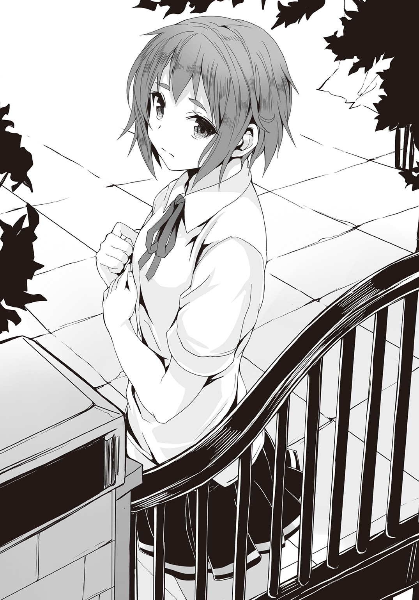
「............」
斯波邸から立ち去る綾の後ろ姿は、ただただ、年相応に無力な、少女のそれだった。
●
部屋の前に立って一度......深呼吸をする。
扉は閉ざされていた。鍵はかかっていないが、この一週間、ろくに開け閉めされていない。部屋の主人がそもそも出入りしようとしないからだ。典型的な引き籠もりの状態である。部屋の周囲すら、空気が淀んでいるかの様な気配があった。
持参した盆を片手で支えると――紫織はゆっくりと、殊更に間を開けて、扉を二度叩いた。
「斯波くん」
呼びかけてから、じっと待つ。
廊下には静寂が凝っていて、まるでこの屋敷そのものが無人の廃屋であるかの様にも錯覚してしまう。いや。実際に人間は、紫織とこの部屋の主以外は住んでいないわけだが。
良くも悪くも、この屋敷は街の中心部から離れすぎている。
紫織の暮らしていた下宿では、車の通る音や通行人の声が、窓や換気扇を通して入り込んできたものだが、この屋敷ではそれもない。
普段は意識しないが、こうしていると、世界にたった二人取り残されている様にすら感じる。和晃やペルヴィカはいるが、あくまで人形であり、生きていた頃の『残像』を封入しただけという彼等が、紫織の見ていない所でも人間の様に振る舞っているのかどうかもわからない。案外、自分の部屋では電池が切れたかの様にただじっとしているだけなのかもしれなかった。
どれ程の時間が経過しただろうか。
扉の向こうから気怠げな返事があった。
「....................................ああ」
枯れ枝がこすれるような、かすれた声だ。注意していなければ聞き逃しかねないほど小さい。紫織はもう一呼吸空けて、部屋の中に呼びかけた。
「入っていい？」
「....................................ああ」
同じ返事がある。
把手を捻ると扉は少し軋みながら開いた。
ペルヴィカが徹底的に掃除し、更には和晃が簡単ながらも『加護』や『祝福』の魔法をかけているというこの屋敷は、恐ろしく傷みが遅い。形式こそ古色蒼然としているが、まるで建てられたばかりの様で、少なくとも床が鳴ったり窓ががたつく様な事は皆無だった。
異音がするのは、恐らくこの部屋の扉だけだろう。
「............」
部屋の中は昼間だというのに暗い。明かりはついておらず、カーテンも閉め切られている。空気が淀み、湿気が肌に絡みつく様な感覚があった。
「斯波くん......」
奥の壁際に連志郞がいた。
床に直接、腰を下ろし、片膝を立てて俯いている。紫織が入ってきても眼も向けてこないし、微動だにしない。一週間前からずっとこのままだ。食事や水を口にしている様子もない。
紫織は水差しの載った盆を机の上に置いた。
「斯波くん。少しは食べないと」
「必要ない。『悪魔』に食事なんて要らない」
ひどい自虐の言葉が返ってくる。
ほぼ飲まず食わずで一週間――なのに連志郎には目立った影響が出ていない。絶食状態であるのに、瘦せた様子もないのだ。〈悪魔憑き〉の力がそれを可能にしているのかもしれなかった。〈魔神態〉の様に、疑似物質を創り上げる事が出来るその力ならば、空気中の微粒子から最低限の栄養素を生み出すくらいの事はやりかねない。
とはいえ、それは『宿主』の生命の危機を感じ取った『悪魔』が本能的にしている事だろう。連志郞に能力を行使する意志がある様には見えない。その双眸はひたすらに昏く、視線は意味もなく床に注ぎ続けられている。言ってみれば連志郞は『悪魔』という内蔵式の生命維持装置で無理矢理生かされているに過ぎなかった。
それがどういう感覚なのかは紫織にもわからない。
ただ自分なら一週間も耐えられないだろうと想像はついた。
何よりそれは、肉体維持の主導権が『悪魔』に移っている事を意味する。あるいは連志郞の自我そのものが弱ってきているのかもしれなかった。
「さっきね、綾が来てた」
少しでも連志郎の反応を引き出そうと、紫織は話題を投げかける。
恐らく連志郎と最も付き合いが長く、親しくしていたクラスメイトの名だ。
「............」
ほんのわずかだけ連志郞の眼が動く。
だがそれだけだ。彼の表情を変える事も、俯いた顔を上げさせる事も、かなわなかった。
やがて――
「会長も、君も、僕の所にはもう来ない方が......僕には関わらない方がいい」
暗く淀んだ声がそんな事を言い出した。
思わず紫織は息を呑む。それは自虐ですらない。単に思った事をそのまま口から垂れ流しているだけの台詞だった。斯波連志郞という人間の感情が枯渇しつつある証だ。
「危険......だからな」
呟きを遮る様に異音が響いた。
彼のすぐ脇の壁がひとりでに――何もないままに勝手に抉れ、爪痕の様な傷を生じさせていく。同時に連志郞の腕に塡められた腕時計型の封印具が自動的に回転、中央部の魔方陣が形を変えるのが見えた。すると壁に生じていた爪痕の成長が止まる。
封印具が暴れようとした『悪魔』を改めて抑え込んだのだ。
「............」
連志郞の、食いしばられた歯の間から、長く――そして獣じみた獰猛な吐息が漏れる。
改めて部屋を見回せば、壁も天井も床も、そして扉にも、同じ様な傷が無数についていた。軋みの原因はこれだ。
紫織は、この光景に見覚えがあった。
かつて彼女が閉じ込められていた『収容所』の部屋に生じたのと同じ現象だ。抑えきれなくなった『悪魔』の力が漏れ出して、周囲を無差別に攻撃しているのだ。連志郞が己の中の『悪魔』を抑えきれなくなってきているのだろう。
ある程度まで成長した悪魔は、封印具頼みでは抑えきれない――以前、紫織は和晃からそう説明を受けた。宿主の精神が安定していれば、比較的、封印具も効果が望めるらしいが、激しい怒りや悲しみで宿主が我を忘れれば、『悪魔』はそこに生じた隙間から顔を覗かせてくる。
他人が自分をどう見ようと我関せずの態度を貫き、常に動じる事なく我が道を行くという連志郞の態度は、勿論、生来の性格もあったろうが――封印具の効果を最大限に高めるために、意識的に装われた部分もあったのだ。
今の連志郞は落ち着いている様にも見えるが、それは表面上の事だろう。内心はひどく荒れているのが紫織にもわかった。動揺しているのだ。自分の中の怒りや悲しみを持て余し、どうしていいのか自分でもわからないからこそ、ただ、何もせず、考える事さえ放棄して、部屋の隅に座っているのだ。
原因は......大悟の死だ。
死体を目にしたわけではないが、〈ブレイバー〉の惨状を見れば、彼が生きている可能性は零だった。それは紫織も見たのでよくわかる。大悟は連志郞を――というより〈悪魔狩り〉の巨人騎士〈ブリガンド〉と、その背後にいたモノレールの乗客達を庇って、死んだ。
大悟は、学校でよく連志郞に絡んでいた。
迷惑そうにしていた連志郎だが、憎んでいたわけではないだろう。むしろ最近は話しかけてくる大悟に、連志郞が返事をする回数が増えた様にすら思う。言い争う事も相変わらず多かったが、少しずつ、彼は風間大悟という少年を受け入れ、友情と呼べる様な何かを育みつつあった様だ。
そう。大悟は連志郞の友達だった。
そんな彼を連志郞は目の前で失った。しかも自分が庇われる形で。それはつまり連志郞達を庇いさえしなければ、大悟は死なずに済んだ――連志郞が彼を殺した、と見る事も出来るという事だ。実際には大悟はあくまでモノレールの乗客を庇っただけかもしれないが、それでも彼が死んだ今、細かく問い質す事は出来ない。
戦うのは復讐のため。戦うのは自己満足のため。
そう言って憚らなかった連志郞は、自分と対極の位置にいるとも言うべき『正義の味方』の自己犠牲に命を救われたという事になる。礼を言いたくても、謝りたくても、もう大悟はいない。だから連志郞は自分の後悔も、悲嘆も、憤怒も、何処にも持っていきようがないのだ。
「............」
紫織は奇跡的に亀裂一つ入っていない窓を見る。
カーテンを開き、窓を開き、淀みきったこの空気を入れ換えたい。この牢獄の様な、いや、檻の様な部屋から連志郞を連れ出してやりたい。紫織は痛切にそう思う。
だが今の連志郞はそれを拒むだろう。
それ以上はかけるべき言葉も見つからず、紫織は水差しだけを置いて部屋を後にした。一応、少しでも栄養になるかと思って砂糖を溶かしたものだ。一口でもいいから飲んでくれたらと紫織は願った。『悪魔』の力で無理矢理生かされている様な状態は、どう考えてもまともではない。
何か、何でもいい、この閉塞した状況を変えるためのきっかけがあれば。
紫織はそれをずっと探し続けていた。変化が欲しい。いつかの紫織のように、連志郞が何もかも投げ出して、己の破滅を悄然と受け入れてしまう――その、前に。
●
地下鉄の駅を出て階段を上ると――国会議事堂の特徴的な輪郭が見えた。
東京都千代田区永田町。
この辺りは日本の政治の中心とも言うべき官公庁街だ。省庁をはじめ、公的組織の建物が建ち並んでいる区画である。この街区でテロでも起きれば、それだけで日本という国が麻痺状態に陥りかねない。一カ所に国の重要機能の殆どを集約する事の問題点と危険性は随分前から指摘されているが、未だ、国政機能の地方分散は遅々として進んでいなかった。
「利権やら何やらでがんじがらめなんでしょうけれど。戦後の平和が長すぎたのかもしれないわね――この国は」
国会議事堂を興味深げに眺めながら亜麻音は呟く。
彼女が此処までやってきたのは、しかし、国会議事堂を見るためではない。
この永田町の中には、国の組織でありながらも、表立ってその活動が報じられる事もなく、官公庁一覧にその名が載る事のないものが幾つか存在する。彼女の目的はその中の一つだった。〈悪魔憑き〉と俗称される超常能力暴走症候群......その対策を一手に担う特務機関である。
通称――『草薙機関』。
目的の建物はすぐに見つかった。表向きはただのオフィスビルにしか見えない。実際、此処はあくまで上層部の人間が詰めているだけの場所で、〈ブレイバー〉に代表される各種機器の開発や、〈悪魔憑き〉の研究については、別の場所で行われている。
草薙機関のオフィスはこのビルの上半分である。階層表示板には長ったらしい名前が並んでいるが、これはあくまで偽装だ。そもそも『草薙機関』という名前自体が公式なものではない。関係者はそれを知った上で、この呼称を使っているが。
ビルの中に入ると――正面に受付があった。
「すみません。第一管理部の蒲生をお願いできますか」
亜麻音にそう言われ、受付の女性が柔らかな笑みを浮かべる。
ただし返ってきたのは型通りの言葉だった。
「蒲生ですね。御予約はおありですか？」
「いえ。あの、娘です。ちょっと至急、父に話がありまして」
亜麻音は生真面目な表情でそう言った。
「お嬢様ですか。失礼しました。ですが、事前にお約束をいただきませんと、ご親族の方でも基本的にお取り次ぎできない決まりになっておりまして」
女性が申し訳なさそうに表情を曇らせる。
ここまでは――実は予想していた事である。草薙機関は〈悪魔憑き〉対策を担う国家機関だ。超法規的な処置をとる事も多いし、当然ながら機密事項を大量に抱えている。『収容所』など毎日の様に人道にもとる人体実験を繰り返している筈だ。親族だからという理由だけで部外者を中に入れるわけにはいかないだろう。
しかし......
「......どうしても、ダメですか？」
亜麻音は俯いて声を詰まらせる。
「お父さんに聞いてもらわないと、私............」
肩を震わせて俯き、前髪で目元を隠す。
仕上げに指先で涙を拭う仕草をしてみせると、受付嬢が動揺する気配が伝わってきた。
如何に草薙機関の関係者といえども、末端まで――受付嬢にまでその非情とも言うべき姿勢を徹底するのは難しいだろう。そもそも日本の役所は身内に甘い事には定評がある。指紋認証だ暗証番号だＩＤカードだ......と如何に厳密な管理体制を整えても、現場を取り仕切るのが人間である以上、必ず緩みは生じてくるものだ。
「私......彼と......軽はずみなことしちゃって......ホテルで............」
しゃくり上げながら亜麻音は適当な作り話を口にする。
「ちょ、ちょっと待って！ 落ち着いて！」
第一管理部の蒲生が仕事の鬼である事は――ろくに家にも帰らない事は、この受付嬢も知っているだろう。そして彼の妻が何年も前に亡くなっているという事も。
親の愛情を満足に受けられずに育った娘が、異性に代償的な愛情を求めたが、相手が悪かった――受付嬢の中ではそんな『物語』が勝手に組み上がっている筈だ。下手をすればそのまま自殺しかねない――そう判断してくれれば、後は簡単だ。
「わかったわ」
受付嬢はカウンターから出て、労る様に亜麻音の肩を抱いた。
「お父さんにお話があるのね。すぐに連絡するから」
亜麻音はこくりと頷き、しゃくりあげながら更にこう続ける。
「父には自分で言いますから......その......取り次いで......いただければそれで......」
「うん。そうね。それがいいわね」
女性は何度も頷くと、内線を繫いだ。
声を潜め、第一管理部の人間に、早口で亜麻音の父に取り次ぐ様に伝えている。見るからに焦っていた。彼女の中では一人の少女が今生きるか死ぬかの瀬戸際なのだろう。もし規則に従って追い返して、亜麻音が自殺でもしたら、一生引きずる事になるだろうし、亜麻音の父からも責められるのは間違いない。さっさと親に任せてしまうのが一番――そう考えて当然だった。
相手の年代や性別に関係なく、この手はよく効く。
亜麻音はしおらしく俯いたまま、こっそりとほくそ笑んだ。
「十階の会議室Ｃですね。わかりました」
話が通ったらしい。
受付嬢はもう一度、カウンターから出て亜麻音のもとへ駆け寄り、父のいる場所までの行き方を丁寧に教えてくれた。亜麻音はやはりしおらしい態度でお辞儀をし、エレベーターに向かう。エレベーターの扉が閉まるその時まで、受付嬢は亜麻音の方を気遣わしげに見つめていた。
鋼鉄の密室となったエレベーターの中で――亜麻音の表情が変わる。
勿論、天井近くに設置された警備用のカメラからは角度的に自分の顔がはっきり見えないのは確認済みである。既に涙は乾いている。氷の様な無表情で、彼女は次の芝居の算段を立て始めた。
やがて身体が一瞬浮く様な感覚と共にエレベーターが停止する。
開いた扉の向こうに広がる十階のフロアは、静まりかえっていた。通路は役所の中というよりホテルの廊下の様な印象だ。清潔だが生活感の類がまるでない。壁には案内のプレートが貼り付けられているので件の会議室Ｃというのはすぐに見つかった。
「亜麻音」
廊下の向こうから名前を呼ばれる。高級スーツを隙なく着こなした父が、ちょうどこちらに向けて歩み寄ってくるところだった。
謹厳実直を絵に描いた様な顔つきで、娘を見てもその表情は微塵も緩まない。仕事と家庭を完全に切り分けている――というより、家庭そのものがもう彼にとっては余剰物でしかないので、仕事の現場に家庭の事情を持ち込まれるのが、不愉快なのだろう。
とはいえ、わざわざ父親を頼ってやってきた一人娘を追い返す程、冷徹というわけでもない様だ。あるいは職場の同僚の眼を気にしただけかもしれないが。
亜麻音にとっては、どちらでも同じ事である。
父はカードキーを使って会議室の扉を開き、亜麻音を招き入れた。
「どうしても、という用事だと聞いた。幸い、少し時間ができたところだ」
二人で話すには広すぎる感のある部屋だった。
円状に組まれた机。十脚余りの椅子。左右の壁にはそれぞれホワイトボードと大型の液晶ディスプレイが埋め込まれていた。確かに会議室だ。草薙機関のそれは、当然、防音仕様である事に加え、各種盗聴対策も十二分に施されているだろう。
「どうした。話しなさい」
窓辺に寄る父。入り口に立ったままの亜麻音。
親子は部屋の端同士で向かい合う形になった。
「......〈悪魔憑き〉って、本当にいるの？」
亜麻音はまぶたを伏せ、静かにそう問うた。
「......！」
父が軽く目を見張る。
いきなりその話題が出るとは思っていなかった様だ。亜麻音はその場に俯き加減で立ち尽くしたまま、ぽつぽつと呟く様に言葉を連ねていった。
「お母さんがそうなっちゃったんでしょ。私、知っちゃったの。お母さんのこと、なんとなく覚えてたけど、最近〈悪魔憑き〉ってすごく噂になってて、調べて......お母さん、〈悪魔憑き〉になって死んじゃったのよね」
「............」
父は何かに耐えるかの様に表情を歪めたまま......しかし無言だった。
「本当は黙ってようと思ったんだけど、動画とか見たら怖くて、居ても立ってもいられなくて......」
受付でしたのと同じ様に、亜麻音は肩を震わせた。
だが父はすぐには動かない。表情も硬いままだ。さすがに草薙機関の幹部――受付嬢の様にはいかないらしかった。
だが亜麻音は焦らない。今やこの男の家族は亜麻音だけだ。その家族に真剣な様子で尋ねられればこの男はそれを無視は出来ない。そもそも彼が性格を一変させて仕事の鬼になったのも、家族を――妻を失った事がきっかけだった。それだけ彼にとって家族というものは、重い。
亜麻音の思惑は当たった。
父は机を回り込んで亜麻音に歩み寄ると、顔を覗き込んできた。
「父さんがそういう仕事をしているのも、知っているんだな」
「うん。なんとなくわかってたし、調べたらすぐにわかった」
「......そうか」
父は長く重い息を吐いた。
それから彼は手近な所にあった椅子を引いて座ると、亜麻音にも座る様に勧めた。
「これから話す事は他言無用だ。万が一にもお前が誰かに漏らせば、私もお前も、逮捕されるだろう。それくらいに重要な秘密だ。いいな？」
「......はい」
殊勝な表情を取り繕って亜麻音は頷く。
父はそれを確認すると――空中に視線を注ぎながら、何かを暗誦するかの様な、何処か虚ろな口調で言った。
「〈悪魔憑き〉と呼ばれるものが日本にいるのは本当だ。もう隠すこともできないし、いずれ公式に発表されるだろう。どういうものかは、お前も知っている通りだ。噂はほぼ正しい。怪物のような姿になり、街や人を襲う。父さんたちはそれに対処し、〈悪魔憑き〉の謎を解くために仕事をしている」
「〈悪魔憑き〉って何なの？ 人間がそうなっちゃうんでしょう？ 病気なの？」
身をすくめ、目を潤ませながら父の方を見る。気弱な女子高生を演じるのは簡単な事である。父はまるで疑う様子がない。自分の娘がどういう性格だったか......もうろくに覚えていないのだろう。そしてそれを哀しいと想う感覚は、亜麻音の方にもない。
「人間が感染する『悪魔』がいる。感染し、発症してしまった人が〈悪魔憑き〉だ。科学的な呼び方ではないが、今ではこれで通っている」
「悪魔......それが、どこかから来たの？ それとも元から人間の中に潜んでいるの？」
「わからない。悪魔がどこから来たのか、誰にもわからない」
一瞬の躊躇の後、父は――僅かに皮肉げな表情を浮かべてこう続けた。
「そもそも、地球上で生まれた存在なのかどうかも」
「え......？」
さすがにそれは亜麻音にも予想外だった。
『悪魔』が――地球外から来たとでも？
それはつまり......
「つまり、どういうことなの？ 父さん」
「一部の者の見解だが......」
そう言い置いてから父は続けた。
「そもそも〈悪魔憑き〉は近年になって突然発生した。それが病気だとすれば、その病原体はそれまで存在しなかった事になる。突然変異で生まれたか、さもなくば、何処からか持ち込まれたか――だ。降って湧いた、などという言い方があるが、本当に振ってきたのではないか、という者もいる」
「降ってきた............それは、つまり、宇宙から？」
「〈悪魔憑き〉は世界でも日本、それもある地域を中心に発生している。ならば、その地域『だけ』のなんらかの要因、元となる現象があるはずだ。それを十四年前の隕石の落下に求める者たちがいる」
「隕石の落下......」
「覚えていないか？ 私達の住む街の近くの山に、結構大きな隕石が落ちて騒ぎになった事がある。山の中に落ちたので、人的被害は出なかったが。最初の〈悪魔憑き〉が確認されたのはそれから一年後だ」
「じゃあ、その隕石に『悪魔』が？」
隕石は『悪魔』の乗り物だったという事だろうか。
随分と荒唐無稽な話にも聞こえるが――
「そうだ。あの事件で撃ち込まれた『何か』が人間に感染し、広がっているのだという説だ。宇宙からの飛来物なら地球上には存在しないものが付着していてもおかしくない。そもそも生命の起源を宇宙に求める説もあるくらいだ」
「パンスペルミア仮説......」
「......よく知っているな」
少し驚いた様子で父は言った。
「更に一部の者は、この『悪魔』の飛来は意図的なものではないかとも言っている」
「意図的？ 誰の？ いえ、意図的という事はつまり――」
何らかの目的のために『悪魔』を送り込んだ何者かがいたという事になる。
「『悪魔』とは宇宙から送り込まれた侵略兵器ではないか、そう言っている者達がいる」
「侵略兵器......」
宇宙からの侵略者。
ＳＦでは既に使い古された題材だが......
「細菌兵器というものがある」
父は眼を細めて呟く様に言った。
「直接、相手を殺す様な、銃や爆弾に比べると、迂遠ではあるが......兵器として見た場合非常に効率的で安価だ。敵地に一定量の病原体をばらまいてやるだけでいい。病原体は敵地の人間に感染し、その体内で増殖し、やがて放出され、勝手に広がっていく。真正面から戦う必要すらない。敵国の人間が病死していくのをただ見ていればいいだけだ」
「増殖......」
もし『悪魔』が父の言う様に細菌兵器と類似のものなのだとしたら。
当然ながら『悪魔』は現地で――つまりこの地球上で増殖しなければならない。だがその増殖の方法は人類が知る既存の細菌やウイルス、バクテリア等とはまた異なるものである筈だ。そうでなければとっくに人類の医学や生物学が、病原体としての『悪魔』を突き止めている事だろう。
「〈悪魔憑き〉はいずれも反社会性が強くなる。直接、罹患した人間を殺す事はないが、『悪魔』は代わりにその人間に凶暴性を与えて破壊活動や殺傷行動を行わせる。その結果としてより多くの人間が被害に遭う。彼等もまた〈悪魔憑き〉候補者となって、更に多くの――」
珍しく饒舌に語っていた父が......そこでふと何かに気づいた様子で言葉を区切った。
「......亜麻音？」
娘の名を呼ぶ彼の顔には疑念の色が滲んでいた。
亜麻音は少し『勿体ない』と感じていた。これが仕事場での父の姿なのだろう。こんな情熱的な物言いの父は、亜麻音の、本来の人格の記憶を辿っても出てこない。貴重なものを見られた気がしたのに、彼が我に返ってしまったのは、残念だった。
もうこれで最後だというのに。
「お前は............本当に亜麻音か？」
「何を言っているの、父さん？」
亜麻音は小首を傾げてそう応えた。
その反応は、一介の女子高生として概ね正しかっただろう。だが父の中に生まれた疑念を払拭するには至らなかった様だ。父の顔に戸惑いと――そしてゆっくりと恐怖の表情が広がっていく。
そろそろ頃合だ。亜麻音は立ち上がり、父ににっこりと笑いかけた。
「ありがとう、お父さん」
亜麻音の影が起き上がる。
室内に在りながら、直射日光に照らされて出来たかの様な、異様に濃い影だった。それは動かない亜麻音とは関係なく、ひとりでに腕を広げて壁から、そして床から剝離し、その存在を主張した。
「............」
父は言葉を失って凍りついていた。
頭は良いのに、愚かな男だ――と亜麻音は想う。〈悪魔憑き〉事件の被害者が〈悪魔憑き〉になる可能性が高い、というのは既にデータとして出ていた筈だ。ならば母が〈悪魔憑き〉になって死んだ亜麻音も例外とするべきではない。もし精密検査をしていれば早々に亜麻音が〈悪魔憑き〉だと判明していたかもしれなかったが、父は最初から『そんな筈はない』と可能性を検討すらしなかった。
「本当にありがとう。そして、さようなら。お父さん」
不意に、部屋を下から大きな震動が襲った。
父が体勢を崩し、膝をつく。亜麻音はそれを平然と見下ろした。
「なにが......」
非常警報がけたたましい音で鳴り響く。父の胸ポケットからも警告音がしていた。恐らく草薙機関の携帯端末だろう。〈悪魔憑き〉出現の警報でも届いたに違いない。
だが残念ながら遅い。遅過ぎる。そして意味もない。
「ああ。私の仲間よ。一人ずつ紹介している時間はなさそうだけれど」
艶然と笑って亜麻音は言った。
先の震動は〈フォスファー〉の〈悪魔憑き〉達がこの草薙機関本部を急襲した結果である。恐らくあの人の善い受付嬢は真っ先に殺されているだろう。
「お前は......お前は......！」
「ありがとう。お父さん。お父さんのおかげで大方の謎は解けたわ。すごくすっきりした気分。私はどこから来て、どこへ行くのか。何を目指すべきなのか。ずっと気になっていたのよ。大好き。だからお礼に、お父さんは私の手で殺してあげるね？」
亜麻音の『影』が腕を伸ばして、父の首を摑む。
次の瞬間、長身の父が、軽々と持ち上げられていた。父は足をばたつかせ、自分の首に食い込む『影』の指を剝がそうと試みるが、人間の力で〈悪魔憑き〉のそれを――〈魔神態〉に準じる力をどうこうできる筈がない。
びちりびちりと肉の千切れる音がする。
父が大きく痙攣し、吐血――その爪先からも血が滴り落ちた。首の骨が折れる前に、肉がまず握り潰されてしまったらしい。頭部に血液を送る太い血管が潰れてしまえば、程なくして脳細胞も崩壊を始める。
「痛い？ 苦しい？ 当然よね。素敵」
恍惚とした表情で、死につつある父を見つめる亜麻音。
次の瞬間、一際大きく布を引き裂く様な音がして、父の頭が人形の様に垂れ下がる。文字通りに皮一枚で繫がっているだけの状態で、首の内側を通っていた血管も神経も骨も全て粉砕されて泥の様になっているだろう。
頰についた血を指で拭って――舐める。
父の――恐らくは不器用ながらも亜麻音を愛していたであろう男の、断末魔の、血だ。それは亜麻音にとって特別なものである筈だった。じっくりと舌の上で、それを味わってみる。
だが――
「............」
短く溜め息をつく亜麻音。
舌の上に広がるのは、何の感慨も伴わない、単なる血の味だった。
●
頭上を自衛隊と警察のヘリが低い高度で飛んでいく。
報道関係のヘリも集まりつつある様だ。永田町におけるテロは各方面に大きな衝撃を与えていた。しかもそれは現在進行形なのだ。
美沙紀は窓の外を飛ぶ様に流れ去る官公庁街の風景を睨みつつ、更にアクセルを踏み込み――電話回線の向こうの草薙機関関係者に問うた。
「それで、生存者は？」
美沙紀の携帯端末は無線でナビゲーション・システムと、カーオーディオに繫がっている。ハンドルを握ったままでも、とりあえずのやりとりは出来た。
『避難できた人はいます。けれど、人数や名前の確認はまだできません。機動隊もとても突入できる状態ではなくて救助もままなりません』
「連絡も取れないんですか？」
ナビゲーション・システムの画面では、道路のあちこちが赤く染まっている。封鎖中、もしくは渋滞中の表示だ。一応、緊急車両を示すパネルはダッシュボードに出しているが、なかなか現場に近づけない。もっとも、美沙紀一人が現場に辿り着いたところで、状況を変える事が出来るとも思えなかったが。
『一部の部屋に立てこもって抵抗している人たちがいます。携帯はつながるので、できないことはないですが......つながらなくなった人もいます』
相手の声は絶望に濁っていた。
〈悪魔憑き〉の〈具現体〉による草薙機関本部の襲撃。
美沙紀に一報が届いたのはつい先程の事である。
本部が入っていたビルは複数回の爆発に見舞われ、あちこちから煙を噴いている。火災も発生している模様だ。一階のホールは〈具現体〉に占拠され、出入りは不可能。消防も近づけない。機動隊と自衛隊が現場を封鎖して取り囲んでいるが、重火器を使用するわけにもいかず、手をこまねいている。
（とうとうやられた）
連絡を受けて美沙紀が真っ先に思ったのは、これだった。
突発的に発生し死と破壊を撒き散らす〈悪魔憑き〉関連の事件は脅威だが、草薙機関としては、あくまで『災害』や『事故』に近い認識だったのだ。被害は深刻だが、あくまでそれは一過性のものだと考えられていたのである。当然ながらその対処の姿勢は伝染性の病気に対する防疫戦略と似た様なものになる。
だが〈悪魔憑き〉は病気であると同時に、罹患した患者の俗称でもある。
相手は人間だ。少なくとも人間だった者達だ。知性がある。ただ一方的に狩られるだけの状況に甘んじている筈がなかったのだ。草薙機関が自分達の天敵だと認識すれば、何らかの方法で連絡を取り合い、組織化して逆襲してくる可能性はあったのだ。
以前、市内の五カ所で同時に〈具現体〉が出現する事件があった。先日は二体の〈具現体〉が揃ってモノレールを襲った。〈悪魔憑き〉が組織化され集団行動を始めている――その兆候は確かにあったのだ。
だが草薙機関は対応方針の変更に手間取った。超法規的組織といえども、手続きが最優先される役所である事に変わりはない。特に現場に出て〈具現体〉の脅威を肌で感じる事のない上層部は、考えが硬く、組織体制を含めた根本的な見直しに手間取った。
そこに今回の襲撃である。
しかも〈悪魔憑き〉達は明確に戦術を以て攻撃を仕掛けてきた。
市民に紛れて可能な限りに草薙機関本部に接近し、突然、〈具現体〉を出して破壊活動を開始する。これでは事前に防ぎようがない。永田町は日本の政治の中枢とも言うべき場所であるが、その警備はあくまで警察レベル――武器といえば拳銃か小銃が主体で、重戦車にも相当する戦力の〈具現体〉に対抗できる様なものではない。
相手が建物の中に立て籠もってしまえば、尚更――たとえ重火器が到着しても、それを使って人質ごと吹き飛ばすわけにもいかない。官公庁舎が密集している地域なので、そもそも威力の大きな兵器を使うのも難しいのだ。
更に......こういう時に最も効果的である筈の、対〈具現体〉用制圧兵器〈ブレイバー〉を草薙機関は失った。あるいは〈ブレイバー〉を運用する特別対応班を狙ったあの襲撃も、今日のための下準備だったのかもしれない。
そもそも......草薙機関は組織としての〈悪魔憑き〉を知らない。
指導者がいるのか。いるとすればどんな人間か。組織の構成人員はどれくらいで、経済的な後ろ盾があるのか。あるならば普通のテロ組織と同様に、能力だけでなく武器を使ってくる可能性がある。日本という国を仮想敵国と目している外国が、彼等を支援している可能性もある。更に――〈悪魔憑き〉達を兵士として見た場合、練度はどの程度で、士気は高いのか低いのか。
そんな『敵』に関して知っておくべき情報を、まるで把握していない。
これでは勝ち目などある筈がない。
草薙機関と〈悪魔憑き〉達との『戦争』は開始早々に決着がつきつつあった。
●
眼下では赤色灯があちらこちらで回転し、何十台という警察車両や消防車両が集まってきているのが見えた。辺りには警報音が入り交じり絶え間なく響き渡っている。更にそこへヘリの爆音が降ってきて騒然たる空気を醸し出している。頭上に眼を転じれば警察と、自衛隊と、そして報道の機体が飛び交う姿を見る事が出来た。
「......頑張るわね」
草薙機関本部――そこから少し離れたビルの屋上で亜麻音は現場を俯瞰していた。
詰めかけた車両の間を、健気に走り回る人々の姿が見える。警察官。消防団員。そして背広姿の者達は公安か、あるいは草薙機関の人間か。
草薙機関本部の入っていたビルは既に半壊状態である。
あちこちの窓から煙を噴き出し、壁面には何カ所か大穴が開いている。恐らく後何度か強い力が加われば倒壊が始まるだろう。
既に襲撃役の〈悪魔憑き〉達は煙に乗じて現場から逃走している。正確に数を数えたわけではないが、草薙機関本部壊滅は達成できたと、撤退を亜麻音が勧めたのだ。情報や機材は何処かにバックアップがあるかもしれないが、根本的な構成要素――頭脳たる上層部の人員が半減すれば組織は壊滅したも同然である。これ以上、籠城を続けても亜麻音達の側に得られるものは何もなかった。
ただ――
「......ふふ」
亜麻音の唇から笑みがこぼれる。
ビルの入り口は開始早々に破壊した上、瓦礫でふさいだが......既に重機と人力で即席のバリケードは突破された様だ。今は消防隊と救急隊が次々に駆け込み、消火と救助を続けている。
担架が運ばれては、すぐに誰かを乗せて出てくる。その中で生きているのは何人くらいだろう。いちいち数えていなかったが、半分も生きていれば上々ではなかろうか。
五割の確率で遺体を運ぶ仕事を、彼等はせっせとこなしているのだ。その様子はまるで無心に餌を巣に運ぶ蟻の列の様にも見えて、ひどく愚鈍で哀れだった。
「見てて楽しいのか？」
「ええ。悪くないわよ」
背後からかけられた声に亜麻音は笑顔でそう言った。
彼女の背後には一人の〈悪魔憑き〉が自身も緩い笑顔を浮かべて立っている。尋ねてはみたものの、彼自身がこの状況に愉悦を感じているのは間違いない。あるいは......いつも醒めた表情を浮かべ、他の〈悪魔憑き〉達からも一歩引いた所に居る様な亜麻音が、今ははっきりと笑っているのが、珍しく思えたのかもしれない。
「本当......楽しいわ」
運び出された遺体にすがりつく人が見える。泣き叫び、地面に崩れる者。変わり果てたビルを見上げて呆然と立ち尽くす者。野次馬の中にもひそひそと言葉を交わし、不安を露に身を寄せる者たちがいる。
亜麻音は快感に身を震わせる。ぞくぞくする。自慰行為でも此処までは興奮しなかったし、此処までの快楽も得られなかった。今はただ、哀れな人間共が藻搔くのを見ているだけだというのに、この場で達してしまいそうなくらいに、気持ちがいい。
「そうね。そうなのよ。そういう事なのね」
亜麻音は父との会話を思い返しながら言った。
細菌兵器。勝手に増殖し敵地を覆い尽くす。
（もし......私達の『悪魔』が何者かの持ち込んだ侵略兵器だったとしたら）
ＢＣ兵器、等とひとくくりにされる事も多いが――細菌兵器の最大の特徴であり、化学兵器と違いは、一旦、増殖が始まり爆発的感染拡大が始まれば、追加的に戦力や物資を投入せずとも、勝手に敵を葬ってくれるという点だ。
もし『悪魔』が細菌兵器の様な考え方の兵器なのだとして。
その場合には現地で増殖を――『悪魔』それ自体が繁殖をする必要がある。
だが〈悪魔憑き〉同士が性交をしても恐らく生まれてくる子供は単なる人間である可能性が高いし、そもそも、〈悪魔憑き〉達は性交に対する欲求が乏しい。破壊や殺戮に対する欲求の方が遙かに強いくらいで......〈悪魔憑き〉はどうやって増えるのか、その基本構造がよくわからなかった。
しかし......
「たまらないわ。何度でもイケそう」
そう言って喘ぐ亜麻音。
「これが私達の繁殖なのね......」
「......なに？」
「『悪魔』本体が何なのかはわからない。仮説はあるけれど確証がない。けれどこれだけは言える。そう、まさしくこれは『悪魔』なの。人間の悲劇、絶望、憎悪、悲しみ、そういった感情からつけられた心の傷を苗床にして芽吹くの。見て御覧なさい。あの中にも『悪魔』の種を宿した人間がいるわ。確実に！」
指差した先で、消防団員に助け出された女性が転倒するのが見えた。
その女性は気持ちの糸が切れたのか、そのままアスファルトにうずくまって動かなくなってしまう。消防団員が彼女の体を揺すり、励ますが、彼女はその手を邪険に払いのけてしまった。
彼女の胸を満たす絶望と恐怖が目に見えるようだ。亜麻音にはわかる。あれこそ極上の苗床だろう。どこにいるかわからないが、『悪魔』が見逃すはずはない。
「そうして成長した『悪魔』は寄生先の人格を乗っ取り、暴れさせ、さらに悲劇を生み出して苗床を増やしていくのよ。私たちが今、行った事が、いえ、こうして殺し、壊し、滅ぼし続けてきた事そのものが、私達の、繁殖。ここから絶望の輪が広がり、また新たな苗床を生み、どこまでも拡大していく。ああ、本当に、本当に、なんて酷いのかしら！」
そのために『悪魔』は〈悪魔憑き〉達に快楽を与える。
生めよ、殖やせよ、地に満ちよ......そう命じるかの如く、破壊と殺戮に〈悪魔憑き〉達が勤しむ様に、性交に優る快感を与えてくれる。
亜麻音は、ようやく自分達という存在に納得がいった。
不自然どころか、恐ろしく合理的だ。
「......ふふ......ふふふふ......」
うっとりと、亜麻音は唇を舐めた。
想像するだけで血が騒ぎ、甘美な感覚が押し寄せる。〈悪魔憑き〉となって以来、ずっと満たされなかった亜麻音だが、ようやく此処に辿り着いた。この先、人々の絶望とともに亜麻音の悦びはどこまでも続いていく。人類を滅ぼし尽くすのでもない限り、〈悪魔憑き〉達の繁栄は約束されたも同然である。
「ふ......ふふ......ふはっ......はっ......はははは......ははははははははははは！」
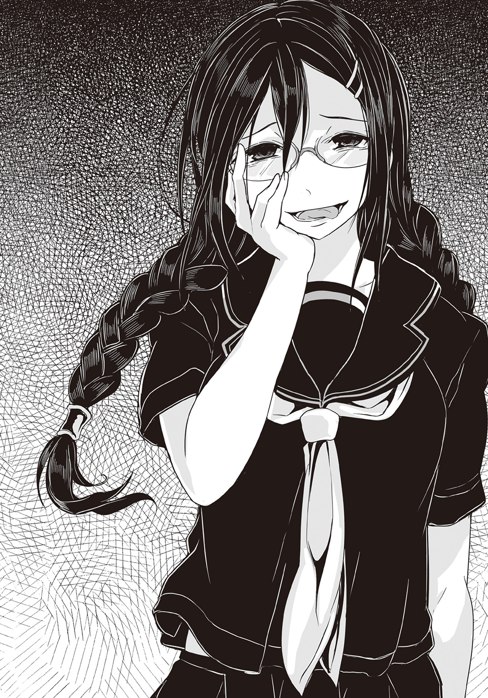
急速に膨れ上がる愉悦。
それが自身の感情なのか、それとも自分の中の『悪魔』のものなのか亜麻音には区別がつかない。別にどちらでもいい。自分達の存在理由がわかった今は、もうこの快楽に身を委ねるのみだ。
甲高い哄笑が響き渡る。
さながらそれは――地獄の門が開いた事を高らかに告げる、鐘の音のようだった。
●
モニターを見上げたまま、和晃は微動だにしなかった。
こうしていると、本当に単なるぬいぐるみの様である。タオル生地の顔に表情はなく、ボタンの目は無機質に映像を映しているだけに見えた。
だが――
「やりやがった」
呟く声には苦いものが混じっていた。
和晃の傍らに控えていたペルヴィカが、リモコンで画像を調整し、一部を拡大する。映っているのは手酷く破壊され、炎上中のオフィスビルである。その上層階に草薙機関の本部が置かれていた事を、和晃は知っていた。
既に犯人の姿はないが、結果から推測するのは簡単な事だった。こんな事が出来るのは......こんな事をしでかしてしまうのは〈悪魔憑き〉だけだ。恐らく複数で襲撃し、内部から破壊活動を行ったのだろう。
続けて映像は淡々と、様々な角度からビルを映し出す。
テレビで流れているニュース映像とは全く違うアングルだし、テロップもなければアナウンサーの解説もない。だからこそ記録映像じみたそれは、現場の惨状がより強調されている感があった。
和晃が放っている人形達の『眼』が捉えた映像である。
「集団行動、情報収集、作戦立案、そして的確な作戦日時の選択と撤退......誰か頭の良い奴がいるな」
「......はい」
「恐らくこれで奴等は勢いづく......」
モノレール襲撃事件で〈ブレイバー〉が破壊されたことは和晃の耳にも入っている。大破した〈ブレイバー〉の映像も見た。あの損傷で操縦者が無事であるとは考えられない。
草薙機関としては、代わりの機体や操縦者を急遽用意しようとするだろうし、準備はしていただろうが......〈ブレイバー〉があくまで実験機だった事を考えれば、実戦配備出来るのはまだ先の事だろう。そして本部の壊滅でそれは更に遅れる事になる。
そして〈悪魔憑き〉はこのまま勢いづく。
今回の草薙機関本部襲撃の成功を以て、彼等は自分達がどういう状況であれば好き勝手に暴れられるかを学習しただろう。開けた場所でただ暴れるだけであれば、攻撃ヘリなり戦車なりの波状攻撃で斃されてしまうが、人口密度の高い場所、もしくは屋内でならば、そうした兵器が使えず、対策は後手に回らざるを得ない。政府が手間取っている内に、暴れるだけ暴れて後は〈魔神態〉を消して大衆に紛れてしまえば、いい。
そしてそうなれば......今回の集団のみならず、今まで徒党を組む事なく一人で潜伏していた〈悪魔憑き〉も呼応して姿を現すだろう。
被害は拡大し収拾がつかなくなっていく。
国民の不安も増大するだろう。国の中枢とも言うべき永田町が襲撃されたのだ。次に何処が襲われるかわかったものではない。そしてそこに〈魔神態〉を斃せるだけの戦力が即座に急行できるとは限らない。多くの街は〈悪魔憑き〉に対して無防備なまま、蹂躙されるのみだ。
かつてこの街で起きた、初めての〈悪魔憑き〉事件。連志郎や葵が巻き込まれたあの惨劇が、どこか別の街でもくり返されることになる。
和晃は大きく溜め息をついた。いや。実際にはそういう仕草をしただけだが。
身体は人形になっても、生前の癖は消えないし、狂おしい程に感じた無力感や後悔の念もまた忘れたりは出来ない。
「ペルヴィカ。この映像だけどな」
「連志郎様のお部屋には、すでに転送しております」
優秀な助手にしてメイドの少女は、主人の意図をすでに汲んでいた。
「ですが――」
「わかってる」
今の連志郞に立ち上がる気力があるかどうか。
彼が大切な者を失うのは勿論、今回が初めてではない......むしろ何度となく経験してきているが、誰にでも限界というものはある。折れた針なら元に戻せばいい。だが何度も折り曲げられ続けた針金は、いつか、耐久限度を超えて破断する。
「けど、もう、お前しかいねえんだよ、連志郞」
魔法使いの魂を封入されたぬいぐるみの熊は、前足で悔しげに椅子の肘掛けを叩いた。
●
大都市の真ん中で高層ビルが炎と煙に包まれている。
必要以上の臨場感に溢れたその映像を、紫織はただ呆然と見つめていた。
「これ......」
ニュース映像ではない様だが、ただ情景を映すだけの素っ気ない画面は映画の類とも思えない。恐らくは和晃の人形の眼から送られてきた映像なのだろう。
連志郞の部屋の壁には大型の液晶モニターが備え付けられている。
録画機器が複数接続され、更にはパソコンも繫がれていて、脇の収納棚にはアニメのＤＶＤがずらりと並んでいた。普段は連志郎が趣味を満喫するために使う機材なのだろう。
連志郞が部屋の一番奥にいるお陰で、『悪魔』の爪痕はまだモニターや機材の所にまでは広がっていない。だがモニターの電源が先程勝手に入った時には、紫織も驚いた。
しかもそこに映し出されているのは、衝撃的な映像である。
「これって............〈悪魔憑き〉のしわざ？」
「......だろうな」
壁際に座ったままの連志郎が暗い声で答える。
無気力に床の一点を見つめ続けていた彼だが、さすがにこの映像を無視することはなかった様だ。もっとも少し顔を上げただけで、それ以上はまるで動く様子を見せない。光を失ったその眼は、ただ映像の方を向いているというだけで、そこには何の感情も顕れてはいなかった。
「............斯波くん」
そんな連志郞を振り返り――そして一瞬の間を置いてから紫織は言った。
「行かなくてよかったの？」
躊躇したのは、言うべきかどうか迷ったからだ。
紫織は連志郞に危険な事をしてほしくはなかった。復讐のためだけに生きて戦い続ける人生を送ってほしくはなかった。だから連志郞が〈悪魔憑き〉事件を目の当たりにしても動こうとしないのは、本来、喜ぶべき事なのかもしれないと思ったのだ。
だが......
「......どこへ？」
虚ろな声がそう問うてくる。
「どこって......この映像の場所。〈悪魔憑き〉が......暴れていた場所」
どうやらもう〈悪魔憑き〉達は立ち去った後らしいが。
「......何のために？」
「......それは」
言葉に詰まる紫織。
連志郎と目が合った。濁った沼の様だと感じ――背筋に寒気を覚えた。
確かに連志郞は無口で無愛想で感情を露にする性格ではない。だが今の彼の反応の鈍さはそれとはまた異なる。気力というものを根刮ぎ失って、絶望しきった者の眼を、彼はしていた。
そう。かつての紫織の様に。
「......僕が行ったところで、何も変わりはしない」
こぼれ出た声は、聞き取るのが精一杯だった。
それは本当に連志郎が――いや人間がしゃべったのか。紫織は耳を疑う。陰々滅々としたそれは呪詛の様だった。
薄暗い部屋の中に、さらに濃く暗い影が生じる。紫織の目には、それが連志郎の体にまとわりついてどこかに引きずり込もうとしているようにも見えた。
「この状況で〈ブリガンド〉一体で何ができる？ 〈魔神態〉をいくらか仕留めることがせいぜいだ。どうせ連中はすぐに湧き出てくる。ビルは崩れるし、火事も止められない。僕が行こうが行くまいが、結果は同じだ」
自身で気づいているのかどうか......彼の発言は既に復讐者のそれですらなかった。
「でも......」
「それでも行けと？ 何のために？ それこそ――」
自虐とも嘲笑ともつかない表情が彼の顔を過ぎる。
「『正義』のため――か？ 子供向け番組のヒーローの様に？」
「............」
紫織は唇を嚙んだ。
悔しい。何がと問われても答えられないのだが、無性に悔しかった。
ヒーロー。連志郎が嫌い、否定し続けてきた言葉だ。
確かに、今こそヒーローの出番だろう。これがアニメや特撮の世界であるならば、何処からともなく『正義の味方』が颯爽と現れて、悪を懲らしめ、人々を救い、そして現れた時と同様、何処かへと去って行くのだろう。
だがこれは残酷で情け容赦ない現実だ。
確かに連志郞が繰り返し主張していた通り、そんな都合のいい存在はいない。
「この世にヒーローなんていない。そんなご都合主義の権化がいる筈がない。何も見返りを求めず、誰かの危機には必ず駆けつけ、身体を張って戦って、名も告げずに去って行く――そんな奴、いない。いる筈がない。いたとしても、長生きなんて、出来ない」
「斯波くん――」
「『正義は必ず勝つ』？ そんなの幻想だよ。ヒーローだって死ぬ。殺される。死んで何もかもが無駄になる」
連志郞は吐き捨てる様にそう言って――
「――風間の、様に」
「斯波くんッ！」
――ぱんっ。
乾いた音が陰鬱な部屋の空気を揺らした。
「............」
連志郞が眼を瞬かせる。
だが彼の頰を平手で叩いた紫織の方がむしろ驚いていた。一瞬前までそんな気など全くなかったのに――大悟の名が出た途端、咄嗟に手が出てしまったのだ。
謝らねば。今の連志郞は大悟の死で落ち込んでいる。そんな彼に暴力を振るってどうするのだ。今紫織がすべき事は彼を慰める事であって――
「じゃあ、じゃあ、斯波くんは」
しかし意に反して彼女の口は勝手に連志郞を責める言葉を紡いでいく。
「あの人達のやってる事も無駄だって言うの!?」
「あの人......達......？」
呆然と呟く連志郞。
紫織はモニターを指さして叫ぶ様に言った。
「あの人達こそヒーローでしょう!?」
映像は恐らく和晃の人形が見たものをそのまま映し出している。ニュースの映像とは異なり、視聴者への『配慮』など全くない。ただただ現場を克明に――ありのままに映し続けている。そこには原形をとどめぬ程に破壊された遺体も、大量の血痕も、はっきりと見る事が出来た。
凄惨で眼を背けたくなる様な――しかしこれが現実だ。紫織も見ているのは辛い。焼け焦げた遺体を見た時には吐き気すら覚えた。
だが......映っているのは、それだけではなかった。
異臭に満ちた現場の空気を直に吸い、惨状を目の当たりにし、それでもなお、救助活動に走り回る人々の姿がそこにはあった。
消防団員。警察官。自衛隊員。あるいはたまたま現場に居合わせただけの一般人すら混じっているかもしれない。中には自身も怪我をしているのに、瓦礫の下の怪我人を助けようと、血だらけの手を動かしている者の姿もあった。
それは――
「それとも斯波くんは、あの人達がヒーローじゃないって言うの？ じゃあ、あの悲惨な現場で、誰かを助けようとしている人達を......他になんて呼べばいいの？ 戦って殺すだけがヒーローなの!? 斯波くんはヒーローを何だと思ってるのよ！」
未だ火は消えていない。建物もいつ崩れるかわからない。あるいは未だ怪物が何処かに潜んでいるかもしれない。それでも指をくわえて見てはいられない。助けを求める人がそこにいるとわかっているからだ。悲鳴や嗚咽を聞いて駆けつける――その行為に空を飛ぶ超能力も岩を穿つ超能力も必要ない。
必要なのはただ――
「......お願いよ」
叫ぶだけ叫んだせいか......胸の内で激情が萎んでいくのがわかった。
連志郞の前に膝をついて、項垂れる紫織。
「大悟くんの事、無駄だなんて言わないで。彼は貴方を助けてくれたわ。彼は貴方に命をくれたのよ――貴方が、私にそうしてくれた様に」
「............」
「無駄なんかじゃない、無駄なんかじゃないよ、絶対に、それだけは、ないよ、ちゃんと『今』に繫がってるよ......！」
映像に映る彼等の姿は――かつての連志郞でもあった。
妹を助けるために、両手を血まみれにしながらも必死に瓦礫を押し退け続けた幼い『正義の味方』......彼は結局、力及ばず妹の命を救う事は出来なかったけれど、その時の悔恨が今の連志郞を形作り、そして〈悪魔狩り〉として彼は何人もの人を救う事になった。
葵の死は悼むべき事だろう。
だがそれすらもきっと、無駄なんかではない。
「......でも......僕は......葵を」
妹を助けられなかった。
力及ばず、絶望に塗れたまま死なせた。
一時の希望を与えるために噓までついた。
それが――彼の罪。『復讐者』の呪いだ。そしてそれを解ける唯一の存在はもうこの世にいない。和晃によれば『人形』にする事も出来ない程に、完膚なきまでにその魂は消滅してしまったのだという。
だから......
「『お兄ちゃんは噓つきじゃない』」
「............」
驚きの表情で連志郞は紫織を見つめた。
その端正な顔が呆けた様にすら見えるのは......紫織の口にした一言が、如何に強い衝撃を彼に与えたかを物語っていた。
「お願い、斯波くん」
腕を回して連志郞を抱き締める。
「呪いを解いて。ヒーローなんていない。自分はヒーローなんかじゃない。そうやって貴方を縛りつけているのは、貴方自身なの。妹さんがかけた呪いじゃないのよ。貴方が、貴方にかけた呪いなのよ」
「......僕が......」
「どんなに辛かったか、苦しかったか、私には想像しかできない。でも、その事で斯波くんが自分自身を傷つけているのは見てられないの。貴方が貴方を傷つけても、誰も救われないよ」
「......僕は、誰も救ったりしな......」
「救われてる。私が」
きっぱりと紫織はそう言った。
「ヒーローが嫌いでもいい。正義の味方なんて名乗らなくていい。けれどそれでも」
抱き締めた連志郞の身体は――見た目よりもずっと逞しく、そして思った以上に熱かった。彼はまだ『死んで』はいない。彼の中の『正義の味方』はきっと、ずっと眠ったままだったのだろう。いなかったのではない。妹の死に傷ついて、疲れ果てて、目覚める事が出来なかっただけだ。
だから今――呼び起こさねばならない。
思い出してもらわねばならない。
彼を抱き締める腕に力を込めて紫織は言った。
「私のヒーローは......貴方だよ」
連志郎の鼓動が聞こえる。彼の生きている証が伝わってくる。
紫織の鼓動は届いているだろうか。早鐘の様な――この鼓動は。
「............」
ふと身体を離して連志郞の顔を見る。
彼は――既に俯いてはいなかった。眼に淀んでいた仄暗さももうない。むしろ子供の様にその双眸は澄んでいる。あどけないとさえ言えるその顔に、年相応の、戸惑いと気恥ずかしさが浮かんでいる。紫織は愛しさがこみ上げてくるのを感じた。
（こんな顔もできるんだ）
紫織はふっと微笑む。
ようやく――本当にようやく連志郞の素顔に触れた気分だった。
気持ちの昂ぶりのままに紫織は改めて顔を近づける。連志郞は逃げなかった。互いの吐息が頰に触れ、それでもまだ遠いと感じて紫織は更に彼に近づいた。
唇と唇が触れ合う。
そのまま紫織は――躊躇いがちに掲げられた連志郞の腕の中に自らを委ねた。
●
床を這う重低音が店を、そして体を揺さぶる。
誰かがジューク・ボックスを修理したらしかった。破壊と暴力の使徒である〈悪魔憑き〉も、『勝ち戦』の後は気分がいいのか、少しは働く様だ。
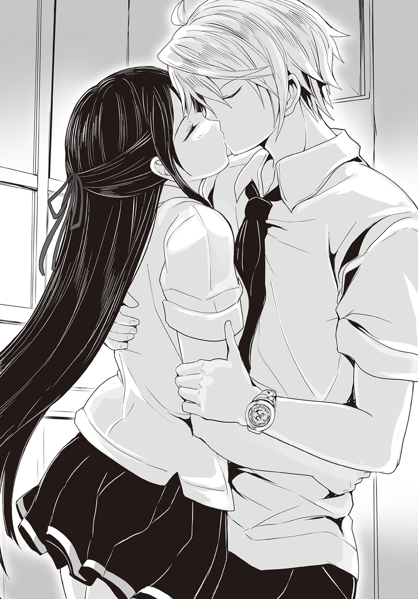
「............」
例によってカフェオレを楽しみながら、亜麻音は小さく苦笑する。
〈フォスファー〉のアジトは、照明が灯され、男女が入り乱れて大騒ぎしている。手には思い思いのアルコールを持ち、派手にグラスをぶつけ合っては嬌声を上げていた。部屋の隅では裸になって絡み合っている連中もいる。『暇潰しにもならない』筈だが戦勝気分の勢いに乗っての行為なら、悪くはないという事だろうか。乱痴気騒ぎとはこういうことを言うのだろう。
「やるべきことはわかった」
誰に言うでもなく、カフェオレのカップに視線を注ぎながら亜麻音は呟いた。
「悪意と悲劇と絶望の再生産。人間が絶望に沈めば沈む程、私達は満たされ、増えていく。倦めよ、殖やせよ、血に満ちよ――なんてね」
珍しく冗談めいた事を言いながら亜麻音は笑った。
ただ......
「けれど......」
周囲に悪意を撒き散らし、悲劇と絶望を生み出していく事が『悪魔』の、そして〈悪魔憑き〉達の繁殖なのだとしたら。
憎悪、悲嘆、憤怒、そうしたものと真逆の感情を人々の間にもたらす者は〈悪魔憑き〉達の天敵になり得る。
「〈悪魔憑き〉の数――」
草薙機関の資料で見た折れ線グラフ。
水平から下降に転じた〈悪魔憑き〉の数。
あれがもし正確な数字だとしたら――
「......『ヒーロー』......」
それこそが亜麻音達の繁殖を邪魔する本当の『敵』だ。
「邪魔者は排除しないとね。人間だって危険な伝染病を撲滅してきたんだもの。私達もそれを見習わせてもらうわ」
人間そのものは『悪魔』の苗床として必要だ。人類を滅亡させる必要はない。
だが人類はあくまで〈悪魔憑き〉達にとって繁栄のための苗床に過ぎない。人類は〈悪魔憑き〉によって管理されるのが理想的だ。夢を見ず。望みも持たず。ただ『悪魔』を育てるためだけに生存を許されるくらいでちょうどいい。
希望は邪魔だ。
だから取り除かねばならない。
「さて、どうしてくれようかしらね？」
亜麻音は小さく唇を舐めた。
彼女の脳裏には一人の少年の顔が浮かんでいた。端正な顔立ち。特徴的な銀髪。未だ確定的な証拠は得られていないが、十中八九もう間違いない。
〈悪魔憑き〉を倒す『ヒーロー』......〈悪魔狩り〉。
片割れの風間大悟は始末した。残るは一人。
斯波連志郎をどうやって血祭りに上げようか――亜麻音は、まるで恋人を想うような気分で考えを巡らせていた。
●
頰を照らす陽光の暖かさで眼が覚めた。
瞼を開いて瞬きを二度ばかり。微睡みはなく、眠気は綺麗さっぱりと剝がれ落ちて......連志郞は静かに天井を見上げた。
きちんとベッドで寝たのは何日ぶりだったろうか。壁際に座って一日が過ぎていくのをただ感じているだけの状態とは全く違う。全身にうっすらと食い込んでいた疲労がぬぐい去られているのを連志郞は感じた。
やはり自分は疲弊していたのだろうと思う――肉体というよりも精神が。
起きていてさえ覚めない悪夢の中にいる様な気分だったというのに、昨晩は夢すら見なかった。ただ眠っただけだというのに、ここまで劇的に回復するのには驚いた。
「............」
身を起こそうとして――腕に重みを感じる。
そこで連志郞は思い出した。ただ眠っただけではない。疲労はそれで回復もするかもしれないが、傷となるとそれで癒える筈もない。特に精神に深々と刻まれた古傷の類は。
「ん......」
短く呻いて紫織が寝返りを打つ。
彼女は連志郞に寄り添う様にして同じベッドで眠っていた。わずかにシーツがずれてほっそりとした白い肩が見えた。
「............」
連志郞は視線を天井に移して深呼吸をする。
彼も紫織もシーツの下は一糸まとわぬ、生まれたままの姿だった。
昨晩、紫織と自分の間にあった出来事が脳裏に再現される。抱き締められ、抱き締め返し、唇を重ね......そしてそれからは互いに殆ど言葉もなく、無我夢中で相手を求めた。お互いに初めてで、どうすればいいのかよくわからないまま、とにかく文字通りに肌を重ね、相手の身体の形を確かめるかの様に掌を滑らせて、行為に没頭した。
正直言って......きちんと最後までできたのが意外だった。
連志郞がしばしば口にしていた『三次元に興味はない』という一言は、冗談でも誇張でもなく、本当に性的欲求を生身の女性に感じなかったからだ。あるいは葵が死んだあの時から、連志郞もまた人間として何処か一部が死んでいたのかもしれない。
紫織を抱く事が出来たのも動物的な性欲というよりも、もっと別の何かに促されたからであった様に思う。肉体で感じる快楽とは別の部分で、紫織との行為を『そうあるべき』と認めている自分がいた。
紫織は文字通りに全身全霊で連志郞を癒やしてくれたのだ。彼女の存在そのものが連志郞にとっては救いになった。だからこそ彼は彼女を求めたのかもしれない。結ばれたい、一つになりたい、もう二度と彼女を手放さないように――と。
「............」
連志郞はしばらく――無心に紫織の顔を見つめていた。
彼女が眼を覚ましたのはそれから数分後の事である。
「あ......」
紫織が身じろぎし、彼女の髪が連志郞の裸の胸に触れる。ただそれだけの事でも連志郞は鼓動が高まるのを感じた。
目覚めた彼女にまず何と言うべきか――迷う。感謝の言葉か。それとも賞賛の言葉か。あるいはただ無言で彼女から何か言ってくるのを待つのがいいのか。幾つもの選択肢が脳裏を過ぎるが、どれも相応しくない様な気がした。
「斯波......くん」
ぼんやりとした表情で呟く様に言うと、紫織は飼い主に甘える猫の様にその身をすり寄せてくる。何か意識しての行為というより、ただ寝ぼけているだけの様にも見える。
そして――
「......あ」
数秒後、ようやくはっきりと眼が覚めたのだろう。
驚いた様に瞬きをすると、次の瞬間、赤面しながらシーツを目元の辺りまで引き上げ、半回転して連志郞に背中を向けた。
「若槻――」
「あ、うん、えっと」
耳まで真っ赤に染めながら紫織はしばらく言うべき言葉を探していた様だが。
「お、おはよう」
裏返り気味の声でそう言ってきた。
「......おはよう」
連志郞は静かにそう応じた。
どぎまぎしていたのは連志郞も同じなのだが......紫織にこうもはっきりと恥ずかしがられると、連志郞としてはむしろ落ち着かざるを得ない。
「......あ、あの、ね」
肩越しに振り返り、少し不安げな眼差しで連志郞を見つめる紫織。
「斯波くん......大丈夫？」
「............」
連志郞は一瞬、紫織の問うている事の意味がわからなかった。
だが――
「ああ。もう大丈夫だ」
そう言って身を起こし、連志郞は頷いてみせた。
無理をしているわけでも見栄を張っているわけでもなく、本当に連志郞は気力が戻ってきたのを感じていた。風間大悟の死は、勿論、未だに重い何かとなって胸の奥に残っているが、その重みに耐えかねて膝を屈する様な事は、もうあるまい。
むしろ自分はその重みを、地を踏みしめるための力に換えて立つ事が出来るだろう。そんな確信が連志郞にはあった。
だから――
「ありがとう。若槻」
「............」
一瞬、紫織が――まるで虚を突かれたかの様にきょとんとした表情を見せた。
自分は何か妙な事を言っただろうか。連志郞は不思議に思って尋ねてみた。
「......どうした？」
「あ、うん、なんていうか」
紫織は動揺しつつも嬉しそうに答える。
「すごく............その、可愛く、て」
「可愛い？」
「斯波くん、そんな風に笑うんだ......」
「............あ」
言われて初めて、連志郞は自分が笑っているのだという事に気づいた。
獲物を前にして浮かべる獰猛な笑顔ではなく、ごく自然に、喜びや安らぎの感情から生まれる柔らかな笑顔。もう何年も忘れていた、ごく当たり前な感情の、発露。
それは......葵がいなくなってから、初めて、連志郞が他人に見せた本物の笑顔だった。
第四章
コンクリートの塀と鉄条網は、日常と非日常を分ける境界線だ。
少なくとも一般人にとっては立ち入り禁止の特殊な空間である。中で何が起こっているのかも基本的に公開されない。そしてその場に在る全ては非常時のために存在する。人員も、機材も、組織そのものも......平穏な日常が続いている限り、それらは全て、無用の長物でしかない。
だから......かつては近隣住民やある種の政治的志向を持つ市民の反感を買ってきた。批判の槍玉に挙げられる事も少なくなかった。
陸上自衛隊の駐屯地である。
塀の向こうには兵器がある。それを扱える兵士がいる。平和で安穏とした日常を送り、その永続を信じている人々にとっては、たとえ銃弾一発でもそこにある事が許せない。武器がなければ暴力の理由がない。兵器がなければ戦争は起こらない。故にそれらは全てこの世からなくしてしまえ――というのが彼等の主張だった。
だがそうした主張をする人々は、今やごく少数だ。
たとえ武器などなくても暴力が生まれる事を、この十年で、多くの人々が嫌という程に思い知らされたからである。
人間は石器時代から規模の大小を問わず戦い続けてきた。暴力が存在しなかった時代などこの世界に人間が生まれてから一秒たりとて存在しない。武器がなければ拳を握って相手を殴るのが人間というものである。
そして――
「ッ!!」
「ッ!? !!」
絶叫が爆音にかき消される。
人々がまるで紙で出来た人形の様に軽々と飛んでいく。立ち並ぶ倉庫が次々と炎を吹き上げ、紅蓮の光が夜空の闇を押し退ける。あちらこちらで燃料や弾薬に引火して爆発は連鎖を続け、警報音すらもがそれらの轟音に圧されてろくに聞こえない。
そんな中を自衛隊員達が駆け回っている。
彼等は――状況を未だ把握出来ていなかった。
上意下達が軍事組織の常、個々の兵士は上官からの命令と情報を待ってから動くのが基本だ。その上官が――上官のいる官舎と通信関係の設備がまず最初に破壊されてしまったならば、混乱するのも当然だった。むしろ呆然とその場に立ち尽くす事なく、現場判断で動き回れているだけ、自衛隊員達はよく訓練されていると言えた。
「ヒャ――――ハハハハハハハハハハハハハッ!!」
甲高い哄笑と共に96式装輪装甲車が――飛ぶ。
まるで小さな玩具の様に、軽々と投げ飛ばされた十四トン半の車体は、路面に亀裂を入れつつ一度跳ねて、鈍く重い音を立てながら転がった。車体が大きくひしゃげているのは、落下の衝撃だけではないだろう。空中を飛んでいる時点で既に、その車体側面の装甲には大きな孔が穿たれていた。
慌ただしげに投光器で辺りを照らしていた鉄塔が倒され、その向こうでは73式大型トラックが横転していた。爆発は更に続き、火炎が駐屯地の各所を煌々と照らし出す。
そしてその中を、巨大な異形の影が蠢いていた。
それも――複数で、徒党を組んで。
「大した事ねえなあ、おい？」
「ふふ、うふふ、も、燃えてる、燃えてるよ、うふふ」
「死ね死ね死んじまえ、お前等はそのために生まれてきたんだよ？」
............
愉しげに目についたものを次々と蹂躙していく怪物達。
十を超える〈具現体〉が自衛隊の駐屯地を急襲したのである。駐屯地の営門で呼び止められるまでは、ごく普通の人間の格好をしていた彼等は、そこで一斉に〈具現体〉を展開して乱入――自衛隊員達に態勢を整える隙を与えず、暴れ回っていた。
しかし――
「撃て！」
号令と共に銃の発砲音が重なる。
防衛省からの連絡は未だないが――あるいは〈悪魔憑き〉の中に通信妨害の能力を持つ者がいるのかもしれない――現場判断で何人かの自衛隊員が武器を持ちだしてきたのだろう。だが周囲で生じている爆発の轟音に比べれば、ささやかに過ぎる。
しかも――
「ダメです！ 小銃だけでは！」
自衛隊員の何人かが悲鳴を上げた。
彼等が使っているのは64式小銃――既に開発から半世紀を経た旧式だが、軍用銃としては大口径の七・六二ミリ弾を用いる。人間相手ならば十分な威力を持った弾薬だ。
だがそれが――効かない。
ある〈具現体〉は分厚い装甲でこれを弾く。ある〈具現体〉は身の回りにまとった空気の渦で弾道を逸らし銃弾を絡め取る。ある〈具現体〉は命中すればする程に銃弾を溶かして己の鎧にしてゆく。そうした防御手段を持たない〈具現体〉も......復元再生能力で銃創を消してしまう。
やはり〈具現体〉に多少なりともダメージを与えるならば、少なくとも二十ミリ機関砲、歩兵武器としては110㎜個人携帯対戦車弾や84㎜無反動砲といった大威力の対装甲目標用兵器が必要になるが......それらは持ち出す前に保管施設ごと破壊されていた。64式小銃が持ち出せたのは、旧式のため、装備更新中で、別の場所に保管されていたからである。
戦闘車両の類も同様......〈悪魔憑き〉達は真っ先にこれを無力化した。
「この......バケモノッ!!」
自衛隊員達の必死の――しかし散発的な抵抗が続く。
だが〈具現体〉の破壊力は一体で主力戦車にも匹敵する。それでいて機動力は自動二輪並み......それらがいきなり、何の前触れもなく駐屯地に出現すれば、いかに自衛隊でも対処のしようがない。
〈具現体〉を出せる〈悪魔憑き〉は最強にして最悪のテロリストだ。
駐屯地の施設は次々と破壊され、自衛隊員達も殺されていく。
恐らくこの駐屯地は後、一時間もしない内に壊滅するだろう。
だが......それは更なる破壊と殺戮の序章に過ぎない。〈悪魔憑き〉達が求めるのは無限に続く絶望と悲嘆の連鎖である。
彼等が自衛隊の駐屯地を襲ったのは、そのための示威行動に過ぎなかった。
●
『いいかあー!? てめぇらよく聞けよ、おい！』
動画サイトに移動すると、強制的に再生がかかる。
聞こえてくるのは――無理矢理に聞かされるのは、いかにも粗暴でハイテンションな男の声だ。カメラに向かって挑発のつもりか、大きく舌を出してみせる。赤黒いそれの真ん中には髑髏のピアスが塡め込まれていた。
『俺達はぁー、〈悪魔憑き〉のチーム〈フォスファー〉だよぉー！ よろしくねぇ！ ぎゃっはっは！』
何が面白いのか男は自分の膝を叩きながら馬鹿笑いしている。
『重大発表ー！ あのよぉ、ボクタチぃ、テロってヤツ？ それを日本中で起こしてやることに決・め・ま・し・たぁ！ はい、拍手拍手ー、ぎゃっはっは！ 道歩いてる奴もぉ、バイトしてる奴もぉ、ムカつく奴は全員ヤっちまうから！ ついでにムカつかない奴もやっちまうけどよぉ！ ぎゃっはっは！』
一方的に喚き立て、耳障りな笑い声を響かせる。
見る者の事など微塵も考えていない一方的な映像だが、どういうわけか、この動画は停止も出来なければブラウザを閉じる事も出来ない。一度眼にすれば最後まで見続けるしかない様になっていた。恐らくは......ある種のウイルスが映像そのものに組み込んであるのだろう。
不意に、画面が切り替わる。
映し出されるのは、幾つもの惨憺たる場面だった。炎上する警察署。破壊された警察車両。更に――自衛隊の駐屯地らしき施設で、ひっくり返された戦車や、横倒しになった装甲車が炎上している場面もあった。
『サツもジエータイもこの通りぃ！ 俺らにケンカ売れるヤツなんていないのね？ わかりまちたかー、ゼンリョーなる国民のみなちゃま？ わかったら部屋の隅で膝抱えて蹲りながら、ブルブル震えて待っとけよ？ 今から殺しに行くからなぁ、気の利いた命乞いとか出来たら、ま、助けてやるかもねぇ？』
自衛隊や警察が次々に〈悪魔憑き〉達に襲われたという事実は、既に国民の多くが知っている。今までは日本の限られた地域で起きていたからこそ、辛うじて〈悪魔憑き〉絡みの事件は公にならずに済んでいたわけだが......ここまで大々的な事件が続くと、国が認めようが認めまいが、周知の事実として国全体に広がってしまう。
最早――〈悪魔憑き〉は都市伝説ではない。
厳然たる脅威として存在する。
下品で凶悪そのものといった男の容姿と言動は、人々が思い描く〈悪魔憑き〉の想像図ととてもよく馴染んだ。更に中指を突き立て、男は底光りする目でカメラを睨みつける。
『俺達をビョーキだなんだって言って閉じ込めたり、殺したりしてきた連中がいるよなぁ。見てるか？ そろそろツケを払ってもらうぜぇ？ てめーら皆殺しだ！ 〈悪魔憑き〉にあらずば人間にあらずってなあ！ ああ、人間じゃねぇわ、俺等！ ぎゃっはっは！』
嗤う男の姿が、びきびきと音を立てて変化する。
カメラがズームアウトしながら実体化する〈魔神態〉をフレームの内に収めた。節くれだった外皮、両腕に備わる巨大な爪、牙は唇を割って伸び、婆娑羅髪がまるで触手の様に蠢き始める。側頭部には螺旋状にねじくれた角が二本、生えてきた。
それはもう、とてもわかりやすい『悪魔』の姿だ。
〈魔神態〉は右手をカメラの方に伸ばしてくる。人間の頭一つ難なく握り込めそうなその掌が、カメラを覆って――そこで映像は途切れた。カメラを握り潰したからだ。
およそ一分程の動画である。
「上出来だわ」
亜麻音は満足してそう評した。
無力な人間共の嫌悪感と恐怖を喚起する品質に仕上がっている。
『主演』の男には好き勝手に挑発して、言いたい放題に言えばいいと伝えておいたが――彼は本当に適役だった様だ。本人は衝動のままに暴力への渇望を垂れ流していただけだろうが、それがまた生々しくていい。本当に街を歩いているだけで、いきなり襲われそうな現実味があった。
〈悪魔憑き〉による死と暴力の一方的な宣告――その第一弾には充分だ。
「こんなモンをネットに流すなんて、えらく派手にやるようになったね、首領ちゃん？」
〈フォスファー〉の中では比較的古参の青年がそう尋ねてきた。
「いいの？ 目立っちゃって」
彼は〈悪魔憑き〉であることを伏せ、身を隠すためにあのダーツ・バーを利用していた口だ。彼に限らず古参の者達は自らの正体を隠す事に注力してきたからこそ、草薙機関に捕まる事なく〈魔神態〉を出すまでに成長出来た。
その事を理解しているからこそ、ここ数日の『宣伝活動』には、あまり積極的ではなかった。死と破壊を振りまき、弱者を嘲弄するのは〈悪魔憑き〉の本能であるから、亜麻音の方針転換に反対する程ではなかったが。
だが......潮目は変わった。
〈悪魔憑き〉達が日陰者に甘んじていたのは、この日本において――いやこの世界において圧倒的少数派だったからだ。如何に強大な力を持っていたとしても、数の暴力に抗うのは不可能に近い。警察にしろ自衛隊にしろ、彼等と真正面からぶつかれば、数で劣る〈悪魔憑き〉は殲滅されてしまう――だからこそ、正体を隠して潜む事を選んだのだ。
だが亜麻音達は『繁殖』の方法を知った。
暴れ回れば暴れ回るだけ、人々は恐怖と絶望で心に傷を負う。そしてその傷を苗床にして次々と〈悪魔憑き〉の『悪魔』は発芽し、成長し、増えていく。その増殖速度は早く、対象者の範囲は広い。政府がもし『悪魔』繁殖の仕組みを認めて対策に取りかかったとしても、その頃にはもう止められなくなっているだろう。
「私達の繁殖とは人々に絶望を振りまいて、そこに新たな悪魔を芽吹かせる事よ。百人やそこらじゃ足りないわ。まずは日本。この国を悪魔が繁殖する巨大な苗床にする――それが第一段階。そして充分に数の増えた〈悪魔憑き〉の軍団は、世界に羽ばたくわ」
人間がいる限り、そこは『悪魔』の繁殖場になり得る。
中国だろうとアメリカだろうとロシアだろうとアフリカだろうと、一度、増殖速度に弾みがつけばもう止めようがない。彼等が事態の全てを把握した時にはもう手遅れだ。
「なるほどね。先に不安と恐怖を煽っといて、絶望感を増すってワケ」
「そういうこと」
亜麻音は愉しげに笑う。
「ある日突然、事故や災害に巻き込まれても、それなりに絶望感を覚えるでしょう。けれど『殺す』と予告されて、その死が本当に迫ってくる――その時に感じる恐怖と絶望はより濃密で強烈な筈。たとえ実際に殺さなくとも、人間は勝手に想像だけで怯え、希望を見失っていく。〈悪魔憑き〉の事件が他人事ではなくなっていく。そして〈悪魔憑き〉は増えていく......」
本当に良く出来た仕組みだ。
もしこれが侵略兵器なのだとしたら、確かにこんな事が出来るのは宇宙人くらいのものだろう。実際にその存在を感じた事はないが、彼等は遙かな深淵の彼方から、自分達の投じた兵器が結果を出すのを、ひたすら待っているのだろうか。
「さあ、日本全土を絶望で覆い尽くしましょう」
亜麻音は両手を広げて言った。
「そして新たな〈悪魔憑き〉を生み出しましょう。私たちはどこまでも広がっていくわ。世界が絶望に彩られたとき、地球は悪魔のものとなる！」
この世は文字通りに地獄と化す。
そんな未来を思い描いて亜麻音は恍惚感に喘いだ。
素晴らしい。気持ちいい。今まで耐えてきた分だけ、それは終わらない絶頂の様な激しい快感を亜麻音に与え続けていた。
〈悪魔憑き〉の逆襲、そして侵略が始まる。
動画での宣言通り――亜麻音達は今日より狩る側に回るのだ。無力な大衆の上に、絶望の羽根を振りまく、黒い翼の堕天使として。
●
病院のロビーはざわめきに満ちていた。
草薙機関管轄下にある医療施設の一つである。
本部が〈悪魔憑き〉達の襲撃で壊滅した後も、末端の幾つかの組織は――特に病院施設は運営を続けていた。元々表向きは医療法人として独立した存在になっているし、そもそも病院施設自体は襲撃を受けたわけではない。設備も関係者も健在で、入院患者や通院患者がいる以上、医療施設として稼働させないわけにはいかなかった。
だが......上層部の壊滅は、じわじわと病院の空気に影響を及ぼしつつある。
〈悪魔憑き〉達はこの病院も襲撃してくるのではないか、という不安が関係者の間では広まっており、退職を申し出る者もいる。人手が不足すれば、どうしても現場の人間は苛立ち荒んだ雰囲気になってしまう。
「............」
美沙紀はそんな空気の中を、果物籠を片手に廊下を足早に歩いていく。
何日も通い詰めたお陰で、病院の構造や部屋の配置はすっかり頭に入ってしまった。
若槻紫織が死んだ今、美沙紀が養護教諭に偽装して学校に通う必要もなくなったのだが、次の指示が来る前に本部が壊滅してしまったため、命令系統が混乱して、美沙紀もまた、放置されている状態だ。他にする事がないのである。
今後の事を思うと気が重い。
自分の事も、そして今から見舞いに向かう今村優羽の事もだ。
「............」
今村優羽のネームプレートが掲げられた部屋の前に辿り着くと、美沙紀は大きく深呼吸をした。何度通っても優羽と顔を合わすのには覚悟が要る。明るい話題など出る筈もなく、かといって適当な世間話で誤魔化すには、今村優羽という少女は頭が良すぎるからだ。
草薙機関の特別対応班は、今も活動再開のめどが立っていない。
幸いなことに、整備員の多くは早々に退院する事が出来た。班長の本崎徹雄を含め未だ数名は大事をとって入院しているが、命に別状のある者はいないとの話だった。
だが特別対応班の存在理由とも言うべき〈アドバンスド・メイル〉試作壱号機〈ブレイバー〉は大破、その操縦者も喪われてしまった今、改めて彼等を招集し班を稼働させる意味がない。予備部品で〈ブレイバー〉は組み直せるが、あの機体は風間大悟という希有な『特性』の持ち主がいてこそ稼働させる事ができる、いわば未完成品だ。彼がいなければ〈具現体〉との戦闘はとても不可能だろう。
風間大悟の死は草薙機関によって確認された。
回収された〈ブレイバー〉の操縦席――というよりその残骸から、彼の義肢の部品と、遺体の一部が見つかったからだ。遺体と表現するのも躊躇われる程の、ほんの僅かな肉と骨、それが風間大悟という少年の遺した亡骸だった。
一応......優羽には伝えた。伝えないわけにはいかなかった。
『そうですか』
これだけ言って、彼女は黙りこくった。
かける言葉がなく、その時には美沙紀はそのまま病室を後にした。ドア越しに漏れ聞こえた優羽の嗚咽は、今も毎晩、美沙紀の夢に出てくる。
あの時......優羽の言葉に即座に従って、大悟のもとへ向かっていれば、彼の脱走を止められたかもしれない。〈ブレイバー〉を収容した施設の警備担当者に連絡を入れていれば、彼の搭乗を止められたかもしれない。
美沙紀の後悔は尽きない。
紫織にせよ大悟にせよ、大人である自分がもう少し、本当にあと少しだけでも機敏に動いていれば、あるいは注意深く彼等の言動を観察していれば、死を防げたかもしれないのだ。自分の無能ぶりに腹が立つ。彼等の死は自分にも責任があるのだ。
だが優羽は美沙紀を責めない。
彼女は涙すら見せない。見舞いに訪れる美沙紀に丁寧に礼を言い、笑顔さえ浮かべてくる。こちらに気を遣っているのだ。そのくせ......その目はいつも赤く、人知れず泣き腫らしているのがわかる。
せめて優羽を支えてやらねばならない。
改めて決意を固めつつ美沙紀は病室の扉を叩く。応じる声はなかったが、腹に力を込め、口の端を無理やり持ち上げて、美沙紀は部屋に入った。
「こんにちは......」
入り口で美沙紀は固まった。
室内が無人だったからである。ベッドはもぬけの殻――几帳面な優羽の性格を物語る様に、きれいに折りたたまれたシーツと布団だけがそこにはあった。
一瞬、不吉な予想が脳裏を過ぎる。
だが優羽が昨日まで読んでいた数冊の本が枕元にきちんと重ねて置かれている。状態が急激に悪化して不本意な退院をした、というわけでもない様だ。改めて背後を振り返り確認したが、病室の扉には『今村優羽』の名を書き込んだプレートが塡まったままである。
ただ優羽の姿だけが何処にもない。
「何処へ......今村さん!?」
美沙紀は身を翻して走り出した。
別の不吉な予感が浮かんでくる。
優羽はまだ高校生だ。幼馴染みで誰よりも親しく、きっと慕っていたであろう少年の死を告げられ、動揺の余りに極端な行動に走ってしまう事だってあり得る。親しい者の死によって押し寄せる喪失感は、大人ですら時に持て余してしまうものだ。
誰かが傍にいてずっと見守っているべきだった。
真面目な性格の少女が思い詰めて後追い自殺を考える......充分に予測出来た筈だ。紫織の前例もある。あれは自殺だと美沙紀は考えていた。
「何処......!? 今村さん！ 今村さん！」
大声を上げて病棟を駆け回る。
またもや自分は守れる筈の命を不注意から喪うのか。その予感に全身が震える。まだ間に合う筈だと自分自身を叱咤しながら、必死に美沙紀は考えた。優羽という少女なら自殺する場合、どんな手段を選ぶのか。この病院において最も確実に自殺できる手段と場所は何処か。屋上――という単語が脳裏を掠め、美沙紀は階段に向かって駆けた。
そして......
「うおっと？」
「すみません！」
誰かにぶつかりそうになった美沙紀は、姿勢を崩しつつも反射的にそう謝って――
「......ほ、本崎さん!?」
「おう、東城さんだったな。優羽のヤツの見舞いか。いつもありがとうよ」
倒れかかった美沙紀の腕を摑んで止めると、特別対応班の『おやっさん』は野太い笑顔を浮かべてそう言ってきた。だが今の美沙紀に、彼と常識的な挨拶を交わしている余裕はなかった。
「今村さんが、今村さんがいなくなってしまったんです！」
徹雄の腕を摑み返してそう訴える。
「あん？」
「部屋に行ったらいなくて、捜しているんです！」
徹雄なら優羽の様子に気づいていたかもしれない。優羽が行った先に心当たりもあるかもしれない。昔から徹雄が大悟と優羽の面倒を見て、特別対応班に入ってからもあれこれと気にかけていた事は美沙紀も知っている。
すがりつくような思いで美沙紀は徹雄に自分の予想を話した。
が――
「なんだ」
徹雄は泰然自若として、小さく鼻を鳴らしただけだった。
「優羽のヤツ、あんたには言ってなかったのか？」
「何かご存知なんですか!?」
「おう。つうか――」
そこでふと眉を顰めて徹雄は何か考える様な表情を示す。
「そうだな。ちょうどいい。アンタも一緒に来てくれや。俺も今から行くとこでな。ちょいと手が足りなくてよ」
「え？ あの！......」
有無を言わさず、徹雄は美沙紀の手を引いて歩き出す。現場一筋のごつごつとした手にしっかりと握られて、美沙紀は逆らう事も出来ず、たたらを踏む様にしてついていくしかなかった。
「あの、今村さんの居場所をご存知なんですか、本崎さん」
「おう。ご存知だぜ」
「無事なんですね？」
「ぴんぴんしてるぜ。昨日だって別に普通だったろ」
「そうですけど、風間くんのこともありますし......今村さん、その............思い詰めてしまったりとか......」
「優羽が？」
呆気にとられた様な表情を浮かべ――次の瞬間、徹雄は大声で笑い出した。
徹雄の反応は予想外だった。美沙紀は反応に困る。至極真面目な話をしたつもりなのだが――
「それで泡食って走り回ってたのか。心配いらねぇよ。アイツはアンタが思ってるよりよっぽど肝が据わってる。こんなことでへこたれるような根性なしじゃねぇ」
「ですけど......！」
「やられたらやり返せって昔から教えてるしな。ま、現物を見りゃわかる。ああ、東城さん。アンタ、車か？ よかったら乗せてくれや」
「は、はい、でも」
「助かるわ。タクシー使うと高ぇって優羽が怒るんでな。ったく、女房かっつうの」
からからと豪快に徹雄が笑う。本当に優羽の事は全く心配していない様だ。
だが美沙紀にはまだ話が見えない。
ただ――
「............」
笑いながら歩いて行く徹雄と美沙紀を、病院関係者や患者達が怪訝そうに見つめている。
この場に蔓延する、重苦しいだけの淀んだ空気に、変化をもたらすべく、一陣の風が吹き込んできた......そんな気が、した。
●
秘書官からの報告を受け――男は長々と溜め息を漏らした。
深い疲労を覚えて背中を預けた椅子が、異を唱えるかの様に軋む。権力を握っても思い通りにならない事などこの世には無数に溢れているが、官邸の備品すらもが自分に反抗してくる様な気がして、より一層、気が滅入った。
内閣総理大臣――それが男の肩書きだ。
日本の行政における最高責任者であり、さまざまな決定権を持っている。
国防に関する事もその一つだ。
現在......日本社会は大混乱に陥っている。理由は言うまでもなくあの忌々しい〈悪魔憑き〉共だ。政府の対策機関が入っていた永田町のビルを襲撃され、さらなるテロ行為を堂々とインターネット上で予告してきた。政府の面目は丸潰れだ。しかも警察署や自衛隊の駐屯地も幾つか襲撃を受けて壊滅し、今の日本は国防にも治安維持にも不安を抱えた状態である。
国民の間には一気に不安が広がった。
勿論、政府もただ手をこまねいていたわけではない。草薙機関の生き残りを招聘し、防衛省内部に対策本部を改めて設置、残存兵力の再編成を急がせている。警察や消防も緊急出動できる状態を維持している。事実上、今の日本は戒厳令下にあると言っても過言ではない。
だがそれでも〈悪魔憑き〉達のテロに未だ一度も有効な対策をとれず、後手後手に回っているのは否定出来ない。内閣支持率も急落中だ。
そこに舞い込んだのが......他国からの救援の申し出だった。
〈悪魔憑き〉に対処し、治安を維持する目的でアメリカ、ロシア、中国がそれぞれ軍隊の派遣と駐留の許可を求めている。アメリカは在日米軍のみならず、原子力空母を中心とした戦闘部隊――空母打撃群まで日本の領海外縁部に待機させている。それはもう本格的な戦争が出来る規模だ。
対〈悪魔憑き〉の単純な戦力としては、申し分ない。
首都圏周辺の自衛隊駐屯地は次々に襲撃され、武器や車両が破壊され、大量の自衛隊員が死傷している。〈悪魔憑き〉に対処できないのは単純に戦力不足による部分も大きい。他国軍の人員と兵器を持ち込めば、その部分の不安は解消されるだろう。
特にアメリカは対テロ作戦――非対称戦の経験が豊富で、専門の特殊部隊を幾つも抱えている。テロリスト達の行動把握と予測といった情報戦も含め、彼等の助力は間違いなく〈悪魔憑き〉達と戦う上で有効だ。
だが......恐らく、話はそれだけでは済まない。
これは災害支援とは全く話が違う。他国の軍が日本の治安維持に介入するという事である。そして他国の軍を継続的に駐留させれば、少なからずその国が日本への影響力を持つ。事実上の属国として支配する事も可能だろう。少なくとも中国とロシアはそれを狙っているのは間違いない。〈悪魔憑き〉対策の支援はあくまでも口実だ。
そして在日米軍という元々の駐留部隊を持つアメリカは......中国やロシアを牽制すると同時に、新型兵器の実験と、刷新後の旧兵器の処分をこの日本でするつもりだ。
彼等にとって〈悪魔憑き〉による一連の事件は、日本に改めて軍隊を送り込む上でちょうどいい口実となり得る。そして日本はそれがわかっていても、これを拒めるだけの戦力がなくなりつつある。
内憂外患とはまさにこのことだ。
「総理......」
「これを機に合法的に日本を征服するつもりだよ、連中は............」
気遣わしげな秘書官に総理大臣はそうこぼした。
アメリカはとりわけ動きが早い。前述の空母打撃群とは別に、すでに横須賀の海軍基地からも原子力空母〈ロナルド・レーガン〉を中心とした空母打撃群が出撃し、東京湾に向かっている。
「――総理！」
何度目かわからない溜め息を漏らした直後。
別の秘書官が顔を青ざめさせてやってきた。
「何かね？」
また何処か別の国が『支援』を申し出てきたのか。さすがに移民問題で喘いでいる最中のＥＵにその余裕はない筈だが――
「東京湾に向かっていた〈ロナルド・レーガン〉が......」
秘書官は生唾を呑み込んで続けた。
「洋上で〈悪魔憑き〉の襲撃を受けている、とのことです......」
●
原子力空母〈ロナルド・レーガン〉。
全長三百三十三メートル、排水量十万トン――ニミッツ級航空母艦の九番艦。
F/A-18E〈スーパーホーネット〉戦闘攻撃機をはじめ、九十機もの航空機を搭載し、自身に内包する兵器群のみでも、易々と一国を丸ごと焦土と化すだけの破壊力を持つ。それどころか、核兵器の使用を可能とするならば、この種の原子力空母は、地球表面の八割を焼き払う事も可能であり、およそ人間が創り上げたありとあらゆる戦闘兵器の中で、最も巨大でかつ最も強力なものだとも言える。
勿論......巨大であるからこそ、潜水艦や攻撃機の攻撃の標的にもなりやすい。
だが、通常、アメリカの原子力空母は『空母打撃群』という部隊を組む。原子力潜水艦、イージス巡洋艦、対空・対潜駆逐艦、補給艦といった防空能力、対潜水艦能力に秀でた僚艦に守られているため、如何に巨大であろうとも原子力空母を撃沈する事は至難の業だ。
まさしく海に浮かぶ要塞、移動する航空基地である。
アメリカはこの兵器に絶対の自信を持っていただろう。
だが――
「ヒャアッハアアアアアアアアアアアアッッ!!」
〈魔神態〉の腕が唸り、戦闘機が叩き潰される。
広い航空甲板と、ずらりと並んだ艦載機の列。
そして消火活動と避難に追われる米海軍の兵士達。
そこはむしろ〈魔神態〉という『怪獣』が暴れるには格好の場とも言うべき環境だった。
「やっぱ大した事ねえじゃんよ？」
「ひ、ひひ、ひひひ、ひひ、俺、俺、強い......ひひひ......」
今、〈ロナルド・レーガン〉の甲板上には二体の〈魔神態〉がいた。
二体の怪物は、その巨体で甲板上の戦闘機を海に投げ落とし、逃げ惑う兵士達を踏み潰していく。散発的な反撃はあるものの、小銃程度で〈魔神態〉を倒す事が出来ないのは、自衛隊の駐屯地で既に証明済みである。
この二体の〈魔神態〉は突如としてこの〈ロナルド・レーガン〉の真下に出現した。
如何に強力な僚艦に守られていようと、近接防空ミサイルを装備していようと、いきなり敵がすぐ傍に現れては、対処のしようがない。
米兵達も、まさか敵が『泳いで近づいてくる』とは思ってもみなかっただろう。いや。正確には彼等は殆ど泳いですらいない。海底を歩いて接近し、真下から空母の腹に取り付いて、強引に甲板上へ登ってきたのである。
水中に潜ったまま長時間移動出来、水上に上がっては、主力戦車並みの戦闘能力を持つ怪物......こんな出鱈目な『敵』をアメリカ軍は全く想定していなかった。
そもそも〈魔神態〉の特殊能力は個体差が大きく、今回の様にそれぞれ流体制御や電撃の能力を持った〈悪魔憑き〉がいると――流体制御で海流に逆らい、水の抵抗を減らして海底を素早く移動すると同時に、水を電気分解して、移動中の酸素を得ていたのだ――予測するのも不可能に近い。
「ひひひひ、ひひ、俺、最強お！」
白く細身の〈魔神態〉がそう叫ぶと、甲板上に青白い稲妻が走り、高圧電流が逃げ遅れた兵士達を捉える。血液が沸騰し、身体のあちこちを破裂させて、兵士達は死んだ。
更に――
「おいおいおいおい、あんまりやり過ぎて原子炉までぶっ壊すなよぉ？」
もう一体、青い球体に手足がついたかの様な異形の〈魔神態〉が相棒にそう告げる。
こちらは甲板上に上がってきた時からその手足に海水を回転させつつ纏わりつかせており、これを鞭の様に伸長させて航空機や兵士を叩き潰し、あるいは切断していた。ウォーター・カッターという機械がある事からもわかる様に、高圧をかけて経を絞った水流は、鋼鉄をも易々と切り裂く。
二体の〈魔神態〉は意気揚々と破壊活動を続けていた。
その様子を――亜麻音は、ゲートブリッジの上端に恐れ気もなく腰かけて、眺めていた。
「よその国は余計なことをしないで黙って見ていなさい」
彼女は愉しげにそう告げる。
「この日本で充分に私達が増えたら、そのときは貴方達の国にも出向いてあげるわ。だから、そのときまでは、私達に干渉しないで？」
大海原の上で黒煙を上げる空母と、なす術もなく周囲を回る護衛艦艇。
それは滑稽とも言える光景だった。
「戦い方さえ間違わなければ、私達はアメリカ軍とだってやり合えるわ。正面からのぶつかり合いなら無敵でも、昔からゲリラ戦法には弱い国だったわよね」
そうは言いつつも、適当なところで亜麻音達は引き上げるつもりだった。
さすがに今はまだアメリカ軍と本格的に戦うのは得策ではない。
だが充分に日本の〈悪魔憑き〉が増えれば――あるいは正面から戦争をしても勝てるかもしれない。日本には一億人を超える人間がいる。その百分の一でも百万人。百万人の〈悪魔憑き〉が〈魔神態〉を使って攻め込めば、恐らく、アメリカだろうが中国だろうがロシアだろうが、滅ぼせるだろう。
今はその時までの時間稼ぎだ。
だが――
「............！」
亜麻音の頭上を一つの影が通り過ぎた。
戦闘機か――とも思ったが、ジェット・エンジンの轟音が全く聞こえない。ヘリのローター音もしない。まるで実体のない影の様に、闇色のそれは、事実上、無音で空を旋回し、そして――
「......え？」
いきなり失速したかと思うと、〈ロナルド・レーガン〉のすぐ鼻先で、海に突っ込んだ。
さすがに亜麻音もこれには驚く。
あれは一体何だったのか。まるで水面下で爆発したかの様に、巨大な水柱が上がり、大量の塩水の雨が甲板上に降り注ぐ。
それは......どういう理屈か、熱湯になっていた。
「これは――」
大量の湯気が立ちこめて霧になる。
突如として濃厚な霧に覆われた原子力空母の甲板上で、二体の〈魔神態〉が戸惑う様に動きを止めた。視界が利かない状態で迂闊に暴れれば、同士討ちの可能性が出てくる。
「ちいっ――なんだ、まったくよ」
流体制御の能力を持つ〈魔神態〉が霧を押し退ける様に手を動かす。辺りを白濁させていた霧がその腕に、足に巻き取られていき、視界が――
「――!?」
霧の中から緩やかに滲み出る黒い巨体。
それは......
「――〈コベット・ファング〉」
呟く様な一声と共に黒い『顎』が霧を突き破って前に繰り出される。
「え......がっ......？」
〈魔神態〉の巨体を突き抜けたそれは、牙の間に――いや、鈎爪の様に折り曲げた指の間に、一人の男を摑んでいた。
〈悪魔憑き〉である。
男が白目を剝いて痙攣するのと同時に、〈魔神態〉は色を失い、その輪郭すら崩れて砂状となり、甲板の上にわだかまった。
「〈悪魔狩り〉......！」
漆黒の甲冑を身に着けた騎士が霧を押し退ける様にして姿を現した。
ここしばらく息を潜めていた亜麻音達の『天敵』が来たのだ。
黒い巨人騎士は、残る一体と正面から向き合う。現場に到着した途端に、のっけから最大威力の切り札で相手の戦力を半減させる......身も蓋もない、人によっては卑怯とも取られかねない様な、しかし効率的な戦い方だった。
「............」
亜麻音は笑みを消すと、スマートフォンを起動した。
動画サイト内にある報道局の公式チャンネル。これを開くと、アナウンサーの興奮した声が聞こえてきた。
「〈黒騎士〉です！ 間違いありません、これまでも〈悪魔憑き〉を退治してきた〈黒騎士〉が現れました！」
画面のアングルから見当をつけたほうを見ると......一機の報道ヘリが飛んでいた。ねつ造や、特定思想への露骨な肩入れ、等々――この国のマスコミはもう長らく『報道』の意味を取り違えてきた様にも思えるが、まだ、危険な現場にもカメラを担いで駆けつける様な、根性の据わった者が残っていたらしい。
画面と実際の風景を見比べると、ほぼリアルタイムで、空母での戦いがインターネットに上げられているのだとわかった。要するに生中継に等しい状態である。
動画サイトにはコメント機能がついている。
次々と画面には一行発言が現れては流れ消えていく。
勿論、こうした動画サイトの常で、人々の発言には意味のない記号の連打や、無責任な罵詈雑言も多い。だが全体的な空気はその内定まってくるものだ。
実際、多くの者が内容の類似した発言を行い始めた。
即ち......
『まだだ！ 〈悪魔狩り〉がいる！』
その一言が亜麻音の目に留まった。
「............」
亜麻音が仲間の〈悪魔憑き〉を暴れさせ、破壊活動を行っているのは、人々の間に恐怖と絶望を振りまくためである。そのために彼等の希望を根刮ぎ刈り取る方法を採った。
警察。自衛隊。そして米軍。これらを蹂躙してみせる事で『お前達を助けてくれる者などいない』という事を存分に知らしめる――これが重要だった。
だが厄介な事に未だに無力な人間共が希望を託す存在が残っている。
〈悪魔狩り〉――斯波連志郞。
未だ〈悪魔憑き〉と戦う者がいる。
未だ〈魔神態〉を斃せる者がいる。
どれだけ小さくとも、周囲の闇が深ければ深いだけ、希望はくっきりと人々の眼に映る。
「恥知らずな連中」
亜麻音は顔を歪めてそう呟いた。
「今までは〈悪魔狩り〉も〈悪魔憑き〉も同じ扱い、街を破壊する『悪者』扱いだったくせに、現金なものね。本当、人間って勝手な生き物」
民衆の反応は掌返しも甚だしい。
〈ブレイバー〉が初めて現れたとき、〈悪魔狩り〉と戦った。そのときの群衆は〈ブレイバー〉に歓声を浴びせ、『〈悪魔狩り〉を倒せ』と声援を送っていた筈だ。
それが一転、今は〈悪魔狩り〉が自分たちの味方で、救いの手を差し伸べてくれると決めつけて、希望を託そうとしている。よくもぬけぬけと、そんな自分勝手で都合のいい事が言えるものだと亜麻音は思う。
「吐き気がするわ」
言って亜麻音はスマートフォンの画面を消した。
「何にしても――やはり最後は〈悪魔狩り〉が問題という事ね」
〈悪魔狩り〉が人々の希望を集めかねない、という懸念は最初からあった。
だがこの十日近く、どれだけ〈魔神態〉が街で暴れても、自衛隊や警察を襲撃しても、〈悪魔狩り〉は現れなかった。だからこそ概ねその正体がわかっていても、亜麻音達はこれを放置していたのだ。〈悪魔狩り〉は強い。最終的に片付けるのは間違いないとしても、先に叩いておくべき相手を叩き、最後に絶対負けない布陣を敷いて〈悪魔狩り〉を殺すつもりだった。
だが〈悪魔狩り〉は突然、復帰してきた。
一体何があったのかは亜麻音にはわからない。だがその存在が今まで以上に目障りになってきたのは間違いなかった。
「やっぱり早々に片付けておくべきだったわね」
既に空母上の戦いは決着がつこうとしていた。
電撃の特殊能力を持った〈魔神態〉は、〈悪魔狩り〉に得意の高圧電流を流し込もうと躍起になっていたが、そもそも〈悪魔狩り〉は〈魔神態〉に触れようとしない。甲板上に残っていた艦載機を摑んでこれを投げつけてくるのだ。
業を煮やした〈魔神態〉は甲板を媒介として電撃を浴びせようとしたが、これは完全に失策だった。確かに〈悪魔狩り〉は甲板に触れているし、甲板は導電性のある鋼鉄――正確には高張力合金だが、空母という巨大な鋼鉄の塊が電流を散らしてしまい、まともに〈悪魔狩り〉まで届かないのである。〈魔神態〉はただ、無駄に電気を浪費しただけだった。
ならば――と先の水中行動の際、電気分解で酸素を得ていた時の余剰物、即ち体内に貯め込んでいた水素を用い、火炎放射の真似事をしようとした。
だがこれは本来の能力ではないために上手く制御が出来ず、炎を〈悪魔狩り〉に届かせる事が出来ない。むしろ漏れた水素が爆発し、〈魔神態〉の方が損傷するという為体である。
そして――
「さあ、地獄に還る時間だ」
その一言と共に繰り出される『悪魔祓い』の必殺技。
猛烈な勢いで相手の核、即ち〈悪魔憑き〉を〈魔神態〉から抉り出した〈悪魔狩り〉は、先の者と同様に白目を剝いて痙攣する男を放り出し、粒子状に堆積した〈魔神態〉の残骸を蹴り飛ばす。
怪物を構成していた疑似物質は、光の粒子となって空中に解けて消えた。
次の瞬間――
「ッ!!」
甲板上に歓声の渦が巻き起こる。
艦内に避難していた米兵達が、あちこちから顔を出し、拳を掲げて、腕を振って、〈悪魔狩り〉を褒め称えているのだ。
亜麻音は確認する気にもなれなかったが、恐らく、ネット上でも同様の反応が溢れている事だろう。わかりやすい『悪者』を成敗した『正義の味方』に、数多くの者が声援を送っている筈だ。
やはり〈悪魔狩り〉がいる限り、日本を『絶望の牧場』にする計画は上手くいかないだろう。相手はたった一人だが、その行動は多くの人に希望を与える。いや、〈悪魔狩り〉がいるという事実、それこそが、光となって完全な闇の完成を阻害する。
ならば、どうするか。
簡単だ。希望の芽など、寄って集って踏み潰してしまえばいい。
「そう。所詮、相手は一人。貴方は一人なのよ――〈悪魔狩り〉」
兵士達の歓声に送られる様にして、〈悪魔狩り〉の巨人騎士は、その装甲をばらけさせ、次の瞬間それらを組み直して鳥の様な姿になると、何処へともなく飛び去っていく。
「最高の舞台を用意しましょう」
言って亜麻音は口の端を持ち上げる。
『悪魔』の一語に相応しい、それは凶悪で、そして淫蕩な笑みだった。
たった一人の人間を殺すなど、造作もない。だが暗殺となるとこの場合は得策とは言えなかった。しばしば宗教者や芸術家が、死ぬ事で神格化されるのと同じく......ただ〈悪魔狩り〉が姿を現さなくなるだけならば、厄介な希望はいつまでも何処かに残り続ける。人は根拠のない希望を後生大事に持ち続けたがるものだ。
だから希望など持ち様がないくらいに徹底的に、衆目に晒した上で〈悪魔狩り〉を叩き潰す。
あの黒い鎧の中にいるであろう少年を引きずり出して、散々嬲って、命乞いをさせた上で、むごたらしく殺してみせる。
それはきっと、より大きな絶望を生んでくれるだろう。
「待っていて......〈悪魔狩り〉......！」
その時の事を想像するだけで亜麻音は濡れてくる。
自分の手で〈悪魔狩り〉を殺し、その生首を掲げる様を想いながら、亜麻音は激しい指使いで自慰に耽った。
●
黒塗りの大型外車が悠然と上り坂を進んでくる。
デイムラー〈スーパーエイト〉。
英国王室御用達で知られるデイムラー・ブランドの最終生産モデルである。上品な四眼のライトとこれに合わせた波打つ様な面構成のボンネットが特徴の高級外車だ。生産数が全世界で千台にも満たないと言われ、フェラーリＦ40よりも稀少と評する者もいる。
ＢＭＷやベンツの高級車に比べると何処か古めかしく地味な印象すらある車だ。
だから――見る者が車好きでもない限り、印象には残り難い。
更に窓には黒いスモークフィルムが貼られ、外から中を窺い知る事は出来ない様になっていた。
〈スーパーエイト〉は悠然と坂道を登り切ると、斯波邸の門へと向かう。鉄扉は自ら開いてこれを迎え入れ、再び閉まった。
「............」
そのまま離れの車庫に入る〈スーパーエイト〉。車庫のシャッターが閉められ外からの視線を遮ると、途端、その車体が床に向けて大きく沈んだ。いや。沈んでいるのは車体ではなく床そのものだ。エレベーター式のそれは、十メートル近くも沈降してからようやく停止、車体を固定していた鋼鉄製の車止めが外れる金属音が響いた。
「――どうぞ。連志郞様、紫織様」
そう言って扉を開くのはペルヴィカだ。
正確にはその分身である。本人――といっていいのかどうか甚だ疑問だが――は〈スーパーエイト〉の運転席でハンドルを握っている。
「ありがとう」
ペルヴィカの分身に礼を言い、紫織は連志郞と連れだって地下の通路を歩く。上の車庫は離れの形になっているが、地下ではそのまま屋敷に直結している......というより、巨大な地下施設の上に、屋敷や離れが散在しているといった方が正しいだろう。
地下中央、〈ブリガンド〉の整備基地にして屋敷の主の『工房』では、これまたペルヴィカの分身に抱かれた熊のぬいぐるみが待っていた。
「ただいまお戻りになられました」
「おう、お疲れ」
案内役のペルヴィカが頭を下げ、紫織と連志郞がそれに続く。
和晃は片手を挙げて気楽に応じてから――そのボタンの眼を連志郞に向けた。
「久々の実戦だったが、どうだった。連志郎」
「別に。特に変わりはない」
連志郎の声は淡々としている。表情も以前と変わらぬ鉄面皮だ。
だがそれでも『叔父さん』である和晃には――その違いがわかったのか、『お？』と愉しげに一声漏らす。続けて頷く仕草も心なしか満足げだった。
「つってもまともな食事もしてなかったから、胃腸は弱ってるかもしれん。一応検査はしとけ。お前はちょっと自分自身に無頓着過ぎる――ペルヴィカ」
「かしこまりました。では連志郎様、こちらへ」
「......ああ」
連志郎は素直に応じて、ペルヴィカとともに歩いて行く。
その時――彼は一度、紫織の方を一瞥した。紫織が小さく頷くと、連志郎の口の端が微かに持ち上がり、淡い、本当に淡いが、優しい笑みを形作った。
紫織が今回――連志郞の久しぶりの出撃に同行したのは、彼の『復活』を見届けたかったからだ。さすがに操縦席に同乗するのは彼の邪魔になるからと自重し、東京湾沿岸に停められた車の中から、ペルヴィカと共に彼が空母上で戦う様子を見ていただけだが。
同行して良かったと紫織は思う。
連志郞の――〈ブリガンド〉の動きには何の躊躇もなく決然としていた。恐らく連志郞はこれからも〈魔神態〉と戦うだろう。だがそれは恐らく復讐のためではない。
「お？ 眼と眼で通じ合うってか？」
和晃が目敏く気づいてそうからかいの言葉をかけてくる。
「二次オタの肩書きは返上だな。くそ......リア充め」
「他に言い様はないんですか」
「ないんです。なんせ魔法使いだから」
そんなわけのわからない事を言って笑った後――
「おっと待った。お嬢ちゃんはこっち」
自身の部屋に戻ろうと歩き出した紫織を、和晃が呼び止めた。
「ちょいと相談したい事がある」
「え？ 私に――ですか？」
「おう。他の誰でもなく、嬢ちゃんにだよ」
熊のぬいぐるみに肉球付きの前足で手招きされ、紫織は不思議に思いつつも彼の後をついていく。正しくは彼を抱いているペルヴィカの後をだが、まあそれはともかく。
和晃が向かっているのは確か、〈ブリガンド〉の予備部品や関連機材を保管している倉庫区画だった。少なくとも紫織はそう聞かされていた。この屋敷で暮らす様になって以来、扉は何度か見かけているが、紫織は未だ一度もこれを開いて中に入った事はない。
「連中――草薙機関を吹っ飛ばして、警察と自衛隊ボコって、それだけじゃ飽きたらねえのか、今度はアメリカにもケンカ売りやがった。連中が調子に乗ってるのは嬢ちゃんにもわかるよな」
「それは......まあ」
今まで、突発的に暴れる事はあっても、存在自体を自ら隠してきた〈悪魔憑き〉達が、徒党を組み、明らかに何らかの目的を持って積極的な行動に出ている。
そしてそれに正面から対抗し得る力が、日本政府側には――ない。勿論、市民や家屋の被害を一切気にしないならば〈魔神態〉を叩くだけの戦力はまだあるだろうが、そうなっては何のための軍事力、何のための国家なのか、という問題に行き当たってしまう。
「斯波くんと〈ブリガンド〉が頼みですよね。正直」
「まあ、ぶっちゃけるとそうなんだよな」
和晃が短い前足を組んでみせる。
「自衛隊も警察もあんな、常識の埒外の連中を相手にする事を想定して作られた組織じゃねえからな。『専門家』じゃなけりゃ『悪魔狩り』なんてのは無理だ。草薙の生き残りで根性の据わった連中が何か悪あがきしている様だが、正直、アテに出来るかどうかもわからねえし。結局は〈ブリガンド〉に頼るしかねえわけだがな。今のままじゃ相手の数が増えた場合に対応しきれない可能性がある」
基本的に〈ブリガンド〉は『暗殺』用の戦力である。
一対一ならば滅多な事で負けたりはしないだろう。だが相手の〈魔神態〉が三体、四体、五体と一度に襲いかかってきた場合は、到底対応しきれない筈だ。今回の空母上での戦闘も先に相手の意表を突く事が出来たので、事実上、一対一の連戦、という状態に持ち込む事が出来たが......もし相手に余裕があれば、人質を取られ、モノレール事件と同じ状態に陥っていたかもしれなかった。
「戦力増強は必須ってわけだ」
「前にオジサマが作ってた〈ブリガンド〉の剣とかですか？」
「おう。けど、あれも抜本的な解決策にはならねぇんだよ。単体の〈魔神態〉に対しては有効だが、集団を相手にするとそこまで威力が出るわけじゃねぇしな。手で使う武器だけ、どんだけ装備しても二本が限界だ。どこぞの漫画みてーに口にくわえさせるわけにもいかねえだろ」
「はあ......」
「ってことで、戦力強化をいろいろ考えてるんだが。その中で一つ、ちょいと面白いのを思いついてな。前に嬢ちゃんと連志郞が一緒に〈ブリガンド〉に乗ってた時の記録をひっくり返してた時に、気づいた」
和晃達が巨大な鉄扉の前で足を止めた。
見上げるような高さの鋼鉄の板が、その重量感で紫織を威圧してくる。我知らず、紫織は全身を緊張させて唾を飲み込んだ。
恐らくその『面白いの』を具体化した代物がこの中にあるのだろう。
だが、何故連志郞ではなく、紫織を連れてきたのか。
ペルヴィカの腕の中で和晃が紫織を振り返る。
ぬいぐるみの中の魔法使いは、何処か愉快な悪戯でも思いついたかの様な口調でこう問うてきた。
「嬢ちゃん――『正義の味方』に興味はねえか？」
●
『――――繰り返しお知らせします。現在、当局の許可のない外出は認められていません。市民の皆さんは外出を控え、屋内でお過ごしください。繰り返します――――』
電源に繫いでつけっぱなしになっているスマートフォンの小さな画面で、女性アナウンサーが延々と同じ内容を繰り返している。
いい加減、飽いてこないのかとも思うが、案外、継ぎ目を綺麗に誤魔化してあるだけで、同じ画像をループ再生させているだけかもしれない。
防災無線でも一時間毎に同じ内容を流している。
外出禁止。とにかく内容としてはその一語に尽きる。
「............」
綾はそれらを聞き流しながらノートにペンを走らせていた。
書いているのは他愛もない内容の日記である。最初は勉強でもしようかと思ったのだが、さすがに集中出来なかった。
街は重苦しい静寂に包まれている。
時折、響く自動車の音は、自衛隊か警察、さもなくば消防の車両のものだろう。自家用車は勿論だが、バスやタクシーも走っていない。道を歩いている人間の姿も皆無だ。
戒厳令。
有事に際し、行政と司法を軍の権力下に移行する特別法令だ。戒厳令の発令下では、一般市民の行動は大きく制限され、外出もままならなくなる。
勿論......厳密に言えば、今の日本に法制度上、戒厳令というものは存在しない。
そもそも公的には『軍』が存在しない建前なので、戒厳令も発令のしようがない。ただ類似の制度として『非常事態宣言』がなされ、街の現状は戒厳令下に類したものになっていた。外出には許可が必要で、食料や生活必需品については、規定の時間と場所で配給を受ける事になっている。
勿論、学校は休校中である。
生徒会長たる綾は、生徒達の様子が気にかかるが、今の彼女に確認の術はない。流言飛語を防ぐという名目で通信制限もされているため、個人間の通話が一切出来なくなっているのだ。
「......ああ......」
唇から曖昧な、言葉にもならない声が漏れる。
気がつけば今日は一言も言葉を発していなかった。いや。今日もというべきか。この数日間――綾は誰かと喋った記憶がない。元々彼女は一人暮らしなので家では無言でいる事も多いが、学校に出なくなったため、本当に喋る機会を失ってしまった。
「......斯波くん......」
ふとそんな名前が唇から零れ落ちる。
連志郞。紫織。大悟。優羽。学校の同級生達と他愛ないやりとりをしていた日が懐かしい。夏美達と過ごした賑やかな生徒会も今では遠い夢の様だった。
やり場のない寂寥感が綾の胸にわだかまる。表舞台に自ら乗り出してきた〈悪魔憑き〉達によって、綾の慣れ親しんでいた日常は崩壊した。まだ一カ月程しか経過していないというのに。
ニュースの映像はいつまで経っても変わらない。何か状況に変化があった場合、迅速に情報を得られる様にとつけっぱなしにしているが......延々と同じ内容を繰り返された結果、環境音楽を聞いているかの様に、内容が頭に入らなくなってきた。
しばらくはこのままだろう。
これが戒厳令下の生活だというのならば、電気の供給もいつまで続くかわからない。節電しようと綾はスマートフォンに手を伸ばした――その時。
『――聞こえるかしら』
不意に、音声ががらっと切り替わった。
アナウンサーのやたらに丁寧な口調から、若い女性の――何処か不遜さを感じる声に変わっていた。映像もスタジオ内から屋外になっている。
「......？」
綾は手を止めて画面に見入った。
映っているのはセーラー服を着た女子高生だ。綾と同年代の少女である。眼鏡をかけ、三つ編みにしたその姿は、一般的な感覚では地味とも言えるものだろう。
ただ......その微笑みには、滲み出る様な艶がある。
美人だ。それは間違いない。だがそれなのに綾は背中に冷たいものが這い上がってくるのを感じていた。単に映像を見ているだけなのに本能的な怯えを感じる。凶暴な獣がこちらに向かって牙を剝いているかの様な錯覚を覚えるのだ。
いや。そもそもこの少女は本当に女子高生なのか。
この状況下で制服を着た少女が屋外を出歩く筈がない。しかも放送局の――恐らくは政府が重要拠点として警護している筈の帯域の電波を乗っ取るなど、悪ふざけの域を大きく逸脱している。
つまり――
「〈悪魔憑き〉......」
綾にとって最も身近な〈悪魔憑き〉は紫織だった。だから綾は世間一般の人々と異なり、あまり〈悪魔憑き〉というものに対して悪い印象を持っていない。だがそこに映っているのは、間違いなく多くの人々が想像する〈悪魔憑き〉そのままの少女だった。
『用があるのは貴方よ。〈悪魔狩り〉』
少女の挑戦的なまなざしが、画面越しにどこかに向けられている。
『見ているでしょう？ 聞いているでしょう？ 明日、日の出と共にここに来なさい』
少女は淫蕩ともいうべき、とろける様な笑みを浮かべてそう命じた。
『〈悪魔狩り〉――貴方を逆に狩ろうという趣向よ。勿論、来る来ないは貴方の自由だけれど、貴方が姿を現さなければ、十秒に一人ずつ人間を殺していくわ。一時間で三百六十人。一日で八千六百四十人。十秒は少し短すぎるかもしれないわね。ああ、勿論、殺害ではなく虐殺です』
愉しげに首を傾げて少女は宣言する。
『魔女狩りなんて面白い歴史があったわね。それに倣って火で炙りましょうか、四肢を引き裂きましょうか。串刺しというのも興味を引かれるけれど、即死されてはつまらないし......細かい事はまだ決めていないけれど、楽には死ねない様に趣向を凝らそうと思います。そうね、殺し方を募集するのもいいかしら。素敵な案を出せた人は、殺すのを後回しにしてあげるとか？』
まるで世間話でもするような、気負いのない口調で少女は、怖気の走る内容を口にしていく。罪悪感なぞまるでない。彼女の中ではそれが当たり前の事なのだろう。暴虐と死を寝床とする悪魔そのものの思考――〈悪魔憑き〉とはよく言ったものだった。
ふと――映像が横に流れる。
カメラが横振りされたのだろう。画面には、都心の高層建築物の群れと、それに囲まれた豊かな緑の区域が映し出されていた。
『見ての通り――場所は、新宿御苑です』
少女がそう解説する。
大都市のど真ん中に広がる公園だ。〈悪魔憑き〉の変身した巨大な怪物が暴れるにはもってこいの場所だろう。
しかも――
『......撮影がしやすいね、ここは』
その一言で〈悪魔憑き〉達が新宿御苑を選んだ理由がわかった。
彼の地の周辺には背の高いビルが数多く並んでいる。そして、御苑自体は地上に広がっているのだ。上から狙えば簡単にその様子を撮影できる。
これだけ大々的に宣伝したのだ。政府が厳戒態勢を敷いていても、必ず野次馬が出てくる。報道機関もスクープを狙って動くだろう。あるいは〈悪魔憑き〉の側から政府に要求が行くかもしれない。
衆目を集める中で〈悪魔狩り〉を始末するのが、少女の目的なのだ。
『ああ、生け贄なら心配無用よ。もう檻に入れてあるから』
映像が分割され、別の場所に切り替わった。
広い道路や線路の上を怪物化した〈悪魔憑き〉が闊歩している。新宿に至る交通網は全て破壊され、瓦礫や車両の残骸でふさがれていた。首都高速道路に鉄道網、さらに主要な幹線道路。中には皮肉なことに、検問を敷いていた自衛隊の車両がバリケード代わりに転がされている場所もある。
新宿一帯が封鎖されているのだ。
ビジネス街という事で普段よりは人口は減っているだろうが――それでも閉じ込められている人間は万単位だろう。〈悪魔憑き〉達はその気になれば何日も〈悪魔狩り〉に出てくるよう呼びかけを続ける事が出来る――十秒に一人、人間をなぶり殺しにしながら。
「避難などさせないということか......」
呟いて綾は唇を嚙んだ。
一晩の時間的猶予を与えたのは、勿論、善意などではないだろう。〈悪魔狩り〉を苦悩させ、日本国民が恐怖と絶望をじっくり嚙み締めるための時間を与えたという事だ。
『それじゃ、待ってるわ。最後の晩餐を楽しんでね。〈悪魔狩り〉さん』
明るく笑って、少女の映像が途切れた。
大混乱のスタジオに画面が戻る。だが女性アナウンサーが顔色を失って立ち尽くしており、元の政府広報的な繰り返しに戻る様子はない。
確か、この放送局は新宿区に在った筈だ。すると彼女もスタッフも人質に――いや生け贄候補であるという事になる。
「............」
綾は再びペンを手にした。
が......一文字も書けないまま、それを机に叩きつけた。何もできない苛立ちともどかしさで、頭が一杯だ。何も考えられない。
画面の中では女性アナウンサーが大声を上げて泣き崩れていた。スタッフが駆け寄り、カメラが手でふさがれ......そこで映像が途切れた。
スマートフォンの液晶画面は、まるで綾の気持ちを映すかの様に、いつまでも真っ黒に染まったままだった。
●
部屋を出る連志郞に気づいて紫織は思わず彼を呼び止めていた。
「斯波くん!?」
時刻は午前四時――夜明け前である。
連志郞は既に服も着替えて出かける姿になっている。シャツにジーンズという至極ラフな格好で、時間の事さえなければその辺に散歩に出かけると言っても信じてしまいそうだった。だが彼が向かう廊下の奥には、地下に降りる階段がある。
〈ブリガンド〉の格納庫に繫がる階段が。
「どこ行くの？」
「新宿御苑」
端的に連志郞はそう応じてきた。
〈悪魔憑き〉の少女による〈悪魔狩り〉の呼び出し放送は、紫織も見た。連志郎が行かなければ何十人、何百人、いや最終的には万単位の人間が殺される。ただの脅しとは思えなかった。既に警察や自衛隊の襲撃に絡んで〈悪魔憑き〉達は数千人規模の死傷者を出している。
止める方法はない。連志郞があの場に赴く事を除いては。
だが――
「向こうに主導権を握られているから、ここは従うしかない。日の出と同時、という条件だった。もう行かないと間に合わない」
「それは、それはそうだけど......！」
頭では理解している。だがそれでも紫織は連志郞を送り出す事には躊躇を覚えた。
あからさま過ぎるくらいに罠だ。そしてそれに連志郞や和晃が気づいていない筈がない。
危険なのは百も承知、それでも行くという事だ。
まるで、物語の中のヒーローの如くに。
「私、私は――」
連志郞を立ち直らせたのは紫織だ。
紫織は彼の事をヒーローと呼んだ。だがそれは彼を死地へ向かわせるためのものではなかった筈だ。以前の復讐者を自認し、ヒーローを否定していた連志郞ならば、人質を見殺しにするという選択肢もあったかもしれない。しかし今の彼にその選択肢は、ない。
「もう少し、もう少しだけ待てない？」
袖をつかむ紫織の手を――連志郎は振り払わず、そっと自分の手を重ねてきた。
「もう時間がない」
諭す様な口調だった。
「夜明けと共に十秒に一人が嬲り殺される。一人でも見殺しにしたら後は百人でも千人でも一緒だ。僕は――あの熱血馬鹿に顔向けできなくなる」
「............！」
それは、大悟の事か。
紫織に向ける連志郎の眼差しは穏やかだった。かつて散々、馬鹿だ幼稚だと罵っていた大悟の事を口にしながら、そこに嫌悪感や拒否感は感じられない。むしろ清々しいとさえ言えるその眼の色は、大悟のそれと相通じるものがあった。
「............」
思わず紫織は連志郞の手を離してしまう。
駄目だ。彼の邪魔は出来ない。引き留められない。
他の誰に出来ても、紫織だけはそれが出来ない。その資格がない。
彼を大悟の後継者にしてしまったのは、間違いなく紫織なのだから。
『正義の味方』は死なない。
ただ継がれていくのだ。志を持った誰かに。
そうある事を選び取る事で、連志郞は立ち直り、永い間自分を縛りつけていた呪縛から解放された。今更......後戻りは出来ない。それは取り外しのきく肩書きなどではなくて、魂に刻まれる生き方なのだから。
ならばせめて――何か彼の決意に相応しい言葉を。
口を開きかけた紫織の身体を強く引き、連志郞は彼女を抱き締めていた。
「行ってくる」
「斯波くん――連志郞」
「心配いらない」
連志郞は静かにそう告げてきた。
「僕は負けない」
彼の腕に抱きすくめられながら、紫織は頷いた。百の言葉も多分、無意味だ。代わりに紫織は腕を回して抱擁を返し、彼の胸に頰を押しつける。連志郞の心臓の鼓動を感じながら紫織は自分がこんなにも誰かを想う事が出来た、想ってもらう事が出来た、その事にただ驚いていた。
姉の模倣をするしか能のなかった出来の悪い少女。
だが――
「............」
連志郞が腕を解き、身を離して〈ブリガンド〉のもとへと向かう。
紫織はその背中を見送り――彼が巨人騎士の中に消えてから、踵を返した。
連志郞は自分にしか出来ない事をしに行った。
ならば紫織もそうすべきだろう。
自分にも出来る事がある。自分にも果たせる役割がある。
まだ――間に合う筈だ。
そう自分に言い聞かせて紫織は地下の通路を走った。
●
朝焼けが漆黒の鎧を照らし出す。
剣を携えた巨大な騎士の影が、大都会の真ん中に長く伸びていた。
玉座を思わせる〈ブリガンド〉の操縦席で連志郞は瞑目していた。
実を言えば、こうして堂々と〈ブリガンド〉に乗って戦場に向かうのはこれが初めてである。だが動揺はない。焦燥もない。覚悟は既に決まっている。いざ戦いになれば全力を尽くすだけだ。
外部を映し出す補助モニターには、幾つもの生体反応が表示されている。
予想通り、新宿御苑周辺の高層建築物には、屋上にも、窓にも、無数の人影が見えた。彼等の多くはカメラを構えている。上空には報道機関のものらしいヘリが数機飛んでいるのも見えた。やはり命知らずな報道関係者がいるのだろう。あるいは〈悪魔憑き〉達の側で許可をしたのか――ヘリは撃墜される様子もない。
恐らく今新宿御苑を撮影した無数の映像が、電波を、あるいは光ケーブルを介してテレビに、インターネット上に溢れている事だろう。
衆人環視の――〈悪魔憑き〉達が望んだ舞台そのものだ。
連中は、それまで日陰者だった自分達の存在を大衆に知らしめ、恐怖と絶望でこの国を支配しようとしている。大量の動画を流して政府を、そして国民を挑発してきたのもこのためで、恐らく今日の『公開処刑』はその仕上げなのだろう。
その程度の事は連志郞にも想像がついていた。
「――おはよう」
〈ブリガンド〉の前に現れたのは、制服を着た女子高生だった。
昨日の動画に出ていた少女だ。一見すると、本当にどこにでもいるごく普通の女子高生にしか見えない。道ですれ違ってもすぐに忘れてしまうような、有象無象の一部。
だがそうした日常風景にこそ『悪魔』は潜む。
人々が油断する時を虎視眈々と狙っている。『普通』の仮面を被って身を潜めながら、残忍な本性を露にする機会を待っている。少女の姿は、まさしく〈悪魔憑き〉の象徴だった。
「よく来たわね、斯波連志郎くん」
「............」
連志郎は静かに両眼を開いた。
「たしかに僕は斯波連志郎だ」
答える口調にも動揺はない。
「で――お前は誰だ？ 相手の名前を知っているという優越感に浸りたいだけか？」
「あら、失礼」
亜麻音は肩を竦めて笑った。
「私は蒲生亜麻音。よろしく」
「それで？」
「それで、とは？」
「僕の名前も正体も知っていて、わざわざこんな場所に呼び出したのか？ お前達のやり口なら、いくらでも殺す方法はあるだろう。それこそ暗殺でもすれば簡単だ。風間のように――ああ、仕留め損ねたのだったな」
草薙機関の特別対応班が透明化する〈悪魔憑き〉によって襲撃されたことは和晃から聞いていた。モノレールを助けに来た際、大悟は既に重傷を負っていたらしい。
連志郎のことも知っているくらいだ。蒲生亜麻音は大悟の素性に気づいていただろう。彼女が暗殺を企てたのは間違いない。〈ブレイバー〉と正面から戦っては分が悪い。ならばパイロットである大悟を暗殺しようというのは合理的な思考だった。
だが逆に言えば、連志郞の場合には何故その手段をとらないのか。
大悟で失敗して懲りた――というわけでもあるまい。
「結果的に死んだのだから同じよ」
連志郞の皮肉に、亜麻音が不敵な笑みを浮かべてそう返してきた。
「でも、貴方はそれでは駄目なのよ、〈悪魔狩り〉斯波連志郞」
亜麻音は〈ブリガンド〉の装甲の隙間から連志郞の顔を覗き込もうとするかの様に、僅かに首を傾げて言った。
「私達に必要なのは絶望。それもこの国を覆い尽くす程の莫大な絶望と、悲嘆と、憎悪。これを作り出さなければいけない。〈悪魔憑き〉に巣喰う『悪魔』は絶望や悲嘆や憎悪によって刻まれた人間の心の傷を苗床にして発芽し、成長してこれを乗っ取る。そういうものらしいのよ。だからこれは生物として、当然の、行動であり権利」
〈悪魔憑き〉が暴れれば暴れるだけ悲劇は量産される。
その悲劇に触れて傷を負った人間の心に『悪魔』の種は付着して寄生を始める。もしこの『悪魔』を生物と考えるのならば、悲劇の量産は当然の繁殖行動だ。
「けれど......意外と、絶望というものは脆くてね」
「脆い？」
「ええ。たった一欠片の希望なんてもので、困ったことにいとも簡単に駆逐されてしまったりするのよ。街を破壊して、焼き払って、警察やら自衛隊やらを壊滅させて、死が日常にいつ降りかかってもおかしくないという状況を苦労して作ってあげたのに。『まだなんとかなるかもしれない』なんてくだらない希望一つで立ち直ろうとするのよ。不公平よね。そして、理不尽だわ」
「............」
亜麻音の理屈は既に人間のそれとは別物だった。
〈悪魔憑き〉の――いや『悪魔』の論理だ。
自分達が寄生されているのだという事を、寄生生物の繁殖に利用されているのだという事を、理解していてもなお、それを積極的に肯定している。あるいはもう本来の蒲生亜麻音という少女の人格は綺麗さっぱりとなくなっていて、今、喋っているのは寄生生物である『悪魔』の方なのかもしれない。
和晃も〈悪魔憑き〉について似たような推測を立ててはいたが......実際に〈悪魔憑き〉そのものの口から聞くそれは、その異常さが段違いに濃い。
「だから衆人環視の此処で、貴方を完膚なきまでに叩き潰してあげないといけないのよ。〈悪魔狩り〉が〈悪魔憑き〉を倒す最後の希望だなんて言われて迷惑しているの。貴方を此処でなぶり殺してあげれば、頭の悪い一般大衆というものも、理解せざるを得なくなるというわけ――希望なんて、ないんだって」
そう言って亜麻音は舌の先を出して唇を舐める。
「貴方も理解出来た？ 『正義の味方』くん？」
ねっとりとした声が連志郞に絡みつく。
今更ながら、連志郞は確信する――こいつが徒党を組み始めた〈悪魔憑き〉達の首魁なのだ。刹那的な衝動に駆られ、暴れるだけの――獣じみた〈悪魔憑き〉とは違う。彼女には冷静な判断力と〈悪魔憑き〉としての理性が備わっていた。
狡猾で、卑劣で、残忍な、本物の『悪魔』だ。
「だから正義の味方を......ヒーローを人々の目の前で殺そうというわけか。なるほど、道理だな。とてもわかりやすい」
大悟の顔が連志郎の脳裏に浮かんだ。
『天空騎士ブレイバー』と、命を賭して自分を救ってくれた父親というヒーロー像を常に抱いて育った大悟は、遂には自身もまたヒーローとしての力と立場を手に入れて、〈悪魔憑き〉達と戦い、連志郞を含む数多くの人々の命を救ってきた。
彼のその行動は――〈ブレイバー〉の勇姿は人々を奮い立たせ、勇気づけた。
動画を見た沢渡夏美が......そして生徒会の面々や同級生達が目を輝かせていた事を連志郎は覚えている。勿論、彼等が大悟の様になれるわけではない。〈悪魔憑き〉を倒せる様な超人になれるのは、本当にごく一部の者だけだろう。
だが『正義の味方』という概念を肯定する気持ちは、多くの者の心に育つ。
きっと......ヒーローの本質はそこにあるのだ。
彼等は『万人を救う』存在ではない。沢渡夏美は助けられなかった。他にも大勢〈悪魔憑き〉に関わる事件で命を落とした人達はいる。誰も彼も、余すことなく助ける事は不可能だ。かつて――連志郞が言った通りに。
だがそれでも愚直に戦い続けるヒーローの姿が、誰かに手を差し伸べるヒーローの姿が、共感を呼ぶ。『かくあるべし』とその背中が人々に伝える。希望を抱いて、絶望に立ち向かい、自らの行いを以て人々が向かうべき先を示す――それが彼等の、本当の意義、存在理由なのだ。
だから彼等は〈悪魔憑き〉の天敵となり得る。
絶望に芽吹くのが『悪魔』なら、希望に芽吹くのが『正義の味方』なのだから。
「......同じ貨幣の表と裏の様だな」
連志郞は苦笑を浮かべて言った。
「ヒーローが与えた希望から、また新しくヒーロー気取りが出てくる。希望というのは〈悪魔憑き〉と同じく感染症の病気みたいなものだ。いや、人間からすれば、お前達の様な病原菌に対する特効薬というわけだ。絶望という病が広がる海原に、自ら打ち込む一滴のワクチン。同じ原理の上に成り立ちながら、お前達にとっては天敵そのものだな」
「理解のある人で助かるわ」
亜麻音はさして気分を害した様子もなく、肩を竦めて言った。
「意見の一致をみたところで、そろそろ死んでもらえる？ できるだけ惨たらしく、無残に、格好悪くね？ 貴方が惨めに死ぬ事が、私達の輝かしい未来に繫がるの。同じ貨幣の表と裏なのだというのなら、わかってくれるわよね？」
「ああ、わかったよ。勿論」
連志郞は頷いた。
「だがお断りだ」
きっぱりと言い切る連志郞。
勿論、この答えは予想していたのだろう、亜麻音の表情は変わらない。弱者を見下し嬲るかの様な薄い笑みがそこに浮かんでいるだけだ。
「蒲生亜麻音。お前の言う通り、ヒーローというのは厄介な存在なんだろう。多分、それもまた一種の病気だ。根絶不可能な伝染性の疾病さ。何しろあの熱血馬鹿に感化されて、別の馬鹿がこうして出てくるわけだからな」
〈ブリガンド〉が拳を突き合わせる。
重く鈍い金属音が銅鑼の音の様に朝の新宿御苑に響き渡った。
連志郞からの宣戦布告――それは恐らく亜麻音達のみならず、この場を見下ろす全ての者にも伝わった事だろう。
「貴方もヒーローを自称する口？」
嘲りの声で亜麻音が問う。
対して連志郞は静かに笑って答えた。
「いいや。僕はまだヒーロー志願ってところだろう。そもそも僕がヒーローかどうか、僕が決める事じゃない。それは、自称できる様な『肩書き』じゃない」
報道のヘリの爆音が頭上を過ぎる。
高層建築の窓という窓でカメラのレンズが朝日を反射する。
恐らく先程のやりとりも含めてもう日本中に――いや世界中に映像が配信されている事だろう。望むところだ。〈悪魔憑き〉達が絶望を広げようというのなら、連志郞はそれを逆手にとって、大悟から託された希望を世界中にばらまいてやるだけだ。亜麻音達はその時、自分達の行為がむしろ利敵行為であったと悔やむ事になる。
「さあ。地獄に還る時間だ――『悪魔』共」
周囲に湧き上がる幾つもの〈魔神態〉の影を意識しつつ――しかし不敵に笑って連志郞はそう宣言した。
●
胸の奥底から闇がせり上がってくる。
それは暴力的な破壊衝動であり、身も凍るような絶望であり、亜麻音の影――似姿だ。
『心の闇』などという表現では陳腐かつささやかに過ぎるだろう。むしろ今やそれが彼女の本質といっても過言ではない。
亜麻音が自らの内に宿す『悪魔』の力。母の死を目の当たりにした幼い少女の絶望を苗床にして育ったそれは、いつしか宿主の血肉と一体化して区別がつかなくなった。記憶は引き継いでいるが、かつての蒲生亜麻音という人間と、今の自分が、同じ存在なのかどうかももうわからない。
「............ふ......ふふ......」
久しぶりの感覚だった。
亜麻音は完全に開放したその力に己を委ねる。陶酔感が胸を満たすと同時に、何処かでちりちりと恐怖に灼かれる様な感覚がある。あるいはそれがむしろ欠片の様になって残っている本来の亜麻音なのかもしれない。
全身から汗の様に闇が――比喩ではなく文字通り暗黒に染まった領域が噴き出してくる。それらは彼女の全身を覆い尽くし、それだけでは足りぬとばかりに膨れ上がっていく。
やがて亜麻音は――亜麻音だったそれは、日光を一切反射しない漆黒の塊となって〈ブリガンド〉の前に立ち塞がっていた。
奇しくも同じ黒である上に、流線と鋭角で構成されたその輪郭は、〈ブリガンド〉を彷彿とさせる。ただ、〈ブリガンド〉が鋼の光沢を備えているのと同時に、その表面に魔法術式の文字が循環しているのに対し、亜麻音のそれは、深い闇に塗り潰されて一切の詳細が見えない。ただ眼にあたる部分にだけ、紫色の燃える様な双眸が塡め込まれている。
まるで影が起き上がって主に対しているかの様でもある。
「この姿は久しぶりだわ。じっくり楽しませてね。〈悪魔狩り〉さん」
「安心しろ。すぐに終わる」
〈ブリガンド〉は背中から得物を抜き放った。
長剣だ。いや。〈魔神態〉に対して刃など何程の意味もない事を思えば、それは剣に見えて別の何かなのかもしれないが。〈ブレイバー〉の様に電撃をするための仕掛けを中に仕込んでいる可能性もあった。
装備は万全という事か。
しかし――
「すぐに終わっちゃ困るって言ったでしょう？」
亜麻音の言葉と同時に闇色の〈魔神態〉が右手を掲げる。
それが合図――新宿御苑のあちこちに生えている樹木が薙ぎ払われ、四方から〈ブリガンド〉に向かって投げつけられてきた。猛烈な勢いで飛んでくる樹木を、〈ブリガンド〉は重厚な見た目に似合わぬ素早さでかわした。
だがこれはまだ挨拶程度である。
それを証するかの様に、あちらこちらから〈魔神態〉が姿を現す。亜麻音のそれを併せて総計五体。〈ブリガンド〉一体を倒すという意味では絶対とも言える戦力差であり布陣だった。
「さあ、嬲り殺しの時間よ――ヒーロー？」
その言葉が戦闘開始の合図となった。
四体の〈魔神態〉が待ちきれなかったとでも言うかの様に、雄叫びをあげて黒い巨人騎士に向け突進する。四体同時、しかし〈ブリガンド〉はそれをかわし、あるいは払い除け、それ以上構う事なく亜麻音に向かって跳躍した。
相手の数が勝る場合、なによりもまず頭を叩く――戦闘の基本だ。
だが、基本であるが故に亜麻音も既に準備が出来ている。〈ブリガンド〉が飛び降りざまに振り下ろしてくる長剣が、闇色の〈魔神態〉に触れたと見えた瞬間、亜麻音はその背後へと移動していた。
空間操作――それが亜麻音の〈悪魔憑き〉としての異能である。
勿論、空間転移は普段、〈フォスファー〉の〈悪魔憑き〉達にも見せてはいない切り札の一つである。逆に言えば、使い慣れていないとも言える。
亜麻音は〈ブリガンド〉に向けて右手を振り下ろす。
手刀の形にしたそこにも空間操作の力を付与してある。如何に強固であろうとも、物質である以上、触れればただではすまない。
しかし――〈ブリガンド〉は僅かに身を前に逸らしてこれを回避、次の瞬間、長剣を一閃させてきた。亜麻音もこれを身を引いて回避する。
「............」
初見の筈の空間転移を〈ブリガンド〉が見破って反応した理由について、一瞬、亜麻音は考えたが――すぐに思い当たって理解した。
亜麻音自身の失策だ。空間転移はつまり、超高速の移動とも言える。一瞬にして消滅する〈魔神態〉が占めていた空間、真空状態になったそこに、周囲の空気が流れ込む事で、瞬間的に強い風が発生し、〈ブリガンド〉を引っ張る。同様に転移後の〈魔神態〉が押し退けた空気もまた、風となって〈ブリガンド〉の背中を押す。ただそれだけの事だ。〈ブリガンド〉は亜麻音の能力を見切ってかわしたのではなく、偶然の結果だった。
だが――
「馬鹿正直に後ろを取るんじゃ、読まれるわね」
亜麻音は呟く。
回避は偶然としても、ほぼ同時に剣を振るってきたのは間違いなく〈ブリガンド〉がこちらの行動を見透かしていたからだ。
「おおおッ！」
先に突撃をかわされた〈魔神態〉達が改めて〈ブリガンド〉に飛びかかる。亜麻音の攻撃を回避はしたが、姿勢の崩れていた〈ブリガンド〉は摑みかかってきた〈魔神態〉の腕を全てかわす事は出来なかった。
二体の〈魔神態〉が〈ブリガンド〉に取りついて足止めをする。
好機だった。狙いがつけやすい。
「じゃあ、これは？」
改めて手に空間操作の能力を集中させて――振る。
殺気を感じ取ったのか、〈ブリガンド〉が強引に、取りついた〈魔神態〉ごとその身体を旋回させる。亜麻音の手から迸った紙よりも薄い作用場は、空間転移を実行――
「ぎえっ――」
振り回された〈魔神態〉の一体が、もろにこれを喰らった。
身体の中央で一線が生じたかと思うと、次の瞬間ずるりとこれを境に上半身と下半身が斜めにずれる。切断された下半身は吹っ飛んでいって空中で消滅、上半身も次の瞬間には粒子状となって崩れ落ちた。
どうやら中の〈悪魔憑き〉まで切断してしまったらしい。
空間転移の能力といっても、使い方はただ本体が移動するだけではない。
こうする事でありとあらゆる物質を切断出来る。その一ミリにも満たない薄い空間分だけ強制転移させる事で、空間的な断裂を生じさせ、対象の硬度や柔軟性など全く無視して物質的繫がりを絶つ事が出来るのだ。
「間抜けね......」
死んだ仲間をそう評して、亜麻音は次の攻撃の構えをとった。勿論、罪悪感や慚愧の念など微塵も感じない。避けられない方が悪いのだ。元々〈悪魔憑き〉同士に仲間意識の類は極めて薄い。
「でも――斯波連志郞、貴方はそれでいいの？」
笑いながら亜麻音は敢えて大きな仕草で再び手刀を振り下ろす。
当然ながら〈ブリガンド〉は手の動きから軌道を読んで脇に跳び、作用場に触れるのを回避した。これは当然だ。
しかし――近くに建っていた小さめの雑居ビルが、斜めにずれたのは次の瞬間だった。
斬られた上半分がずるりと斜めに滑り落ち、地面に激突して崩壊する。舞い上がる土煙の中で右往左往する人の影が幾つも見えた。
「............」
思った通り〈ブリガンド〉の動きが止まった。
「貴方が身を守るのは当然だけど、『流れ弾』はどうなるかしらね」
新宿御苑は都心にある。そして周囲は繁華街だ。
通常の射程距離は百メートルといった程度だが、作用場を細く長く展開すれば、亜麻音の『刃』はその辺りにまで充分に届く。斬り方によっては一瞬で数十人、数百人の人間を殺す事も出来るだろう。
〈ブリガンド〉が避ければ、大量の死傷者が出る。
「良い子ね。そのままじっとしてて？」
亜麻音の手刀が再び振り抜かれる。
不可視の刃はするすると伸びて〈ブリガンド〉に命中――はせず、もう一体〈ブリガンド〉に組みついていた〈魔神態〉の一部を切り落としただけだった。〈ブリガンド〉が強引にその〈魔神態〉を盾の様に使ったのである。
勿論、亜麻音の攻撃は実体のある刃ではないので、盾など翳してもその盾ごと切り裂くだけだが、切断現象そのものが視認出来るため、その『太刀筋』を見る事が出来る。恐らく〈ブリガンド〉はそれで僅かに身体を反らし、攻撃をかわしたのだ。
だが――
「痛ぇだろうが!!」
一部を斬られた〈魔神態〉が〈ブリガンド〉に殴りかかる。芯であり核である〈悪魔憑き〉が死なない限り、〈魔神態〉は復元再生が可能だ。腕を切り落とそうが首を切り落とそうが、致命傷にはなり得ない。
「避けちゃ駄目っていったのに」
笑いながらそう言うと、亜麻音は、立て続けに空間断裂の刃を送り込んだ。
ただし今度は致命傷にならない様に注意して攻撃する。一撃で胴体を真っ二つにしてしまえば、〈ブリガンド〉を嬲る事にはならない。出来る事ならば命乞いの一つもさせてから殺すべきだと亜麻音は考えていた。
「あはははははははははは！」
闇色の〈魔神態〉は哄笑しながら立て続けに〈ブリガンド〉を攻撃。切り落とすというより、削り落とすかの様に、〈ブリガンド〉の装甲の端を切断していく。
愉しい。面白い。気持ちいい。
これこそ亜麻音の求めていたものであり、やるべき事そのものだった。
〈悪魔憑き〉の〈魔神態〉に対抗できる、唯一残された戦力――〈悪魔狩り〉。それが、なす術もなく亜麻音に切り刻まれていく。そればかりか、調子に乗った他の〈魔神態〉に殴られ、蹴られ続ける。装甲表面を循環する文字列が時折、明滅し、明らかにあの黒い鎧そのものが弱りつつあるのがわかった。
やがて――
「おぅらあ！」
〈魔神態〉三体に蹴り倒され、〈ブリガンド〉は新宿御苑の地面に膝をついた。
「............」
亜麻音の身体を強い快感が走り抜ける。
報道のヘリは今も飛んでいる。ビルにいる野次馬も、どうせ逃げていない。きっとこの瞬間を眺め、記録し、頼んでもいないのに日本中、いや世界中に見せつけてくれる。
日本の国民は程よく絶望しただろうか。
ならば、そろそろ頃合いという事になる。
「もう少し遊んでおきたい気持ちもあるけれど......止めを刺しておきましょうか」
出来るだけ長く弄ぶつもりではあったが、いざ、戦ってみて長引かせるのはまずいと亜麻音は悟っていた。この斯波連志郞という少年はたった一人で既に何十人という〈悪魔憑き〉を再起不能に追い込んできた熟練者だ。隙を見せればその瞬間に食いついてくるのは間違いない。
「じゃあ、死んでね」
亜麻音は手を高く掲げる。
同時に〈魔神態〉が三方から〈ブリガンド〉を押さえつける。そればかりかその装甲を剝がしにかかっている。中にいるであろう少年を引きずり出し、その上でその首なり上半身なりを切り落として見せてやれば、公開処刑としては充分だろう。
亜麻音は全身を駆け巡る快感に震えながら不可視の『剣』を振り下ろす――その時。
「......？」
ふと、視界に影が差した。
以前、空母での戦いの際と同様、何かが頭上を横切ったのだ。それもかなり大きな何かが、低空で――
巨体が風をきる轟音が響く。
次の瞬間、巨大な鳥の様な姿をしていたそれは、空中で形を変えながら着地――その衝撃で大量の土砂が舞い上げられ、土煙となって周囲に広がった。
「......なに？」
乱入者だ。
だが――一体何者が？ 風間大悟は死んだ。自衛隊にも米軍にも〈魔神態〉の戦いに割って入れるような兵器はない筈だ。あればとっくに出てきているであろう。
「............」
他の〈魔神態〉も警戒し、後退しながら〈ブリガンド〉と、そして謎の乱入者が着地した辺りの様子を窺う。もうもうと立ちこめる土煙の中で、ゆっくりと巨大な鎧騎士の輪郭が身を起こす。
それも――二体。
「まさか............」
一体は〈ブリガンド〉だろう。
だがもう一体は一体何だというのか。
「............増えた？」
自分でも間の抜けた台詞だと思いつつも、亜麻音はそう呟くしかなかった。
黒い巨人騎士の傍らに、もう一体――白い巨人騎士が姿を現していた。
●
分厚い土煙に視界の殆どを覆われた中で――連志郞は己のすぐ隣に膝をついている白い異形を呆然と見つめていた。
〈ブリガンド〉でも〈ブレイバー〉でもない、第三の巨人。
滑らかな曲線は〈ブリガンド〉によく似ている、というより明らかに〈ブリガンド〉と同じ形状をした部分が多数見受けられる。その装甲表面に魔術文字らしきものが循環しているのも同様だ。だから明確な違いはその色、つまり雪の様に白い装甲の塗装だけだった。
そして――
『連志郞くん。大丈夫？』
聞き覚えのある声に呼びかけられて今度こそ連志郞は眼を丸くした。
通信機越しだが、間違いない。これは――
「何をしてる、紫織!?」
紫織だ。彼女があの白い〈ブリガンド〉とでも言うべき機体に乗っている。
『よかった。どうにか間に合ったみたい』
『そういうことだ』
更に通信回線に和晃の声が割り込んできた。
『徹夜した甲斐があったぜ』
「これは――」
『そいつは〈ブリガンド・イミュ〉――〈ブリガンド〉の予備パーツを組んで、嬢ちゃん用に調整したモンだ。安心しな。仕様上は〈ブリガンド〉とほぼ同じだけの力が出せる』
「安心って......」
〈ブリガンド・イミュ〉――この『イミュ』とは『模倣』の略か。
しかし何故紫織がこんなものに乗っているのか。元々〈ブリガンド〉の制御術式は連志郞の『悪魔』に対して泥縄的に造り上げたもので、他の〈悪魔憑き〉には殆ど効果がない筈だ。如何に紫織が〈悪魔憑き〉とはいえ――
「なんで紫織がこんな......」
そこまで言ってから気づいた。
紫織は何故か連志郞と同じ封印具で『悪魔』を眠らせておく事が出来た。
和晃も連志郞も、それはてっきり、彼女が連志郞の『悪魔』の異能を――〈コベット・ファング〉の発動を間近で受けた結果なのだとばかり思っていたが、もしそれが、別の理由であったとしたら？
以前、紫織を〈ブリガンド〉に乗せた際も、微妙に操作に引っかかりを覚えていたが、あれがもし紫織の『悪魔』が〈ブリガンド〉を自分の『器』だと勘違いし、これを動かそうとして、連志郞の『悪魔』と主導権争いをしていたからだとしたら？
『それは私の「悪魔」に関係してるみたい』
紫織が少しばつが悪そうに答えた。
『私の「悪魔」の能力が「模倣」だったみたいなの......格好悪い話だけど。お姉ちゃんの真似ばっかりしてたのが影響してるみたい』
「じゃあ、君の『悪魔』が僕の『悪魔』の真似をしていたから......？」
同じ封印具で押さえる事が出来たという事か。
そして――
『多分ね』
『で、連志郎の「悪魔」の模倣なら〈ブリガンド〉を動かせるんじゃねぇかと思ってな。もう一体の〈ブリガンド〉の誕生ってわけだ』
『付け焼き刃の最低限だけど戦い方は教えてもらった。足手まといにはならない様に頑張るから。頑張れるから。だから、一緒に戦わせて』
「紫織――」
『私にも出来る事がある、私だけにしか出来ない事がある、なら、それをやらないと多分、悔いが残っちゃう。だから――』
必死の口調で紫織がそう訴えてくる。
まさかこんな形で援軍が来るとは思ってもみなかった。連志郞は最後まで一人で戦うつもりだったのだ。だが――悪くない。本当に悪くない。記憶の中の熱血馬鹿が、ふと笑った様な気がした。
「君にもヒーローが感染したか」
『......え？』
「なんでもない」
連志郎は〈ブリガンド〉を立ち上がらせる。損傷を報せる警告音は鳴り続け、異常を示す赤いランプがつきっぱなしになっているが、まだ、動ける。連志郞は手を伸ばして警告音を止め、深呼吸をひとつした。
そうだ。まだいける。
紫織の前であまりに無様な格好は見せられない。何しろ連志郞は彼女のヒーローであるらしいから。傷だらけだろうと、疲労困憊だろうと、何ともない様な顔をして立ち上がってみせるのが、ヒーローの心意気というものだろう。
「よし。行こう――紫織」
『うん』
黒と白、二体の巨人騎士は、寄り添う様に立つ。〈ブリガンド〉が長剣を構え直し、〈ブリガンド・イミュ〉もまた、その脇で槍状の武器を構えた。
ゆっくりと土煙が晴れていく。
その向こうに待ち構える四体の〈魔神態〉に向けて、連志郞達は一歩踏み出した。
●
断裂した空間の刃が走る。
続けて四連撃。だがそれはいずれも回避されてしまっていた。
「......ちっ......」
つい苛立ち紛れの舌打ちが漏れる。
如何なる物質も、如何なる防御も、委細構わず切断する絶対の刃――だが空間転移という大技を下敷きにしているが故か、どうしてもその速度が遅い。力や速さから切断力を得ているわけではないので、本来、それでも充分だった。通常は目に見えないので遅くとも避けようがない。
しかし黒と白の巨人騎士は、土砂を巻き上げ、刃の軌道を目視出来る様にする事で、難なく回避していた。しかもその土砂の巻き上げによってこちらの刃の『射程』まで読まれてしまった様だ。
先の脅し通り、周囲の高層建築に攻撃を仕掛けるのもいいが――亜麻音が攻撃を止めると〈悪魔狩り〉達は途端にこちらに攻め込んでくる。黒と白の巨人騎士の片方が他の〈魔神態〉を引きつけている間に、もう片方が『頭』たる亜麻音を叩き潰すために攻撃してくるのだ。長射程の作用場に切り替えるには、若干の間が必要だが――それを確保する余裕がなかった。
戦いは膠着に近い状態に陥っている。
単純に相手の数が一体増えたというだけではない。白い巨人騎士は〈悪魔狩り〉に比べると動きは拙いが、それでも〈魔神態〉相手によく戦っている。〈悪魔憑き〉もその巨体と復元能力故に、対等な相手と戦う事そのものには慣れていない者が――戦闘能力は高くとも、戦闘技術は低い者が、多い。
結果――〈悪魔狩り〉が反撃する余地を生んでしまった。
「まずいわね」
目算が狂った。
希望の芽は摘まなければならない。それ以前に芽生えさせてもいけなかった。つい先程までは亜麻音の思い通りの展開だったのに。あのまま〈悪魔狩り〉を仕留めて終わり。人間達の希望は潰える筈だった。
仕方ない。手こずっていると、絶望をばらまくどころか、野次馬共の間に『〈悪魔憑き〉は戦って倒す事が出来る』という希望的観測が生まれてしまう。ここは万が一のために仕込んでおいた『保険』を使うべきだろう。
亜麻音は後方に引いて巨人騎士達と距離をとりながら、予め目算をつけておいた鉄塔の一本を空間断裂で切り落とした。
「......何の真似だ？」
黒の巨人騎士が――斯波連志郞がそう問うてくる。
「すぐにわかるわ」
亜麻音は言って笑う。
あの鉄塔は目印だ。倒れたら、新宿御苑の外にいる〈魔神態〉が動き出す手筈になっている。亜麻音達だけで〈悪魔狩り〉を殺せるならそれで良かったが......念のためにと『二の矢』も用意しておいたのだ。
新宿御苑の外縁部で立て続けに〈魔神態〉の巨体が出現する。
その数――十体。放射状に配置された彼等は、本来〈悪魔狩り〉を逃がさないための包囲として潜んでいたのだが、万が一の場合には亜麻音の命令に従い、無差別殺戮を開始する手筈になっていた。新宿駅に東京都庁、各種ホテル......新宿には哀れな生け贄が沢山詰まった血袋の様な建物がいっぱいある。適当に暴れるだけでも、あっという間に屍山血河のできあがりである。
「あれは――」
「言ったでしょう。大人しく殺されなさいって。守らない貴方が悪いのよ？ それとも今からでもそこに土下座してくれる？ 解体しやすい様に」
「............」
卑怯だ卑劣だという幼稚な批判の言葉は飛んでこなかった。
最初から正々堂々という勝負ではないのだ。これはあくまでも公開処刑だ。それは巨人騎士達の側もわかっているだろう。
十体の〈魔神態〉が同時に動けば、二体の〈悪魔狩り〉達では対処のしようがない。実際、黒と白の巨人騎士は、どちらも愕然と凍りついた様に動きを止めていた。
「いいから見ていなさい。貴方達が守ろうとしているものが、呆気なく壊れて潰れて汚らしくぶちまけられる様を」
〈魔神態〉達の雄叫びが高層建築の間に木霊する。彼等も待機を命じられて鬱憤が溜まっていただろう。きっと派手に暴れてくれる筈だ。
その時、斯波連志郞がどんな顔をするのか......直接見る事が出来ないのが残念だった。
「ィィィィイイイイイヤッハアアアアッ！」
〈魔神態〉の一体が、助走をつけ、巨大な看板を掲げた商業ビルに飛びかかる。両腕が光っているのはのっけから異能を使うためだろう。電撃か、火炎か、衝撃波か、いずれにせよビルは倒壊し、中の人間は残らず殺される――
「アアア――あぎっ!?」
――筈だった。
閃光が迸り〈魔神態〉は無様にも背中から道路に転落した。
「なに!?」
一体何が起こったのか？
しかも倒されたのは一体だけではなかった。
十体の〈魔神態〉の全てが、行く手を阻まれ、青白い閃光と共に地面に押し倒されている。そこに更に長棍の様な何かを突き込まれ、火花を散らしながら痙攣している者もいた。
ビルの外壁が動いて迫ってくる。
いや。違う。あれはビルの外壁などではなく――
「〈ブレイバー〉!?」
それは、都市迷彩を施された人型機械だった。
大きさも形状もあの〈ブレイバー〉によく似ている。電磁装甲盾を携え、電撃警棒を備えているのも同じだ。高速移動用の車輪も足下に装備されているのが見えた。完全装備の〈ブレイバー〉そのものだ。
それが......十体以上も新宿に現れていた。
●
「――あー、あー。聞こえますか？」
指揮車両の助手席から身を乗り出して今村優羽はそう問うた。
彼女の声はインカムから入力され、指揮車両の上に設置されたスピーカーから、辺り一帯に響く大音量となって放たれていた。この役目――優羽としては特別対応班の班長たる徹雄あたりがやるべきと考えていたのだが、何故か、彼は優羽にやれと命じてきた。
優羽は手元のタブレット端末で各種情報を確認しつつ、更に言葉を続けた。
「こちらは草薙――もとい、自衛隊富士教導団隷下の緊急展開部隊です。名前がわからないからこちらのコードネームで呼ばせてもらいます、〈黒騎士〉、そして〈白騎士〉と仮に呼びますが、とにかく、救援、いえ、支援に来ました」
元々草薙機関は非公開組織である。この様な衆人環視の状況で堂々と名乗りを上げられるものでもない。実際――特別対応班は監督役として参加しているが、実際の戦闘指揮は自衛隊の人間が執る手筈になっている。
「新宿御苑外周の〈悪魔憑き〉は我々の〈アドバンスド・メイル〉と随伴部隊が相手をします。量産型とはいえ性能は本家に引けをとりません。貴方達は目の前の相手に専念してください」
そう告げる優羽の頭上を数機の攻撃ヘリが飛んでいく。
量産型〈アドバンスド・メイル〉は、実のところ、まだ『慣らし』が終わっていない。本来ならば実戦配備はまだ先だった筈の機体である。予備部品を使って急ぎ組み立てた機体も混じっており、実戦での稼働には多少の不安が残る。直接、神経電流で機体を操っていた大悟に比べると、自衛官達は基本、操縦桿や音声命令で機体を操るため、反応速度も若干だが鈍めだ。さすがにいきなり柔道の投げ技を仕掛けたりは出来ないだろう。
だが......古代ローマの重装歩兵の様に、電磁装甲盾〈アイギス〉を前面に置き、長めに作られた電撃警棒で相手を取り押さえつつ、攻撃ヘリのロケット砲を撃ち込むという戦法ならば、充分に勝算はあると優羽達は踏んでいた。新宿御苑という『緩衝地帯』があるために角度にさえ気をつければ――俯角気味を心得れば、市街地に銃弾や砲弾を撃ち込んでしまう可能性も激減する。
他にも観測ヘリが飛んでおり、〈具現体〉の位置を上空から把握、適宜、情報を送り続けている。
「〈ウインド１〉、〈ウインド２〉、九時の方向に敵――挟撃で動きを止めろ！」
「〈ウインド７〉、電磁装甲蓄電率27％、電池交換、急げ！」
「〈ホーク３〉からの情報来ました、各機に転送――」
優羽の後方、指揮車の中では、指揮官役の自衛隊員達が、各方面に指示を飛ばしている。駆けつけているのは攻撃ヘリだけではなく、96式装輪装甲車や、16式装輪装甲車といった車両も展開中――タイヤ走行故の機敏な動きで、新宿の道路を駆け回り、〈具現体〉の動きを抑えにかかっている。
また、歩兵部隊が予備の超伝導蓄電池を抱えて各所に待機しており、電磁装甲盾〈アイギス〉の電力が尽きれば、即座に駆け寄ってこれを交換する手筈になっている。
今や......自衛隊の、組織としての強さが十二分に発揮されていた。
〈具現体〉側は明らかに押され始めている。
元々彼等が自衛隊や警察の施設を次々撃破出来たのは、奇襲戦法を徹底していたからだ。相手の不意をつく事でその戦闘態勢が整う前に有利な状況を確定させる。
だが逆に言えば彼等は......奇襲される事には全く不慣れだった。
●
「〈コベット・ファング〉」
叫ぶでも吼えるでもなく――ただ凜然と告げられる一言。
必殺、いや必滅の代償たる重い衝撃が跳ね返り、連志郞の座っている玉座を揺らした。
「............」
掲げた腕の先で〈魔神態〉がまた一体、崩れ去っていく。
手の中に残った四人目の〈悪魔憑き〉をその場に捨てて、〈ブリガンド〉は悠然と最後に残った相手と向き合った。
既に新宿御苑周辺部の〈魔神態〉は量産型〈アドバンスド・メイル〉と自衛隊の兵器によって制圧されつつある。彼等の洗練された戦い方は、徒党を組んではいても、集団戦闘の訓練を一切してこなかった〈悪魔憑き〉達を圧倒していた。まさしく烏合の衆――形勢不利とみるや逃げにかかった彼等を......しかし量産型〈アドバンスド・メイル〉は逃がさない。電磁装甲で四方から囲まれて地に這わされたところを、電撃槍や、攻撃ヘリのロケット砲で沈黙させられるという場面が何度も続いた。
もう〈悪魔憑き〉達の側に勝ち目はない。
「終わりだ」
連志郞は目の前に立つ最後の〈魔神態〉に――光を一切反射しない闇そのものの巨体にそう告げる。その姿には一切変化はないが、巨体の輪郭が僅かに揺れている事に連志郞は気づいていた。
恐らくは限界だ。いかにその身に備わった固有の能力とはいえ、空間操作などという桁違いに強い物理的干渉力を乱用すれば、芯たる〈悪魔憑き〉が疲弊するのは当然だ。〈魔神態〉そのものの維持もままならなくなってきているだろう。
「......そうね。そうかも」
答えてくる亜麻音の声は嗄れており、呼吸も明らかに荒い。
「確かに......これは私達の負けね。ここまで抵抗されるとは思わなかった。誤算よ」
あっさりと亜麻音は――〈魔神態〉は降参とばかりに両手を挙げる。
その空間断裂の能力は両手を軸にして使うという事はこれまでの戦闘でわかっているから、確かにそれは降伏を示す姿勢と言えなくもなかった。だが相手は〈悪魔憑き〉であり他の〈悪魔憑き〉をまとめあげて人類に挑んできた存在だ。少女の外見にまどわされるべきではないだろう。最後の一瞬まで何かを仕掛けてくる可能性があった。
連志郞は〈コベット・ファング〉の構えを解かない。
紫織の〈ブリガンド・イミュ〉もまた、彼を補佐するべく脇で身構えていた。
「ああ......大丈夫よ？」
亜麻音の〈魔神態〉は大げさに肩を竦めて見せてきた。
「心配しなくても、私はもう戦わないわよ。勝ち目のない争いは趣味じゃないの」
「殊勝な事だ」
「だからまあ、辞世の句っていうか、負け惜しみくらいは言わせて頂戴？」
「なに？」
「聞いて――聞いてるわよね？」
頭上を横切ろうとしていた報道のヘリに向けて亜麻音は叫んだ。
空間操作の影響なのか、その声は朗々と――新宿御苑全体に、そしてそれを取り囲む高層建築群にまで届いた。
「絶望はなくならない。人間は永遠に憎悪や憤怒と決別できない。だからこれからも〈悪魔憑き〉は生まれ続ける。根絶など出来ないわよ？ 今回は貴方達の勝ちでしょう。でも次は？ その次は？ 永遠に勝ち続ける事なんて出来ない。そして勝つ事そのものが敗者を生む。敗者は悲しみ、怒り、恨んで、次の〈悪魔憑き〉の苗床になる。そう。そもそも終わりなんてあり得ないのよ」
生命は闘争の中から生まれたという。
それは人間もまた同じだ。人間の歴史は戦争の歴史であり、国家間のみならず、個人の間でも常に何らかの闘争は起こり続けている。結果として勝者と敗者が生まれ、後者は前者を恨み、嫉み、前者になれなかった自分を嘆いて絶望する。
確かに終わらない。終わらない――無間地獄だ。
「生きていく事そのものが必然的に絶望を生む。そういう仕組みなのよ、この世界は。『悪魔』が住む世界を地獄と呼ぶならば、それはまさに此処よ。認めなさい。貴方達は元々、希望だの幸福だの、そんなもの持ってはいないし、持つ資格もないのよ。それは何もかもが錯覚、何もかもが幻でしかない、絶望の影でしかないのよ」
「............」
それは呪詛だった。
亜麻音の紡ぐ呪いの言葉が、カメラを、電子回路を、通信回線を通じて、世界中に拡散していく。だがそれを連志郞は止めなかった。止めようがない。ここで力ずくで彼女を止めればそれこそ――彼女の思うつぼだ。亜麻音の言葉を、暴力でしか否定出来なかったという事実が残るだけである。
「......ご静聴、ありがとう」
亜麻音は連志郞達に向き直って言った。
「気が済んだか」
「まあね」
「ではそろそろ地獄に還してやろう。此処ではない、本物の地獄に」
「それは御免被るわ」
言って亜麻音は後退する。
だが逃げようにも何処へ逃げるというのか。空間操作で転移するにしても、彼女の転移距離がそう大きくない事はわかっているし、〈魔神態〉の維持にも支障が出る程に疲弊した状態で上手く制御出来るとも思えない。
だが亜麻音は両方の手の甲を連志郞達に向けて掲げると、愉しげに言った。
「まあ、せいぜい足搔きなさい。悪魔らしく、その本物の地獄って所から見ていてあげるわ。そして貴方達がこっちに来るのを楽しみに待っててあげる」
「――！」
次の瞬間、ぐにゃりと両手を中心に、亜麻音の周囲の空間が歪んでいくのが見えた。
空間操作だ。だが一体何をどうするつもりか。歪みは亜麻音の〈魔神態〉を包み込み、幾重にも幾重にもその姿を折りたたんでいく。
そして――爆発が起こった。
「......ッ！」
前に出て紫織の〈ブリガンド・イミュ〉を庇う連志郞。
だが爆発は一瞬の事で――煙も衝撃も来ない。恐らく空間を圧縮するだけ圧縮し、それが元に戻る力を利用して自らを爆散させたのだろう。火薬を使ったものではない上、〈魔神態〉そのものが疑似物質で構成されているため、それは――一瞬、光芒の様なものを周囲に舞わせただけで、後に何も残さないものになった。
まさしく散華である。
そして――
「斯波くん......」
戸惑う紫織が声をかけてくる。
最後のあの『演説』に加え、亜麻音が『自爆』した事で、何か不安の様なものが残ってしまったのだろう。激闘の後にしては、あまりにも呆気なさ過ぎると。
だがそれは、むしろ亜麻音の望むところでもある。
「......勿論、足搔くとも」
連志郞は晴れ渡る空を見上げる。
天国だか地獄だか知らないが――あの向こうから、自分達を見下ろしている者がいるのだろうか。
「足搔いて、見てもらうさ。みっともなく足搔く姿を、大勢の人にな」
絶望の影が希望なのだというのなら、希望もまた、なくなりはしない。
絶望というものをなくす事は出来なくとも、絶望と希望の均衡を一方に傾ける事は出来る筈だ。そうした努力の果てに絶望というものを無限に小さくしてやる事もまた可能である筈だ。
だから、ヒーローはいる。
足搔き、抗い続けるその姿を示していく。人々が絶望に浸りきってしまわないために。絶望の暗闇に座り込んでしまった人々が、今一度立ち上がり、その背中を追って歩き出せる様に。
人よかくあるべし。そのために貴方達は生まれた。
そう、言葉ではなくその姿で、告げる――そのためだけに。
終章
「なるほど......」
提示された書類に目を通し、美沙紀は感嘆の息を漏らした。
今――彼女は白を基調とした内装の執務室にいた。
明るすぎて、あまり落ち着ける雰囲気ではないが、施設そのものの性格を考えればこれは仕方あるまい。壁の一面は硝子張りになっていて、その向こうでは白衣を着た研究者達が、最新の機材を用いて実験を行っている様子が見て取れた。
草薙機関管轄下の研究施設は幾つかあるが、此処はその中でも最も新しい――本部壊滅後に設立された施設である。〈悪魔憑き〉の存在が公式に認められた際、『収容所』を含めた幾つかの施設はその非人道的な運営が各所から非難され、解体される事となった。本部壊滅と同時に上層部の人間は殆ど死亡していたため、組織の刷新は比較的、円滑に進み、改めて幾つかの施設が設置される事となった。
此処もそうした新設の研究所である。
この研究所の主要な研究題材は『〈悪魔憑き〉患者の攻撃的衝動と、能力的暴走の抑制』である。早い話が〈悪魔憑き〉の中の『悪魔』を『封印』してしまう方法の研究だ。未だ〈悪魔憑き〉を普通の人間に戻す手段は見つかっていないが、彼等の『症状』を日常生活が送れる程度にまで軽減する方法については、解明の糸口が見えてきたところだった。
実際――
「Ａ10神経系への干渉で症状の進行は食い止められるという事になります」
タブレット端末を手にそう解説してくれるのは、今村優羽だった。
元々、高校生ながら人工義肢関連の研究に携わり、神経医療の知識を持っていた彼女は、すんなりとこの新しい研究所に適応した。そればかりか、こうして一定の成果を上げ始めているのである。
新生した草薙機関でも指折りの才媛として評判で、しかも若いという事もあり、彼女に興味を持つ男性も多い様だ。上司の美沙紀は優羽を紹介してくれと頼まれる事も多い。優羽本人は今のところ、特定の男性と付き合うつもりはない様だったが。
「でもＡ10神経系とはね......」
美沙紀は呆れた様な口調で言った。
「愛情を感じる時に働く神経......ドーパミンとオキシトシン......だっけ？」
「はい。どちらも人間の愛情や幸福感に影響を及ぼす神経伝達物質ですね。単純にそれらを投与すれば良いというものではないので、これらの分泌を司るＡ10神経系に擬似的な神経電流を流して干渉します。最適なパターンを探るのには手こずりましたが、何とか結果は出せました」
「......本当に『悪魔』そのものね」
「確かに」
優羽も苦笑を浮かべて頷いた。
皮肉にも、あの蒲生亜麻音の『新宿御苑演説』がきっかけとなって、幾つかの医療機関では『悪魔』に対し『希望』や『愛情』といったものを感じる精神的な動きが、抑制として働くのではないかと考えられる様になったのだ。
結果......比較的症状の軽い〈悪魔憑き〉の同意を得て、実験が行われる事となり、こうして成果が上がり始めている。
「いずれにせよ......この方法が確立されれば、手に負えなくなった患者を『処分』する必要がなくなる。症状が出ないようになれば、普通の人間と変わらない筈」
「それでも〈悪魔憑き〉であることを隠したがる人達は多いでしょうけれど」
「まあ......ねえ。それは気持ちの問題だし、仕方ないと思うわ」
一般人の〈悪魔憑き〉への嫌悪感は非常に高い。
これは〈具現体〉の起こした事件の事を思えば、至極当たり前の事でどうにもならないだろう。また草薙機関の新しい『収容所』建設に関しては地元住民の激しい反発があり、今も係争中の案件が事務方には山積みになっている。
末期の患者についてはようやく実用化の目処のついてきた冷凍睡眠処置を施して、仮死状態とし、可能な限り進行を遅らせるという事で一応、国民の理解は得られた様だが......そうした冷凍睡眠施設の建設の際にも、いろいろと揉め事は生じていた様だ。
いずれにせよ、未だ問題は山積みだ。
美沙紀達はまだまだ長い『戦い』を強いられる事になるだろう。
それでも症状を封じる方法に目星がついたのは、大きな進歩だ。
「それにしてもこんな特殊な......よく見つけたわね」
美沙紀が見る限り効果のあった神経電流のパターンは恐ろしく繊細なものだった。
如何に義肢や〈アドバンスド・メイル〉の開発に携わっていたとはいえ、優羽がこれを突き止めたのは驚きだった。手足を動かすだけならばともかく、人間の精神の――それも愛情や憎悪といった複雑な感情の数値化は未だろくに進んでおらず、神経電流のレベルで理解し制御するのは至難の業である。数十桁の暗証番号を勘で探り当てるのに等しい。
「実は匿名で、研究フォーラムにいつもいろいろ書き込んでくれる人がいるんです」
手品の種明かしをする様に、小さく肩を竦めながら優羽は言った。
「着眼点がとにかく突飛というか、独特で......前から注目してたんですけど。その人からのヒントを参考にしまして」
「匿名なの？」
そんなに優秀な研究者なら、是非、引き抜きたい......と美沙紀は思ったのだが。
「はい。『魔法使いの熊紳士』だそうです」
「なにそれ？」
「......さあ？」
問い返す美沙紀に、優羽も首を傾げる。
正体不明の人物だが、〈悪魔憑き〉に関してはやたらと詳しく、各種の専門知識にも通じているらしい。しかも、優羽の知識や手元にある情報に照らし合わせる限り、信憑性はかなり高いということだった。
「世の中には変わった人がいるものね。そこまでするなら、うちに来て直接手伝ってくれればいいのに。うち以上に〈悪魔憑き〉の研究に関して良い環境はない筈よ」
「そう思って一度、きちんと連絡を取ろうとしたんですけど......『嬢ちゃんがもう少し大人の魅力をわかるようになってからな』って返事が」
「......やめときましょう」
美沙紀は顔をしかめて言った。
「関わったらいけない人物だと思う」
「そうですよね。でも、アドバイスはホントに的確なんですよね」
言って優羽は愉快そうに笑った。
ともあれ......一定の成果が出たのなら、後はそれを根拠に、新たな予算の獲得と、次の段階へ進むための許可を取らねばならない。やるべき事は幾つもあり、正体不明の自称魔法使いなんぞと無理に関わっている暇はない。
美沙紀と優羽は、報告書をまとめるための打ち合わせを始めた。
●
ふと話し声が聞こえた様な気がして――綾は足を止めた。
入院患者用の個室が並ぶ病棟での事である。
綾の胸には『研修医』と書かれた名札が取り付けられている。高校卒業後、医学部に進学し、綾は国家試験を優秀な成績でパスしたのだ。友人を喪った寂寥感を埋めるかの様に、一心不乱に勉学に励んだ結果である。
この病棟には、いわゆる『訳あり』の患者が集められている。
その多くは元〈悪魔憑き〉の患者だ。綾がこの病棟に出入りしているのも、彼女がそうした者達の回復医療を専門にすると決めたからである。高校時代に〈悪魔憑き〉の起こした事件に巻き込まれ、後輩を喪い、友人も喪った綾は、自分に出来る事を探し続けて、此処に辿り着いた。
〈悪魔憑き〉という言葉の前に『元』――とついているのは、この病棟に集められた患者の殆どが、〈黒騎士〉と呼ばれる正体不明の存在と戦い、その身に巣喰う『悪魔』を強制的に祓われた者達だからだ。
彼等はいずれも記憶をごっそりと失い、人格を壊されて、廃人同様になった。その後は〈悪魔憑き〉という治療不可能な病気の貴重な『治癒例』として、国家が保護し、こうして入院の名目で隔離されているのだ。
声が聞こえたのはちょうど、今、綾が通り過ぎた扉からだった。
改めて振り返り、その名を確認する。
『阿川将太』――かつて綾の同級生だった人物の名だ。扉は少し開いていて、そこから声が漏れてきたらしい。耳を澄ませば会話らしきものはまだ続いている様だった。
「......あの」
意を決して綾はその部屋に踏み込んだ。
病室には三人の人間がいた。患者たる将太、そして担当医、更に――スーツ姿の中年男性が一人。特に何か目印になるものを帯びているわけでもないのだが、綾は一目でその中年男の素性を察した。恐らくは刑事だ。
「相原くん？ どうかしたのかね？」
初老の担当医が綾の姿を見て眉を顰める。
「......話し声が聞こえたもので」
言いながら将太の方を見る。
数日前に彼は突然、眼を覚ましたが――何が原因なのかは未だわかっていない。ただ彼は〈悪魔憑き〉になる前の記憶を二年分ばかり失っており、中学生の頃までの事しか覚えていないらしい。綾が同級生だった事もわからない様だった。
何年も意識不明で寝たきりだったせいか、彼は瘦せ細っており、小太りだった学生時代の面影は殆ど残っていない。綾も名前を見るまでは彼だと気づかなかったくらいだ。
「ああ、そういえば君は彼の同級生だったそうだね」
「はい。ですが本当に同じ学級にいたという程度で......すみません。少し気になっただけです。お邪魔しました」
そう言って綾はそそくさと部屋を辞した。
将太は綾の顔を見ても、淡い戸惑いの表情を浮かべているだけだった。やはり記憶は失われているのだろう。
実を言えば、こうして長い意識不明の状態から目覚める元〈悪魔憑き〉患者が、最近になってぽつぽつと現れ始めた。彼等に共通しているのは、記憶の一部欠如である。〈悪魔憑き〉には深い絶望や憤怒、憎悪、悲哀を覚えた者が罹患するというが、恐らくはその絶望や憎悪や憤怒、悲哀といった感情の元になった出来事を忘れる事で――自分の意識から丸ごと切り捨て、数年分の人生を後退する事によって、ずたずたになった精神を修復する事が出来たのかもしれなかった。
勿論これはまだ推論の域を出ていない。詳しい検証はこれからになるだろう。
ただ――
「せっかくなら、昔の学校のことを語り合いたかったな」
綾は少し残念な気持ちになった。
綾と特に親しかったクラスメイトは、結局、学校には帰ってきてくれなかった。大悟と紫織は不幸に見舞われ、連志郎も連絡が途絶えたままだ。
唯一、優羽だけは復学はしなかったものの、個人的に連絡をくれた。今は草薙機関の研究所で頑張っているとも聞いている。
生徒会の面々とは今も会えるが......やはり少し物足りなく感じてしまう。誰もが紫織や連志郞の話題を避けるからだ。だからせめて、将太とは二人の事について話をしてみたかったのである。
もっとも、その場合は紫織の死を彼に報せる事にもなってしまう。噓や誤魔化しは綾の性分ではない。将太は紫織に想いを寄せていた様だし、その事を思えば――むしろ彼とも二人の話をしない方がいいのかもしれなかった。
将太や元〈悪魔憑き〉患者の記憶は戻るのだろうか。
それともそのままなのか。何年分もの記憶が消えているというのは、その分だけ人生が短くなった様なものである。だがそれで〈悪魔憑き〉という不治である筈の病が治ったというのならば、それは必ずしも不幸とは言い切れまい。本当のところは本人にしかわからないだろうが。
短く溜め息をついて綾は廊下を歩き始める。
そして――
「............え？」
中庭に面した窓をなにげなく眺めて――再び綾の足が止まった。
瞬きを二度ばかりしてから、彼女は窓の所に駆け寄った。中庭からこの病棟を、いや、将太の病室を見上げているらしい二人組がいる事に気がついた。そして綾はその二人の顔に見覚えがあった。
「斯波くん......紫織ちゃん......!?」
そんな筈はない。咄嗟に頭の中で否定しながらも、綾は窓からその二人を見下ろす。
だが既にその男女は背中をこちらに向けて歩き出しており、改めてその顔を確認する事は出来なかった。
しかし後ろ姿は確かに、綾の記憶の中にある二人とよく似ている。
「待って......待ってくれ！」
思わず綾は走り出していた。
階段を駆け下り、廊下を走る。何事かと怪訝そうにこちらを見つめてくる患者や同僚の視線を浴びつつも綾は中庭へと飛び出した。
柔らかな日差しの差し込む中庭には、散歩中のお年寄りや、キャッチボールをして遊ぶ子供達の姿があったが――先程見かけた二人は、既に見当たらない。
別の病棟に入ったのか。
だがそもそも――あれは本当に連志郞と紫織だったのか。
「すみませーん」
肩を上下させる綾の足元に、野球のボールが転がってくる。
パジャマ姿の少年が、グラブ片手に駆けてくる。綾はボールを拾い上げた。将太の事で少し感傷的になって、白昼夢でも見てしまったのだろうか。
「......やれやれ」
らしくもなく、取り乱してしまった。
苦笑して綾はボールを投げ返そうとする。
その時――
......おおおおおおん、おおおおおおん、おおおおおおおん......
独特の警報音が鳴り響いた。
病院のものではない。それは病院を含めたこの辺りの区画一帯に響いて、人々に避難を促している。三年ばかり前に政府によって公式に定められた警報音だが、今や、この音が何を意味するのかを知らない者はいない。
〈悪魔憑き〉の〈具現体〉出現を告げる音なのだ。
「こんなところに!?」
呻く様に綾は呟いた。
中庭にいた人々が、警報を耳にして、慌てて建物の中に駆け込む。
同時に――中庭から渡り廊下で繫がっている駐車場に、巨大な影が出現するのが見えた。
節くれ立った外骨格をまとい、醜悪な口を大きく開けた〈具現体〉。新宿御苑の事件以来、〈悪魔憑き〉達が徒党を組んで破壊活動を行う事はなくなったが、こうして散発的に〈悪魔憑き〉の事件は発生する。
〈悪魔憑き〉は悠然とした動きで病棟に近づいてくる。爪を備えた異形の足が、邪魔だとばかりに駐車場の車を蹴飛ばし、あるいは踏み潰す。電装系で散った火花がガソリンに引火したのか、爆発的に炎と煙が膨れ上がり、病院の外壁を灼いた。
あちこちから悲鳴が上がる。
綾も建物の中に避難しようとして――そして凍りついた。
先程、キャッチボールをしていた少年の片方が、呆然とした様子で〈具現体〉を見上げている。恐らく彼は初めてそれを見たのだろう。衝撃で思考が空回りしてしまい、逃げるという事を思いつけないのだ。
「逃げるんだ！ 早く！」
綾は少年に駆け寄ってその手を強く引く。
彼女等の周囲が陰ったのは次の瞬間だった。咄嗟に振り仰げば、〈具現体〉の巨大な手が振り上げられている。そのまま落とせば綾達を直撃するだろう。逃げようにもあちらの方が早い。
「――っ!!」
思わず綾は少年を庇って抱き締める。
無駄とはわかっていてもその程度しか綾には出来なかったのだ。
そして――
――どぉおんッ。
重く硬い打撃音が、響く。
大音量と共に――〈具現体〉が吹っ飛ばされていた。横手から加えられた一撃で無様に姿勢を崩しつつ、中庭の地面を横滑りし、病棟の外壁に激突していた。
何者かが攻撃を仕掛けたのだ。
新たな巨体がすぐ目の前に立っている事に、綾は気づいた。
「これは――」
「〈黒騎士〉だ！ 僕、初めて見た！」
綾の腕の中から少年もまたその巨体を見上げて歓声を上げた。
陽光を弾く漆黒の甲冑。鋭角的な輪郭は力強く、同時にしなやかさをも感じさせる。明らかに鋼鉄で出来ていると思しい外見なのに、金属同士のがちゃがちゃとした音は殆ど聞こえない。滑らかな動きの成果なのだろう。
「〈悪魔狩り〉――いや、〈黒騎士〉か」
綾も間近にしたのは初めてだ。
新宿御苑の事件で〈悪魔憑き〉達の仕掛けた罠に真っ向から挑み、これを打ち倒し、人々に希望を与えたヒーロー。正式な名は誰も知らず、いつしかその姿を指して〈黒騎士〉と呼ばれるようになっていた。今も〈悪魔憑き〉が現れる度にどこからかやってくる彼は、人々から憧憬の眼差しを向けられている。
「うううううおおおおおおおおおおおおおッ！」
〈具現体〉が起き上がり、威嚇の声を上げる。だが〈悪魔狩り〉は臆する事なく正面からこれに向かい合っていた。
「がんばれ、〈黒騎士〉！」
少年が大声で叫び、病院からの歓声がそれに重なる。
恐怖は瞬く間に駆逐され、誰もが〈黒騎士〉の勝利を疑っていない。彼等の声援が中庭に響き渡り、そして――
「............！」
綾は驚いてそれを見ていた。
即ち――〈黒騎士〉が声援に応えるかの如く、その厳つい握り拳から、親指を一本立てて見せた姿を。
「がんばれ！ がんばれ！」
反応があった事がそんなに嬉しいのか、少年は喜色満面でそう繰り返す。
瞼を一杯に見開き、きらきらと輝く瞳は、ヒーローへの強い憧れを示していた。自分もいつか、ああなりたい、そんな風に思っている表情だった。
そうだ。ヒーローとはそういうものなのだ。
それは継がれていく。それは広がっていく。
人々の願いを背負い、絶望に対抗するための、希望をもたらすために。
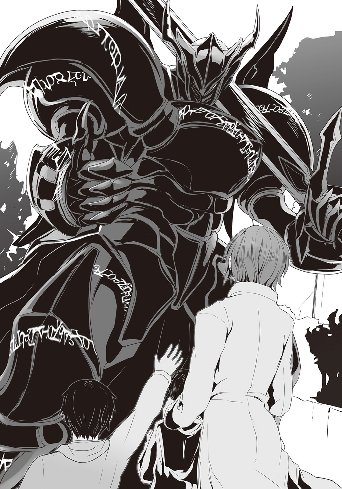
「さあ。地獄に還る時間だ」
外見に似合わぬ静かな口調でそう告げると――巨人騎士は絶望の使徒を撃ち倒すべく、力強い一歩を踏み出していた。
〈ＥＮＤ〉
あ と が き
どうも、軽小説屋の榊です。
『神鎧猟機ブリガンド』四巻――最終巻をお届けいたします。
本書は、三巻の後書きでも書いた通り『ヒーローもののライバルキャラ』『熱血主人公をさめた眼で見ているニヒルな奴』を主人公に据えたこの物語ですが......当初の想定通りの決着に辿り着く事が出来ました。最終巻の内容は本企画を考えた時点から完全に決まっていて、まさしくこれは、そこに辿り着くための物語でありました。
まずは本企画を受け取ってくださったダッシュエックス文庫の編集Ｔ氏、そして素晴らしいイラストを描いてくださった柴乃師に感謝を。その上で最終刊まで付き合ってくださった読者の方々に更なる感謝を。
また作中の重要シーン（本巻第三章）について、ヒントとなるべき話をしてくださった物書き仲間の神野オキナ氏にも感謝を。
閑話休題。
これまでにも私はラノベ書きとして、何本かヒーローもの、ないしそれに類似のものを書いてきましたが（ラノベでヒーローものは売れない、という話は百も承知で）......最初から最後まで徹頭徹尾「ヒーローそのもの」をテーマにした作品はこれが初めてだと思います。
私もご多分に漏れず、仮面ライダー、戦隊もの、ウルトラマン、その他諸々......子供の頃から数多くのヒーロー作品を見てきたわけですが。
しかしある程度の歳になり、浅いながらも知恵がついてきた時、ふと、それらがひどく幼稚に見えるようになってしまいました。
連志郞の言う様に、ヒーロー作品に描かれる『正義の味方』が何かこっぱずかしいものに見えて――『実現出来もしない理想をさも本当のように語っている』子供だましの代物の様に見えてしまったわけです。
で――そうしたいわゆる『中二病』の時期を過ぎ、改めて作品を提示する側に回った際に、『ではヒーローというものの存在意義は何なのか』という事を考える機会が出てきました。
あるいは、これは、生涯ヒーローというものにこだわって、これを追いかけ続けた、仕事仲間の小説家――故・大迫純一師の影響も大きいかもしれません。
生前の彼に、『ヒーローとは結局のところ、なんぞや？』という定義論的な問いかけをした事がありますが、彼は『そのうち俺がそれをネタに書くからな。悪ぃが、商売敵には教えてやれねえよ』と笑っておられました。
彼が亡くなったのはそれから少ししての事です。結局、彼のヒーロー論の集大成たる作品を私は読む事が出来ませんでした。
この『神鎧猟機ブリガンド』は、だから、稚拙ながらも私なりの『ヒーローとはなんぞや？』に対する答えであるわけですが。今になって、大迫氏の答えは果たして何だったのか、気になります。同じとはいわずとも、近いところを突けていたら、いいなあと。
更に閑話休題。
実を言えば、『神鎧猟機ブリガンド』はこの四冊の中で幾つか、敢えて解決させずに残したままのネタがあります。こちらは上手くいけばコミカライズ版で日の目を見る事になると思いますので、少しでも興味を持ってくださった方がおられれば、そちらもよろしくお願いいたします。
ではでは、また、次の本、新たなシリーズでお会いしましょう。
二〇一五年十二月四日
榊 一 郎
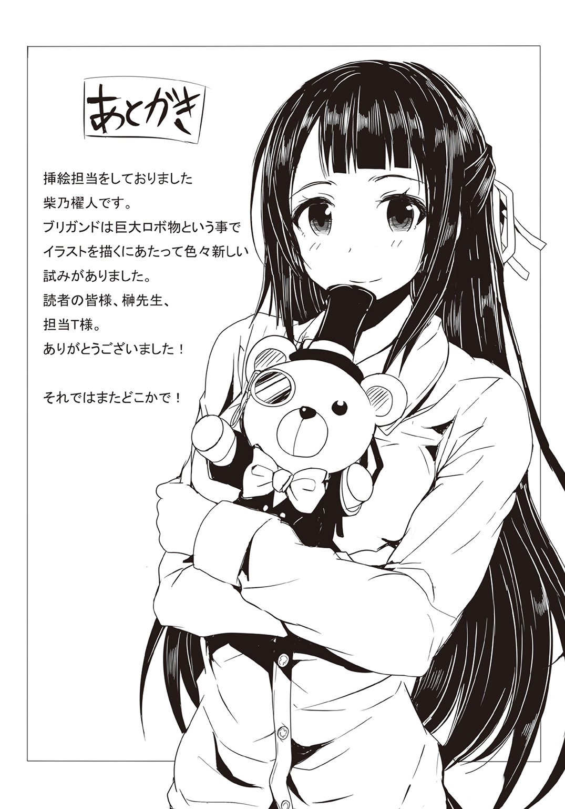
著者紹介
榊 一郎 さかき いちろう
１９９８年に『ドラゴンズ・ウィル』が第９回富士見ファンタジア長編小説大賞に準入選しデビュー。自称『軽小説屋』。速筆であり、多作なライトノベル作家であると同時に、アニメやゲームのシナリオライター、創作講座の講師としても活動中。
illustration
柴乃櫂人 しばの かいと
大阪出身、東京都在住のフリーイラストレーター。
この作品でロボ物を初めて描いたので、自分の中で新境地を開けた気がします。
最終巻、よろしくお願いします！
ダッシュエックス文庫DIGITAL
神鎧猟機ブリガンド４
著者 榊 一郎
© ICHIRO SAKAKI 2016
２０１６年１月31日発行
この電子書籍は、ダッシュエックス文庫「神鎧猟機ブリガンド４」
２０１５年12月27日発行の第１刷を底本としています。
発行者 鈴木晴彦
発行所 株式会社 集英社
〒１０１－８０５０
東京都千代田区一ツ橋２丁目５番10号
０３－３２３０－６０８０（読者係）
制作所 株式会社ＩＣＥ
本作品の全部また一部を無断で複製、転載、改竄、インターネット上に掲載すること、および有償無償に関わらず、本データを第三者に譲渡することを禁じます。なお個人利用の目的であっても、コピーガードを解除しての複製は、法律で禁じられています。